| [竹宮ゆゆこ] ゴールデンタイム3 | |
| 竹宮ゆゆこ | |
| (2015) | |
|
ゴールデンタイム３ 仮面舞踏会
竹宮ゆゆこ
|
底本データ
一頁17行 一行42文字 段組１段
ゴールデンタイム３
仮面舞踏会
はれて彼氏彼女の関係となった記憶喪失男・多田万里と、自称完璧なお嬢さま、加賀香子。
幕が開けた二人のラブラブな日々は、天然だったりやっぱり完璧志向だったり。一方で、万里は過去の関係が白日のもとに晒されたリンダとは真っ直ぐ向き合えずにいた。
そして凹んだ男が一人。柳澤光央は一年生会での盛大な自爆のため深く落ち込んでおり、そんな彼を励ますために万里の部屋でお泊まり会的イベントが発生するが──!?
竹宮ゆゆこ＆駒都えーじが贈る青春ラブコメ、第３弾！
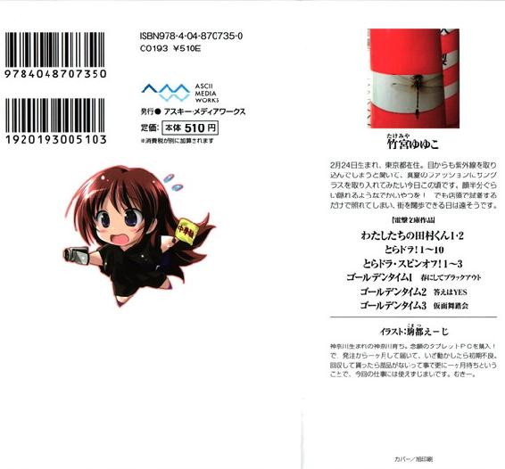
竹宮ゆゆこ
２月２４日生まれ、東京都在住。目からも紫外線を取り込んでしまうと聞いて、真夏のファッションにサングラスを取り入れてみたい今日この頃です。顔半分ぐらい隠れるようなでかいやつを！でも店頭で試着するだけで照れてしまい、街を闊歩できる日は遠そうです。
イラスト：駒都えーじ
神奈川生まれの神奈川育ち。念願のタブレットＰＣを購入！で、発注から一ヶ月して届いて、いざ動かしたら初期不良。回収して貰ったら部品がないって事で更に一ヶ月待ちということで、今回の仕事には使えずじまいです。むきー。
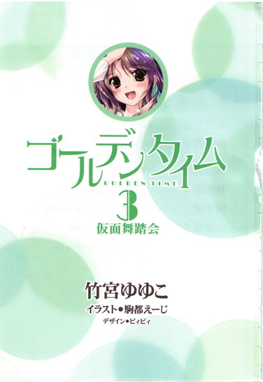
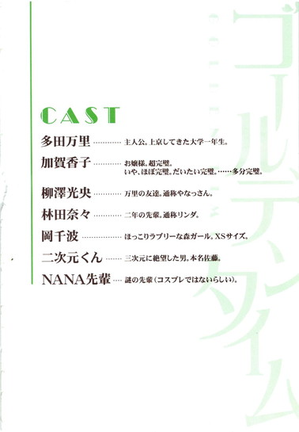
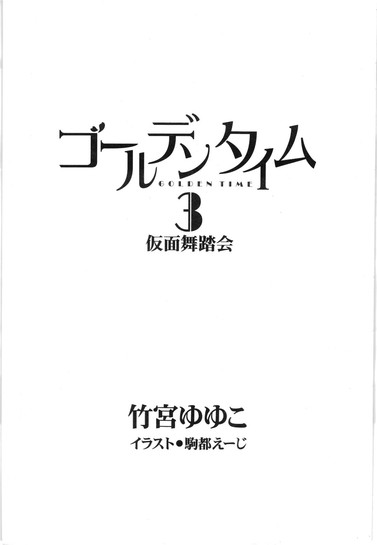
林田家の長男、その名も「アニ」の存在を万里が知ったのは、高校に入学して間もない頃だった。
陸上部にともに入った同じクラスの林田さん、要するにリンダが、
「あれ、実はうちのアニなんだよね」
と微妙に嫌そうな顔で指差した先に、アニはいた。
陸上部と同じくグラウンドで活動しているサッカー部のコーチを、あの頃アニは無償で引き受けていたのだ。
万里たちが通う高校の卒業生で、サッカー部のＯＢでもあったアニは、当時県内の大学三年生。リンダのリアル兄貴だとは思いもよらなかったが、万里も以前からその存在だけは知っていた。あのコーチ、挨拶の声が異様にでかいぜ、と、一目見たそのときから思っていた。
着古したジャージ姿で誰より早く埃立つグラウンドに現われて、サッカー部員たちが駆け足で集まってくるのを仁王立ちで待ち構え、
「ウヴォイッ！」
一人一人に天帝の放つ滅びの雷撃めいた声でそう叫ぶのだ。顎を引いて頷きつつ、熱く燃える眼差しで、大きな手のひらをバッスンバッスン打ち鳴らしながら。部員たちも「アヴォイッ！」と律儀に絶叫を返し、そのままゆるゆると集団を形成して軽いランニングを流すのが常だった。サッカー部の連中の声が常に嗄れがちなのは、確実にそれが原因であった。
あれは「Ｍｙ Ｂｏｙ！」と呼びかけているのだ、という者（愛情派・主流）もあれば、「ＭｙＢａｌｌ！」だという者（声出せよ派）、「速く来い！」と怒鳴っているのだ、という者（鬼コーチ派）もあった。単に気合を入れるために「おい！おい！」と叫んでるだけだろうとも言われていた（ｏｉロック派）。
筋肉質の身体のシルエットは、まるでドンキーコング。体育会系らしいガタイのよさとサッカー経験者に特有の足の太さが相まって、いわゆる類人猿的親しみやすさがアニの全身から醸し出されていた。お世辞にもスマートとはいえないそのゴリラ系統のルックスは、すらりとした細身の妹・リンダとはほぼ正反対の印象で、二人は全然似ていなかった。
やがてアニは、自分に向けられた視線に気付いたらしい。軽くこちらに手を振りつつ、人懐っこい笑顔を浮かべ、ことさら野太く「ウヴォイッ！」砲をズガーン！と放った。
しかしリンダは血縁者ならではの容赦のなさで、「うわ。やだ」と顔をしかめた。「恥ずかしいっつーの」とポニーテイルにした長い髪を揺らし、思いっきりそっぽを向いた。
返す声のない「ウヴォイッー」砲が、グラウンドいっぱいに虚しく轟く。グローブみたいに巨大な手のひらも、消え行く笑みも、すべてが寂しく行き場を失くす。
あまりに居たたまれなくて、万里は慌ててわが身一つ、遅ればせながらそいつを受け止めていた。アニの前に飛び出して、見よう見まね、いや聞きまね、サッカー部の連中のように「アヴォイッ！」と全力で叫び返したのだ。
それを聞いたアニの、嬉しそうな顔といったらなかった。森でバナナを見つけたゴリラもかくやの喜びようであった。野生動物は基本、寂しがりやなのだと万里は知った。自然界では群れからの孤立は命に関わるせいであろう。
以来、アニと万里は顔を合わせるたびに絶叫挨拶を交わす仲になった。時折肩をバーン！とどつかれて肩甲骨が砕け散りそうになったり、「どお!?やってる!?」とご機嫌に声をかけられて「なにをすか？」と尋ねても返答は一向になかったり、やがてアニまでリンダをリンダと呼ぶようになってカオス感が高まったり。
そんな日々は、就職が決まってアニがコーチを辞めるまでの二年間にわたって続いた。
──まあ、それだけ。
言ってしまえば、それだけなのだが。
「俺はアニが、あんなに人のいいアニが、こんなふうに裏切られるのを黙って見てられねーよ！」
高校三年生になった、とある夏の日。
万里は並んでしゃがみこんだリンダの横顔に、強い口調でそう言った。義憤だとか、そういう類の感情が、万里の声をヒステリックに甲高くしていた。たった「それだけ」の付き合いだったとしても、万里には黙っていることはできなかった。
炎天下の路上に、探偵気取りのガキが二人。
電信柱と植え込みの隙間に身を小さくして隠れ、大学受験を控えた大事な脳天を熱光線の真下に晒したまま、すでに小一時間が経っていた。
リンダの日焼けした頬を、こめかみから伝う汗の雫が止め処なく流れていく。困ったように揺れる瞳が、万里の顔を見ずに足元の影に落ちる。唇がゆっくり動く。
「わかってる。でも、ちょっと冷静になろ」
なんだよそれは、と万里は口の中で荒っぽい早口で呟く。
そもそも、大事な相談があるの、と話を持ちかけてきたのはリンダだった。あんたの協力が必要になるかもしれない、と。
あのひとは浮気してる。アニを裏切ってる。私、許せない。そう唇を震わせていたのはリンダだったのだ。
アニが社会人一年目にして結婚するのが決まったとリンダから聞いたのは、確か、梅雨の頃だったと思う。淡い色のアジサイがどっさり咲き乱れる校庭を、雨の雫が筋を描いて流れ落ちるガラス越し、リンダと並んで眺めながら話をしたのを覚えている。
万里はそのとき、心からアニを祝福した。あのアニが惚れ、あのアニの良さをわかってくれる人なら、絶対に素敵な女性だろうと思った。式は秋、紅葉の一番美しい頃にと聞き、それはさぞかし素晴らしい日になると想像した。色とりどりの鮮やかな落ち葉が舞う真っ青な空の下で、一組の幸せな若い夫婦が誕生するのだ。そう思ったら、その日の雨降りの肌寒さも忘れた。
しかしこの夏、アニの婚約者はアニを裏切った。
別の男の許に通っているのを、大手予備校の模試を受けに知らない町まで出てきたリンダが偶然に見てしまった。
リンダは、証拠写真を撮ると言った。動かぬ証拠を突きつけて、アニにも双方の親類縁者にもすべてをブチまけて、過ちの責任をとってもらうのだ、と。破滅させないと気がすまないとさえ言った。破談は当然、生活できなくなるまで慰謝料を払わせて、この先の一生を「不貞を働いた女」の烙印を押されたままボロボロになって孤独に生きて欲しいと。額に「淫」の一文字を刺青してやりたい、そう言ったのも冗談ではなく聞こえた。正直、ちょっと怖い、と万里は思った。
それほどまでに怒り狂っていたのに、いざお供に万里を引き連れて浮気現場のアパートまでやってきて、アニの婚約者が男と腕を組んで入っていくところまで携帯のカメラで押さえて、リンダはいきなりトーンダウンしてしまったのだ。ちょっと待って、そう繰り返して、しゃがみこんだまま動かない。
浮気現場を目撃して、頭に血が上ったのは万里の方だった。いかにも出来ている二人、汚らわしい二人、彼らに踏みつけにされてバカにされているアニ、考えれば考えるほどに怒りは制御できなくなっていった。最低だと思った。こんなの、あんまりではないか。いっそ、アパートにどうにか侵入して、もっと確実に浮気と証明できる写真を撮ろうと万里は考えた。汚らわしい二人がアパートに手を繋いで入っていっただけの写真では、卑怯にも言い逃れされるのではないかと思ったのだ。
それなのに、
「......ねえ。さっきの腕組んでる写真、万里の携帯でも撮れた？」
「撮れた。撮れたけど、でもやっぱ、どうにかしてもっと決定的な写真を」
「削除してくれない？」
ぽかん、と間抜けに口を開けたまま、万里はリンダの顔を見返した。聞き違いではなかった証拠に、リンダは自分の携帯を開き、
「ちょっと!? は!? なにしてんだよ!?」
止める間もなく、ついさっき張り込みの末にやっと撮れた写真を削除している。
「ごめん。考えが変わった」
リンダがようやく上げた顔は、日焼けも浮いて見えるほどに蒼白で、
「私は大人の仮面をかぶるよ」
万里はとっさに返す言葉を見失った。
この何分かの間にリンダの心境にどんな変化が起きたのか、想像することもできない。まったく理解できず、ただその冷たくも思える顔を見返す。
大人の仮面って、なに？ 具体的にどういうこと？そう訊くことさえできなかった。
アパートの鉄階段を下りてくるヒールの音が、そのとき二人の耳まで届き、万里もリンダも瞬間的に息を詰めた。アニの婚約者が一人で出てきたのだ。彼女の車はすぐそこの駐車場に停めてある。チャラ、とキーホルダーの揺れる音。どうする、と万里が吐息で問うのを目で制して、リンダは一人、立ち上がった。
「話してくる」
ここで待ってて、と。
「え!? な、なにを!?」
「もうこんなことはやめて、って言う」
「言う、って......淫の字はどうすんだよ!?」
答えず、リンダは夏服のスカートを翻し、一人でアパートの前の駐車場へ小走りに入っていく。シルバーに光るワゴンＲに乗り込もうとしていた婚約者は、近づいてくるリンダの姿に気が付いたのだろう。何秒間か無表情のままその場で固まり、どういう感情機制が働いたのか、「あれー!?えへへ！」と大げさに笑って見せた。しかしリンダが「車の中で話したいんですけど」と言うと、急に怯えた顔になって、「え、違う違う、違うんだよ、いま無理だから」とアパートの中へ駆け戻ろうとした。走り寄った万里がとおせんぼするように立ちはだからなければ、この人はそのまま逃げていたのだろう。
大きなトートバッグを持って、ベージュのコットンの帽子をかぶって、腕には日焼け防止の運転用薄手ロング手袋をはめた、ごく普通の女の人だった。
リンダと車の中に入っていくなり、取り乱して泣き始めたのが万里にも見えた。媚を売るみたいに助手席のリンダの肩に弱々しく両手をやって、身体を傾けて顔を近づけ、必死になにか言い募っている。
万里は、そんな様子に背を向けて車のボンネットに尻を乗せた。その焼けた鉄板みたいな熱さに一瞬飛び上がりかけるが、堪えて、ズボンのポケットに両手を突っ込んだ。
アパートの、二階だ。さっきまでぴったり閉まっていたカーテンが揺れて、数センチの隙間から男がこちらを見下ろしているのに気付いていた。
さっき見かけた相手の男だった。万里には、カーテンの隙間から覗く片目しか見えず表情はわからない。
怖い、と思った。
それに車中の女も怖い。今はさめざめと泣いているが、いきなりキレて人格が豹変しないとも限らないではないか。リンダも、そして自分も何をされるかわからない。こんなひどいことを平気でやる奴らなんだから、普通の人間の常識は多分通用しない。
そんな恐怖に耐えながら、万里はそれでも必死に肩をいからせて、熱いボンネットに座っていた。わざと大きな動きで足を組み、貧乏揺すりをし、顔を歪め、目を眇め、己を少しでも大きく、強く、悪く見せようと踏ん張っていた。
自分はリンダの用心棒なのだ。こんなんでも、一応。なにかの際には身体を張って彼女を守り抜かねばならない。だから心底びびりながらも、万里は必死に悪ぶった。
そうしながら、責めてやれ、と思っていた。女をとことん責め抜いて、再起不能にしてやれ。あんたは最低だ、破滅しろ、絶対に許さない、覚悟しろ、そう責めて詰って淫の字タトゥーの刑に処してやれと。
しかしそんな万里の思いに反して、漏れ聞こえてくるリンダの声はあくまでも冷静さを保っていた。
もし結婚をこのまま進めたいと思ってるなら二度とこんなことしないで下さい。私は忘れますから。お願いだからもうやめて下さい。
泣きじゃくって頷くばかりのアニの婚約者にただそう繰り返して、
「運転はもう少し落ち着いてからして下さい。事放らないように気をつけて」
最後にはそんなふうに気遣いまでしたのだ。
車から降りたリンダに大股で駆け寄って、万里はその肩を半ば無理やりに抱き寄せた。そのまま恋人同士のように寄り添って歩きながら、
「絶対後ろ振り返るなよ。......あの男、さっきからずっとこっち見てる」
「......マジで？ こわ......」
リンダはなぜか「ふふふっ」と軽く笑い声を上げた。
抱いた肩が震えている。
強張って蒼白になったリンダのその顔は、中学の時に美術の教科書で見た絵画の──確か、狂女ファナ。あの、完全に壊れてしまって、虚ろに目を見開いていた女。一時的に顔真似が流行ったから覚えている。あれとそっくりに万里には思えた。
駐車場を出る直前、万里はこっそりと自分だけ背後を振り返った。車の中ではまだアニの婚約者が泣いていて、窓からこちらを見下ろしていた男の姿はもう見えなくなっていた。それでもまだ怖くて、万里は曲がり角を二つ過ぎるまで、リンダの肩を抱いたままでいた。
黙りこくったまま、二人は夕暮れの道を歩き続けた。
できるだけ現場から遠く離れたかった。口には出さないまま、リンダも同じ事を思っていたはずだった。ただスタスタと、振り返らず、足を動かし続けた。
アスファルトが足元からむわっと熱気を放ち、遠く山ではヒグラシが鳴いていた。ドライヤーの熱風が吹き付けるみたいでまともに息もできなかった真昼に比べたら、日が傾いたせいか、これでも少しは涼しくなってきたのかもしれない。ぬるい空気に青い夏草が濃く匂う。
二人は一言も口を聞かないままでコンビニに入り、ドリンクを買って、駐車場の車止めに並んで腰を下ろした。
カラカラに乾いていた喉を潤して、そのまましばらくへたりこんで、リンダはやっと口を開いた。
「......もうしないで、って言ったら。わかった、って」
わかった、って。
どう突っ込みを入れればいいのかとっさにわからず、万里は隣のリンダの顔をただ見返した。リンダは喉を反らしてもう一口炭酸のドリンクを飲み、シュワシュワと泡の弾けるペットボトルを両手でもてあそんで、
「......全部壊しちゃうよりいい。私さえなにも知らないふりを通せば、今までどおりうまくいくんだ。なにもなかったことになる」
言い訳じみたことを言う。
ごく、ごく、と喉を鳴らして冷たいウーロン茶を飲み、ようやく万里も一声、搾り出した。
「それって、正しいか？」
橙色の西日の中、眩しげに目を半ば閉じ、リンダは炭酸の泡を覗き込んでいる。斜めがけにしていたスポーツバッグを思い出したように地面に下ろし、わからない。そう答えて、ペットボトルを足元に置く。立てた膝に顎をつける。
「......だってさ、でも、アニを傷つけたくないって思っちゃった。あの現場で、全部これで終わらせられるってところを目の当たりにして、そしたら私......アニを悲しませるのがなんかすっごく怖くなって......」
「アニのためかよ!?」
ペットボトルがへこむほど握りしめて、万里は自分の靴先に向けて声を上げた。
「このまま知らんぷりでいるのが本当にアニのためになるって思うわけ!?この先、ずっとだぞ!?家族になるんだぞ!?子供とかも多分できるぞ!?あの人のことを姉さん、自分の姉って思えんの!?おまえんちの父さん母さんにしてみたら、」
「やめてよっ！」
一声叫んで、リンダは膝に顔を伏せた。両手で髪の毛ごと耳を一度掴み、そのまま自分の頭を抱える。飛行機事故の時に指示される、衝撃に耐えるための姿勢。空高くから為す術なく落下して、地面に叩きつけられても、生き残るために身を守る体勢。
「今、あんたが言ったようなことは、全部そのとおりだよ！わかってる！私はまちがったのかもしれない！でも、しょうがないじゃんか！もうこうしちゃったんだもん！」
いやいやをするみたいに身体を揺すり、リンダは長い髪を指でくしゃくしゃにかき乱す。
「そ......それに、そんなに強く言わないでもいいじゃんか......！」
確かに、リンダを責めても仕方がないことだった。
我に返り、万里は唇を舐めた。もう一口ウーロン茶を飲む。仕方がないというか、権利がない。リンダは自分の行動を決め、実行した。その結果について、万里は責任を負うことができない。裁くことなどできない。
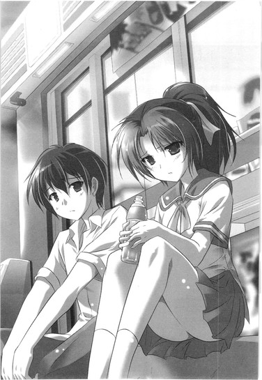
ふと思う。──大人の仮面を被るというのは、つまり、これをこそ言うのだろうか。裁くことはできない。そう納得して、口を噤むこと。
ただし仮面というからには、その下には素顔を隠しているのだ。タトゥー彫ってやる！と喚いた顔を、リンダは結局、仮面の下にもったままでいるのだろう。誰にも見せないと決めた顔を。
「......ごめん。俺、言い過ぎた」
リンダは、泣いているのかもしれない。たった一人で背負い込むことになった罪の重さに、今になって打ちひしがれているのかもしれない。リンダ、ともう一度呼びかけて、ごめん、まじで、と繰り返して、それでもリンダはぴくりとも動かなかった。ただ呻くような、か細い声で答える。
「ほんと......大変なことしちゃった。この先ずっと、私、耐えられるのかな？アニは騙されたまま生きてくんだ。そして私はうそつきの一味だ。加害者になっちゃったよ。どうしよう。どうしたらいいの？やばいよね。間違ったよね、私。どうしよう。どうしよう......」
「俺は」
万里は息を吸い、リンダの張り詰めた首筋を見つめながら言った。
「......俺は、その......全部、見てたから。だから、リンダは一人で苦しまなくていいから。頼りないかもしんないけど、なんにもできないけど、でも俺もいるから。ずっと傍にいる」
全部見ていた。ちゃんと見ていた。リンダがなにを思ってこうしたのか、なにを悔やんだか、なにを間違ったか、なにを抱え込んだか。分け合うなんてできなくても、
「俺は絶対、忘れないから」
傍にいる。
そう呟いた次の瞬間、リンダの手が万里の抱えていたビニールバッグに伸びた。奪い取って、汚れたジャージが入っているそのバッグに顔を突っ込み、
「あ～～～～～～～～～～～～～～～～～～～～っ！」
リンダは叫んだ。
金切り声の全力で、身体を震わせ、絶叫していた。万里の汗と砂埃で汚れたジャージが叫びを受け止めた。
いいよ、と万里はそれを見ていた。
なにをしたっていい。
叫んだっていいのだ。泣いたっていい。リンダは一人ではない。自分がここにいる。いて、すべて見て、聞いて、受け止めて、覚えておく。万里は大きくもう一度息を吸い、声を絞り出した。
「俺はリンダが叫びたい時、泣きたい時、絶対そばにいる。同じ気持ちを分け合って、一緒にいる。たとえ迷惑でも、どこにいても、絶対に見つける」
「......どうやってよ？」
「どうやってって......そりゃ、どうやってでも。リンダの声に、いつも耳を澄ませてる。雨が降ったり、風が吹いたり、花が散ったり、影が差したり......いろんな、どんな気配にも、俺はリンダの声を捜す。そうするって、約束する」
一人ではない。誰も君が隠した悲しみを、迷いを、過ちを、知らないでいるわけじゃない。俺がいる。俺が知ってる。そうありたいのだ。万里は心からそう思う。
だらりと下ろされたリンダの小指に、万里の手が偶然に触れた。握ることはできないまま、万里はただ、静かに指先を触れ合わせたままでいた。
リンダのことが、どうやら自分は本当に好きなのだ。
染み出すような熱い自覚が胸を急激に重くする。
一緒にいたら楽しい。ただそれだけじゃなくて、もっとたくさんのことを分け合いたい。そう願ってしまうのを、もはや自分は止められない。リンダの指先は、触れたまま。気付かれてしまったら、すこしでも動いたら、なにもかもが壊れてしまいそうだった。息をするのも怖かった。
「......本当に？」
触れ合った部分が、心臓そのものになったようだ。熱く疼いて、苦しく脈打っている。
ほんとに？ ほんとに？ ほんとに？ 繰り返されるリンダの声が、いつしか震えて、吐息が跳ねる。
「......万里を、信じていいの？」
リンダが顔を上げた。その顔を見られず、声も出せないまま、万里はおずおずと頷いた。正直なところ、このときはまだ、ダメそうなら『普通に友達』に戻れる余地を──安全な退避経路を、確保したいとも思っていた。
見ればよかったのだ。言葉にすればよかった。安全なんて、考えなければよかった。
目を見て、ちゃんと、答えればよかった。もしもこのときそうしていたなら、後の展開は違ったものになっていたかもしれない。
しかし万里がそう思うのは、もっとずっと後のことだ。
手が届かなくなってから。アニのことなど思い出すこともできなくなって、二人で見たあじさいの青も紫も、息苦しかった真夏の匂いも、夢見た秋空の美しさも、すべて忘れてしまってから。二人の距離が、どうしようもなく遠く離れてしまってからだ。
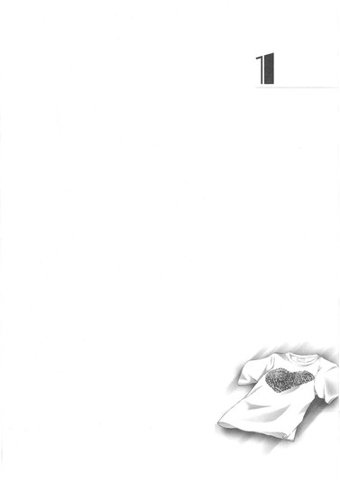
１
多田万里が加賀家の両親に頭を下げている。
そして俺は......ドンびきしている。
死した亡霊であるこの俺が、普通に生きている人間にここまでがっつりドンびきさせられるとは。加賀香子、この女。結構たいしたヤツなのかもしれない。
それにしても今宵の捕り物はまっこと見物であった──なんて霊ゾラ丸出し、他人事全開におもしろがれるほど、この数時間に起きたことは俺にとっても無関係ではなかった。
今からおよそ二時間前。
彼女は未成年でありながら飲酒した挙句の自転車強奪、というやばすぎる罪科で、警察署の一室へご案内されていた。万里も一緒だ。そして必然的に、万里の守護霊状態でいるこの俺も一緒。
数人の婦警さんに連れられていった加賀香子とは離されて、無機質な蛍光灯の下を万里と並んで居心地悪く歩き進んでいくと、小さなソファのある部屋に通された。
その部屋は「犯罪者用」ではないらしく、出入りするドアも開けっ放し、夜中でも忙しなく人の行き来があって騒々しいオフィスの気配も間近の、相談スペースのような部屋だった。
そこで待たされること、しばし。いや、かなり。
それまで絵に描いたようにおどおどキョロキョロ、びびりの権化のようになっていた万里は、お茶まで出されて思わず一息つきかけたが、やがて続々とラフなジャンパースタイルにパンチパーマ、腰には無線機つきのがっしりしたおっちゃんたちが「さーてさて」わらわらと現れ、「正確に書いてね」とペーパーを渡され、名前と住所を書かされ、一息なんてついている場合ではないと改めてプルプルわなわな、びびりを再開した。
そりゃそうだろう。俺だってびびる。びびっている。この記名した書類は一生残るのだろうか、だとか。就職のときにこれが響いたりしないだろうかとか。こんなときに限っていきなり禍々しい入電の音声がフロア中に響くし。
あんのぉー、とか細い声で万里が口を開いた。ぺたりと頬に卑屈な媚笑い。
「彼女、逮捕されちゃったんですか......？て、て、ていうか、あれ、原因は自分なんですけど......た、多分......」
向かいのソファには誰も座らず、おっちゃん──壮年の警察官たちは、中腰になって万里の顔をじっと見つめている。万里は必死で、しゃべれる限りのことを正直にしゃべる。
大学の同級生同士、未成年なのについ飲酒してしまった。大変に反省している。自分は記憶喪失というやっかいな状況にあって、日々ストレスが溜まっている。飲酒の影響もあったのか、衝動的に危険な車道に飛び出していってしまった。加賀香子は事故を起こす前に安全を確保しようと、必死に自分を追いかけた。しかし女の足では追いつけず、自転車を一時的に借りるつもりで拝借した。結果、このようなことになった。
自転車の持ち主にも、社会にも、多大な迷惑をかけてしまった。
「......本当に......申し訳ありませんでした......！」
腰の沈むソファで前のめりになりながら、万里は必死に頭を下げた。飲んでいた店と詳しいシチュエーションを訊かれたらやばいかもしれない......万里の傍らで気を揉んでいる俺にはもちろん誰も気づいていない。未成年飲酒の責任は、サークルにまで及ぶかもしれないのだ。
ふう～ん、と感情の見えない、しかし異様なほどによく通る声で、警察官の一人が頷いた。
静岡の実家の住所と電話番号、父母の携帯番号、かかりつけの病院の名称を新たな用紙に書かされて、ボールペンを握った万里の手元はみっともなく震えた。落ち着け、と紙の端を押さえてやった俺の手も動揺して冷たくなっている。この肉体に実体があったらきっと手汗べっちょりだ。その紙を持って、警察官たちは部屋の外へ出ていく。
そしてさらにしばらく時間が経った頃、開け放されたままのドアの向こうを二つの人影が急ぎ足で横切っていったのに気がついた。足音を聞いて俺も万里も顔を上げたが、そのときにはすでに姿は見えなかった。香子がどうだとかバカだとか言っていた気がする。あれが加賀家の両親なのだろうか。
そのとき警察官の一人が顔を出し、「多田まり、じゃなくて万里。今君のご両親もこっちに向かってるからな」──まじかよ!?と喚いたのは、俺。生身の方の万里は、無言で天井を仰ぎ見てから両手で顔を覆った。ずるずるとソファのケツが前方に滑り、カーペットの床に膝をつきそうな体勢になる。
親まで、呼ばれてしまった......。
車か。新幹線か。いやそんなのどっちでもいい、どっちにしても......ああ。あああ。なんてことだと思う。
あんな事故を起こして、死に掛けて（実際このとおり死んでいるのだが）、散々に心配かけて、それでも信じて東京にやった息子が、警察に捕まっているなう。
どこまで親不孝をすれば気がすむんだ多田万里。というか、俺。
しかしその一報からわずか数分、再び同じように警察官が顔だけ出して、
「ご両親、今引き返したから」
「......はいっ!?」
今度こそ、万里はソファからずり落ちた。
ご両親が登場して急転直下、加賀香子の放免が決まったのだという。なので流れ的に万里にもお咎めなし、このままさっさと帰宅して、成人になるまではもう飲むなよ、と。
聞けば、弁償内容を提示された被害者の高校生が「最大限に寛大な処分」を熱烈に要望したのだという。さらに友人、つまり万里の記憶喪失という特殊事情の裏づけも取れて、それも大きく考慮されたらしい。加賀香子本人も深く反省している。
そしてなにより、両親は地域の信頼も厚い医師であって、紳士会の主要メンバーとしても長年社会に貢献しており、今後は娘の行動を厳しく監督すると言っている。
そういう事情で、厳重注意のみという軽い処分で奇跡的にすんだのだ、とか。
警察官たちの後についてロビーへ出ると、加賀家のご一同がそこにおわした。万里は思わず足を止め、俺は万里の背中に追突した。いてーよ、と後頭部に言ってみても、もちろん返事はない。
申し訳ありませんでした、娘がご迷惑をおかけいたしました、と立位体前屈ほどの角度で繰り返し頭を下げるご両親は、見たところうちの親よりも随分年がいっていそうで、しかしものすごく趣味のいい服装をしていた。その辺の普通のおっちゃん、おばちゃん──たとえば多田勝紘ちゃんや美恵子ちゃん──とは明らかに一線を画する人種なのだと、誰の目にも、霊の目にも明らかだった。
そしてその二人の後ろに、加賀香子がいた。
悄然として項垂れ、破れたタイツの膝の穴に応急処置の絆創膏。花柄シフォンのミニワンピースは黒っぽく汚れ、白い肘にも、長く垂らした髪の隙間から見えた横顔のほっぺたにも絆創膏。ハイヒールをストラップでぶら下げて手に持って、足元はスリッパだ。ヒールがない分、身長も低く、彼女は随分しょぼくれて見えて、
「加賀さん！ 大丈夫!?」
万里は思わず、声をかけた。
その瞬間だ。
んがー、と無粋な音を立ててロビーの自動ドアが開き、夜風が強く吹き込む。振り向いた香子の長い髪が、ギャルい洋楽のＰＶみたいにぶわっと激しく吹き上がる。そしてここからはまるでスローモーション。
万里を見つけて、乱れた髪を二度、三度、ワイルドに振り、キメ顔──遠くを見るように目を細めて唇半開き、鼻先に乱れかかる髪を片手で軽く押さえながら小指は前歯で軽く噛む。女豹のしなやかさでウエストを捻り、もう片手はその腰に、そして、
「Ｍｙ Ｂｏｙｆｒｉｅｎｄ......」
囁くのだ。巻き舌で。うっとりと。
ぶはぁっ！ と唾の飛沫を盛大にスプラッシュしながら万里は噴いて、俺は脱力して膝から崩れ落ち、加賀家の母親は娘のワンピースについていたベルトの部分を背後から手綱のように思いっきり引いた。
万里に接近しようと前進しかけていた身体を引き戻されて「ぐえ」と一度呻き、しかし加賀香子は動じない。
改めてファサァッ......斜め45度。髪をかきあげながら白い歯をちらり。捻った身体を傾けて、キラキラと潤んだ眼をして彼女は言う。腕に押された胸元がぐっとせり出されたように盛り上がる。
「なんだか私たち、早くも家族ぐるみのお付き合い、って感じじゃない？」
警官が止めなかったのは拳のあまりの速度のせいか、それともあえての判断か。加賀家の父親の右ゲンコツが、色ボケ娘の後頭部をえぐい角度で抉った。ボグッ！と響いた頭蓋骨の音に、万里は思わず後ずさり、俺は万里の背後に隠れたが、加賀香子はと言えば「ポリポリ......蚊でも止まったかな？」ぐらいの、いや、「そういえばこいつらまだいたんだっけ？」ぐらいの軽さでひょいっと両親を見返り、
「ねえパパ、ママ、あの人が私の彼氏の多田万里くん。ステキな人でしょ？」
それはもう嬉しげに万里を指し示してみせる。
その瞬間の、加賀家両親の脱力ぶりといったらなかった。そのまま脱魂、俺の世界の住人になってしまってもおかしくないほど、がっくり肩を落としてポンコツ娘を無言で見やっていた。そして万里は、
「......」
疲れ果て、ご両親に頭を深々と下げてみせるのが限界であった。
いろいろなことがありすぎて、精神的にも肉体的にもあちこちズタボロ。口を開くことももはやできないでいるのだ。
そして俺は、ドンびきしている。
とんでもない女と付き合うことになってしまったではないか。
かつてはこの俺のものだった生命の、多田万里の、これが彼女。恋人だ。ついさっき、溢れる想いを涙混じりに告白しあい、正式に男女交際を始めようと誓い合った相手であった。
とにかく今夜はアパートまで車で送る、と言ってくれた加賀家のご両親の厚意に甘えることなんてもちろんできず、エビみたいなへっぴり腰、ほとんど逃げ出すようにして万里は一人、駅へ向かった。
終電間際、ひどく混み合う車内で酔っ払いたちに揉まれながら、万里はひたすら目を閉じて混雑と揺れに耐え、両足を踏ん張っていた。
まさか、こんなことになろうとは──何千回、何万回繰り返したかしれない述懐をまた繰り返し、俺も万里のすぐ背後で同じように揉みくちゃにされている。
もちろん、これまでで最大の「まさか」は死んだことだ。
高校卒業直後に橋から落下する事故にあい、俺という中身はその衝撃で肉体から放り出されてしまった。それまで十八年間、多田万里として生きていた肉体にはもはや戻ることができず、からっぽになった身体の方は「記憶喪失」と診断されて、新たな人生を歩み始めた。そして俺は、死者となった。漂える霊魂として消えることもなく、いつもこうして生きている万里の傍らにいる。
生きている万里がどんなすごいのと付き合うことになっても、意見を差し挟むこともできないまま。
携帯が震えて、メールが届く。腕を動かすのも遠慮しいしい、なんとか携帯を開いて確認すると、母親からだった。ホームでの電話の続きの内容で、「吉田のインターの手前で引き返して、もう家に帰ってきている」と。返事は打てず、万里はそのまま携帯をポケットに押し込む。
心配かけてごめん、と電車を待っている間にかけた電話の向こうで、母さんの声は疲れ果てていた。あんたについてはもう一生分心配したつもりでいたんだけど、と、言われてしまった。
返事を打っていないメールは、他にも二通あった。差出人は、二通とも、林田奈々。
リンダ。
──リンダ。
万里は窓の向こうを見た。人の頭の隙間から、真っ暗な東京の夜が見える。ガラスに映った多田万里の顔は当然ひとつ。
若い、疲れた男の顔。悪い息子。生き返った、多田万里。見つめているうちに、万里の目元はほんのすこし優しくなる。くすぐったそうに唇を窄めて笑いかけ、しかしすぐに物思いの影がその面をよぎる。笑みはほろほろと解けて消える。視線は憂いに曇り、ガラスに映りこむ自分の顔を見る眼差しは他人を見るような戸惑いに揺れる。
新しい恋人のことを想い、そして己の身の上を思い、疲労と混乱に負けそうになっているのだろう。
万里は、この俺のことを、なにかものすごく怖いもののように──万里が生きていることを恨み、死の世界に引きずりこもうとする悪霊のように思っているのだった。
黒いガラス越しにこちらを見返す自分の顔を見ながら、俺は万里の耳元にそっと語りかけた。
おまえを、恨めしく思ったことなんてないよ。
こうなってしまったことももう諦めている。死んでほしいなんて思ったことは、絶対にないよ。おまえを追いかけ、追い詰めようとしているわけではないんだよ。
もちろん、俺が「過去の亡霊」であることに間違いはない。
でも、俺は、目的があってここに居残っているわけでもない。俺がおまえを追い詰めるだとか、そんなふうにおまえが思うのは、この状況のストレスと、「こんな自分がこの先もずっと健全な生活をおくれるわけがない」という、いわば負のプレッシャーのせいだ。精神疲労が見せる、実体のない幻想なんだ、そんなのは。よくない夢だ。
ただ、俺は、ここにいるしかないだけなんだ。消えないから、在るしかない。それだけなんだよ、本当に。
＊＊＊
「ロ・ミ・オ・さ・ま」
にゅー、と真っ白いものが視界の隅から伸びてきて、
「ジュリエットの、登場よ」
「......び......」
いきなり万里の左腕を絡めとる。そのままぴたっとくっついてきて、
「っくりしたー......！ 誰かにいたずらで搗きたて餅つけられたのかと思った！」
「おもちじゃないの」
私だよ、イッツミー、
「ジュリエットこと、あなたの彼女の、香子だよ！」
上目遣いで満開の笑み。
香子は餅かと見まがう真っ白な手で万里の腕にしがみついたまま、瞳をキラキラ輝かせていた。
「おはよう、多田くん」
「おは、」
声が裏返って照れ笑い、にひぃ～～～......と今度は万里が餅化する。顔面全部でぐんにゃり笑ってそのままとろとろに溶け落ちかけて、同じ軟度で香子も笑う。二人はさながら見詰め合う餅と餅。
「......おはよう。加賀さん」
おはよ、ともう一度香子。おはよ、とさらに万里。うふふ、うふふ、うふふふふふ、と二人して。
そう。
あの一夜が明けて、今。二人は正式に交際を始めた彼氏と彼女になったのだ。社会的には「カップル」と呼ばれる単位で数えられるべき存在となった。
互いに手と手を握り合って、なんならこの場でクルクル回転したい。しないまでも、もはや世界全部が二人のための舞台と化す。
この雑踏はオーケストラで、あの蛍光灯はスポットライト。この人ごみは祝福のパレードで、改札の合成音は天使が奏でるラッパの調べ。見詰め合う目と目、握り合う手と手、服越しのぬくもり、永遠のひと時......鼻先で濃厚に香る薔薇のトワレは滴るほどに甘ったるくて、万里の腰はへなへなになる。朝一番から、速攻で。
恋焦がれ続けた女王陛下の完璧な美貌の前になんならこのまま倒れ伏してもよかったが、朝、八時半過ぎの大学最寄り駅の改札口は新カップルお披露目の舞台であると同時に通勤通学のピークタイムでもあった。
行きかう人々で凄まじくごった返すこの狭い空間においては、通路でべっとり立ち止まって見詰め合う二匹の餅など迷惑きわまりない。ここが老人の喉だったならラッパの天使は愛の使者ではなく、単なる突然の「お迎え」だ。たちまち流れに滞留が起きて、
「あ、すいません！ いでっ！ すいません！」
主に万里のケツや背中、殺気立った人々のカバンや肘がガツガツ当たる。ついでにキャリーに足を轢かれて、邪魔くせーな、と舌打ちまで。万里は全方向に謝りながら慌てて背を反らしてつま先立ち、人の流れを妨げないよう空しい努力に身をくねらせる。
一方香子はうふっ！ とキメ顔キープ、
「おはようって言うために、ここで三十分待ったんだよ？」
万里のシャツの袖口を両手でにぎにぎと掴み、小首を傾げ、おもちゃをおねだりする子供みたいに愛らしく大きな瞳を瞬かせている。
「三十分も？ こんなとこで待ってたの？ メールくれればよかったのに」
「愛情を表現したかったの。ほら、あの......あれみたいに......フサフサの......」
「フサフサ？」
「リチャードギアを待ち疲れて死んだ......」
あれだよあれ、と香子は両手を軽く握って顔の前にちょんと揃えて見せ、舌を出して「へっへっへっへ」と万里を見上げてみせる。
「え、え、え？ い、犬？」
「そう、犬！ 渋谷にいるじゃない、ほらあの犬......」
「え......？ もしかして、ハチ公のこと言ってんの？」
「そうだよすごい多田くん！ やっぱり私たちって通じ合ってる！」
きゃー！ と一人盛り上がる忠犬香子を見つめ、しかし万里の脳内には盛大にハテナマークが乱舞する。なぜハチ公が、いや犬がするっと出てこない。いやいや待て待て、それ以前に、
「リチャードギアを待ってた......んだっけ？ それ俺、初耳かも」
「ははーん」
香子は人差し指で、トン、と万里の胸のあたりを軽くつついた。わかっちゃった、とほくそ笑みながら。
「多田くんが今頭の中に思い描いているのは、西郷さんの犬だよ！」
そんなことねーよ、という間も与えられず、
「あれはね、う・え・の。別に誰かを待って死んだわけでもないの。多分。そうだ、今度見に行こうよ！西郷さん見て、上野公園とか不忍池ブラブラして、美術館の周り散策して、動物園は別のときにとっておくの。パンダもスルー。でも絶対楽しいデートになるよ！んー、まああの辺り、露天で在住の皆さんが多少ちらほらしてるけど、それもまた風景の一部っていうか？」
「ていうか上野って俺......あ、うわわ......っと！」
ドシッと向かいから殺気立ったサラリーマンに肩で思いっきりぶつかられ、万里は蹈鞴を踏んだ。
次の電車がホームを出て、改札からさらに多くの人の群れが塊となって押し寄せてくる。万里と香子が立ち止まっている付近は乗り換え口へ向かうＹ字通路のど真ん中でもあり、さすがにこれ以上ここでのんびり立ち話をしてはいられなさそうだった。
「とりあえず歩こう！ 進もう！ 迷惑だから......うわ、足踏んじゃったすいません！」
先に立って歩き出しつつ、男らしく香子の手を握ろうとした。しかし狭い通路は混みあっていて、すぐに香子との間は人の流れに離されてしまった。
仕方なく先に進み、駅の構内を抜けたところで香子をしばし待つ。香子はすこし遅れて人の群れからまろび出てきて、
「ふう......なんだか今日っていつもよりラッシュひどくない？」
すこし乱れた髪をかきあげる。
「地下鉄で遅延あったみたいだし、そのせいかも」
さりげなく、万里は香子のその手を掴もうとするが、
「あらー、そうだったんだ」
気づかず香子はバッグの中に手を突っ込んで荷物をかき回す。大丈夫、すられてない、と財布の所在を確認したらしい。そして万里が差し出していた片手に気がつき、
「え？」
無邪気な笑顔で不思議そうに小首を傾げる。
「......ん？」
なに？ なんでもないけど？ この手は頭をかこうとしただけだし──自然にいかなかった場合は妙に気恥ずかしく、万里は頭をかいて誤魔化す。
さっきはあんなにうまく自然に手を握れたのに、いざ改めてやろうとするとしくじるのはなぜだ。あのもみくちゃの混雑が、実は良い感じに作用していたのだろうか。だとすると、次回ラッシュ時にうまく手を握れた際にはそのまま一生離さない方がよさそうだ。
手つなぎ登校はとりあえず諦めて、万里は香子と肩を並べて横断歩道の前で立ち止まった。香子はすこし眩しげに目を細め、「そろそろ日傘がいるね」と白い手を顔の前にかざす。綺麗な色石のリングが細い指に光っている。
今日の天気は白っぽい薄曇りで、万里はそんな香子を「おおげさだなー」と笑ってみやった。ううん焼ける、これ絶対焼ける、ていうか私たち今焼けてる、と香子は手をかざしたまま、頑固に首を横に振り続ける。
テレビの天気予報によれば沖縄辺りはもう入梅の頃で、東京都心に吹く風も、今日は微妙に生暖かい。気温もこれから上がりそうだが、それ以上に湿度が高いような気がする。長袖シャツの万里の肌にも、湿った空気がもやっとぬるい。
青に変わった信号をハイヒールで優雅に渡りつつ、香子はすこし悪戯っぽく万里の顔を覗き込んでくる。
「明日は多田くんのアパートの前で待ち伏せしよっと。日傘とＳＰＦ50スリープラス、完全ＵＶカットで」
「どーぞどーぞ。ていうか、別に待ち伏せなくたっていいんだけど。一緒に学校行くなら、ちゃんとどこか中間地点の、落ち着いたところで待ち合わせしようよ。......あ、うそ、やっぱ落ち着かないところがいい。人ごみで死ぬほど混んでて、わっさわさのとこで」
「だって、好きなの」
狭い道路のガードレールの内側に入り、縦並び一列歩き。
さりげなく資格試験予備校の壁面ガラスで全身のみだしなみをチェックしつつ、ほう、と万里は少し後ろをくっついてくる香子の白い美貌を振り返る。さすがのストーカー気質。根っからその手の隠密工作活動が好きなんだな加賀さんは、と納得しかけて、
「......多田くんが」
不意打ちの甘い言葉に思わず足が止まった。好きなの。多田くんが。
「だから、待ち合わせじゃだめなの。一秒たりとも、一メートルたりとも、無駄にしたくないんだもん。多田くんの一日の最初の一歩目から、一秒目から、一緒にいたいの」
香子は立ち止まった万里を追い抜いて、ハイヒールで先を歩き出す。振り返り、どこか得意げに「どうしたの？早くいこ？」と首を傾げてみせる。
こんなの序の口......まだまだだぜ......と耐え切ろうとして、それでもやっぱり頬が熱くなる。顔が緩むのも制御できず、万里は笑った。ニヤつくとかデレデレするとか餅化するとかそういうレベルではもはやなしに、
「わはははははははっ！」
腹の底から声を出して、思いっきりの大笑い。高笑い。握った拳までワナワナ震わせて。軽くつま先立ちさえして。
朝っぱらから狭い歩道いっぱいに仁王立ちして腹式呼吸、異様な形相で大笑いする学生を、街を行き交う忙しい人々は全力で関わるまいと大きく避けて歩いていく。
大笑いしながら、万里は思っていた。
いずれ普通に、慣れるときが来るのだろうか？自分が好きな人が、自分を好きでいるというこの現実に。少なくとも今の自分は、まだまだ全然慣れていない。香子と自分が付き合っているなんて信じられない。嬉しすぎて、楽しすぎて、バカ笑いせずにはいられない。
香子もにこにこと笑って、全力で大笑いし続ける万里が正気に返るのを待っている。万里には、すれ違うどんな人間にもない輝きを彼女は放っているように見える。なぜこんな人が自分のことなど好いてくれるのか、改めて不思議に思う。
加賀香子は完璧なのだ。神は彼女の魂を選び出して、ことさらに丁寧に、文字通り完璧な姿で創ったのだ。
見よ。あの彫りの深い、艶やかな目鼻立ち。
女らしい丸みを帯びて弓なりに立つ、美しいスタイル。しなやかな手足。華奢な骨格。柔らかに張り付く筋肉の陰影。
磨き抜かれたミルク色の肌と、見るものすべてを焼き尽くすような強い眼差し、深紅の薔薇色の鮮やかなグロス、それらのコントラストが彼女の美貌を決定的に劇的にしている。
そして、身に纏うのは麻とシルクのロングカーディガン。スタイルを強調する細身のパンツに、芸術品めいたハイヒールサンダル。肩にかけたバッグは、恐らくポケット六法のせいでくったりとひしゃげた黒カーフ。
ダークブラウンの髪を今日は強目にクルクルと巻き、鮮やかなエメラルドグリーンのシルクスカーフをカチューシャがわりにして背中まで垂らしているのは「いかにも加賀香子」っぽい。最近、大学の女子たちがこぞって髪にカチューシャやスカーフを巻いているのは、香子の影響だと万里は思っている。単に巷で流行っているだけなのかもしれないが、少なくとも万里たちの大学では、最初にそのスタイルを披露し、広めたのは香子だ。
そう。どこもかしこも彼女は完璧。みんな彼女を意識している。誰もが彼女を見ている。
生まれながらに与えられた抜群の容姿を、己のセンスをもって、手間も金も時間も惜しまずさらに必死に磨き上げてようやく到達する完璧な美の境地に、香子はいるのだ。手間をかけること、金をかけること、時間をかけること、それらすべてにおいて香子は特別に恵まれた位置にいるのだ。いや、恵まれているといえばもう一つ──どれだけやばいことをやらかしても上流社会のバリアに守られて、傷ひとつつかないというのもあった。
一方万里はといえば。
思わず、笑いも止まる。うっそりと自分のなりを見下ろす。壁面ガラスで再確認するまでもない、このいまいち垢抜けない姿。
古着のデニム以外は全身ユニクロ固め、斜めがけバッグ締め、ジャックパーセル倒し。スパイスは高円寺、イキって下北沢、原宿でカモられ、無印で気を許し......典型的凡人の世界観を極めていると自分でも思う。大量生産品を無難に着こなす、どこにでもいる適当な奴。神の下請けの下請けの下請けの下請けの工場で、上半身裸のおっさんが抜けた前歯の穴にタバコを差し込んで余所見しながらバンバンプレスして創った男。それが、多田万里。
こんな自分が、本当に彼女の彼氏でいいのだろうかと思わなくもない。というか、思わないことはない。釣り合っているお似合いのボクたち！なんて思ったことがそもそもない。
ないのだが、
「......俺、加賀さんと付き合えることになって嬉しいなー......」
これが現実。
本当に、自分は香子と付き合っている。思わずしみじみ、喜びを噛み締めるように呟いてしまう。
「まあ。多田くんったら......」
香子は自分の胸に手をやり、万里を見返して急に泣き出しそうに眉を下げた。万里はおずおずと手を伸ばし、その肩に軽く触れてみる。たったそれだけのことで、香子の瞳がさらに潤んで宝石みたいな強い輝きを帯びる。
「......俺こそ毎朝、加賀さんちにお迎えに行くよ。一秒でも無駄にしたくないって、そんなの俺のセリフじゃんな。遠回りとか全然余裕だし、最寄り駅どこだっけ？加賀さんといられるなら、待ち伏せでもストーキングでも、なんでもする」
しかし、
「あー、えーと」
急に松本清張ほどに下唇を突き出し、微妙な顔で香子は身を離す。くるりと踵を返し、キャンパスの方へ先を歩き出す。
「なに、急に」
「そのー、言いにくいけど」
気まずげにちょっと振り返り、
「うちの方に来るのは、ＮＧ......」
だよ。うふ。
とってつけたような愛想笑い。ちょっと待て、と万里は追う。
「え、ＮＧ!? なにそれ、つまり自分がストーキングするのはいいけど、俺にされるのはダメってこと!?わがままな！」
「違う違う！ 違うの、そうじゃなくて、そのー、私たちが一緒にいるところをうちの親に見られたくないかな、みたいな......」
「見られたく、ない!?」
曖昧に言い逃れようとする香子の後を早足で追いかけつつ、「はっ......」万里はすぐに思い至った。胸が不穏に高鳴り、口元を押さえる。
家柄が違うとか、いわゆるその手のあれか。うちの香子とあなたみたいなボンクラじゃ釣り合わないざんしょ！的な事態が起きているのか。自転車ドロ事件だって元はといえば自分が発端、しかも記憶喪失だし、そんなわけわからない男と交際させるわけにはいかない、と。
「うわ......マジで!? 俺と付き合うこと反対されてんの!?やだ！俺、無害な男だよ！ご両親によろしくとりなしてくれよ！やだよ親の反対で付き合えないとか絶対やだ、やだやだやだ！」
せっかく掴んだ得がたい幸福をこんなことで逃してなるものか──！その一念が、元よりうざめの万里をさらにうざい男にする。やだやだやだやだ！に合わせて前傾した上体を激しく揺すり、そのままリズムに合わせて香子に胸からずんずん突進していく。そんな万里をさりげなく手でガードして避けつつ、しかし香子は気まずげに自分を指差してみせる。
「落ち着いて多田くんどうどう。人目があるのよ。それに逆なの、逆。私が、有害なんだって」
逆......？ と首を傾げる万里に、大きく頷いてみせて、
「そう。多田くんに近づいちゃいけない、って。私みたいな変なのがくっついてたら、多田くんの人生が狂うからって。新ターゲットか！って」
「旧ターゲットは......やなっさん？」
くるり、と大きく回してみせた瞳は、肯定のサインだろう。
「今度は多田くんにまで迷惑かけるのかって言われちゃった。ていうか、昨日あの後ね、もーの！すん！ごーく！叱られたの......もう鼻血が出そうなぐらい......まあ出てないんだけど」
あら、と口をつぐむ万里の前で、香子は改めてため息をひとつ。しょんぼりと肩を落とす。
「父と母の間では、最終的に、私を座敷牢に入れたいってことで話がまとまってた」
「は？ 加賀さんち座敷牢あんの？ 毒蛇が出るだけじゃ飽き足らず？わーおすっげー、東京ミステリーゾーン......」
「ないよ、さすがに。だからこうして自由の身でいるでしょ。でも、母親がちらっと床下収納の方に目をやったときにはちょっとこう、戦慄がね」
ランナーみたいに走るポーズをご丁寧にしてみせてから、香子は先に立って法学部のロビーへ続く階段を上っていく。ガラスの扉を押し開けて、二人は仲良く並んですこし空気のこもった構内へ入った。
これから一限に出るらしい眠たげな学生たちが、重たげなバッグをそれぞれ抱えてちらほら行き交っている。
入学したばかりの頃の喧騒を思えば、朝に見かける人数はだいぶ減ってきているように思えた。これが本来の、都心キャンパスの狭さに見合った適正人数なのかもしれない。
香子は腕時計を見て、ふー、ともう一度ため息をつく。
「だから、ほんとに前途多難なんだよ私たち。ロミジュリだよ。親に反対されて堂々とお付き合いもできない、哀れなロミオとジュリエット。......私たちもいずれ、毒殺しあうのかも」
別にあの人たちも毒殺しあったわけでは......とつっこみかけた万里を見上げ、
「そうだ、多田くんちのご両親は？ 昨日、あれから話した？私との付き合いについてなにか言われなかった？」
「いや、加賀さんのことはなにも」
そっか、と香子。
親と話をしたのは、昨日の夜だ。駅のホームから一回。そして部屋についてから改めてもう一回。
とてもではないが、「付き合い始めた彼女がいてさー、それが自転車ドロで捕まった子！」......などと言える雰囲気ではなかった。どうして警察に留め置かれることになったのか、簡単に状況説明だけはしたが、登場人物は自分と「大学の友達」のみ──ということにした。
もちろん、「そのときの飲み会にリンダがいてさー、そうあの記憶喪失前に親しくしていたリンダ！なんで知らん振りしてんだよ、ってケンカしちゃったのがそもそもの発端でさー」とも言っていない。
多分、そんなことを言ったら、東京にいる自分を心配しすぎて親がどうにかなってしまうと思うのだ。
事実、万里自身どうにかなってしまいそうでいるし、だからこそのあんなザマ......自転車ドロ事件、だし、もう静岡の実家に戻れと言われるかもしれないと思えた。
万里は実際、それを恐れていた。
もうちょっと、東京で頑張りたいのだ。あちこち微妙に綻びつつあるこの状況に右往左往の日々だけど、それでも、どうにかして、ここで落ち着きたいのだ。八方破れでも跨ん張りたい。
その理由はもちろん、
「じゃあ、ちょっとは救われたのかな。両方の親から反対されてたんじゃ、もうどうしようもないもん」
傍らを並んで歩く彼女。艶やかな髪を軽くかきあげて、万里に笑顔を向ける加賀香子。この華やかな恋人が、東京にいるから。
しかし問題は山積みで、
「でもね、座敷牢には入れられなかったけど、私、クレカ取り上げられちゃった」
香子にもその全貌は見せられない。万里が一人でどうにかするしかない。そう思うのと同時に、いくつかの事柄と、とある人物の影が脳裏をよぎり、ふと胸が詰まる。しかし何事もない顔で、今までと同じに調子を合わせる。
「あらら。そうなの？」
お気楽な、調子こきの多田万里の顔。
そうなの、と肩をすくめ、香子は愛らしく唇を窄めてみせる。
「一応スイカは持ってるけど、これじゃタクシーも乗れない。買い物もできない。レストランも美容院も行けない。牢獄に繋がれてるのとかわらないよ、こんなの」
「あ、もしかしてそれで上野公園？加賀さんにしてはチープな提案だと思ったんだよな」
「とりあえず、電車代とお茶代だけでも楽しめるかなって......季節もいいし。どう？」
「俺、実は上野って降りたことない。公園とか行ってみたい。あと、アメ横？とか」
「ほんと？ じゃあ決まり！ 次の土曜日、上野デートね」
「決まり決まり。天気いいといいなー。ていうかこんなとき、『俺に任せろよ！』って言えたらかっこいいんだけどなー。俺もたいがい金欠野郎だからなー」
いいのいいの、そんなの全然、と香子は手を振る。わりかんわりかん、と。
香子に言われるまでもなく、基本的に割り勘でなければやっていけない懐具合なのは事実なのだが、
「そろそろ真面目にバイト探そうかな、俺」
近所のコンビニや居酒屋に、バイト募集の貼り紙があったことを思い出す。古本屋にもあったか、確か。
両親からは、完全な健康体とはいえないのだから、学業だけに専念するよう言われてはいた。いたが、言われたとおりに専念できるほどの仕送りをもらっているかといえば、ＮＯでもある。
「バイト？ 会う時間が減るのは、や」
大きな瞳を見開いて、香子は飛びつくようにつま先立ち。万里にすこし膨れた顔を近づけてくる。
「や、もなにも、ちょっと思い立っただけだって。ぜんぶ未定。ていうかいま何時？」
香子は手首を万里に向けて、はい、と金色の時計の小さな文字盤を見せてくれるが、
「ちっさ！ 見えにく！」
「見えにくくないよ！ ほら、はっきり八時四十五分差してるじゃない」
四角い豆粒ほどの文字盤を、せかせかと短い針が動くばかり。香子の手首を掴んで顔に近づけ、目を凝らしてなんとか時間を確認し、
「四十六分ね。もっとでかい、くっきり見えるヤツに変えたら？コナン君みたいに針が飛ぶやつとかいいんじゃない？似合うよ絶対。加賀さん好きじゃん、人を気絶させるの」
「えっ!? そんなことないよっていうか、やだ！これでいいの！かわいいでしょ!?ミニパンテールだよ!?もう廃盤で、なかなか手に入らないの！貴重品なの！」
「ミニパンティ」
「きゃー！」
香子は笑いながらふざけて叫んで、万里の肩をべしっと叩く。
「そういうこと言うの、ほんと好きだよね!?」
同じぐらいの強さで肩を押し返してやりながら万里も笑う。
「コナン君のヤツだって入手困難だぞ。ていうかどうする？もう講義行く？一限、俺は英語だけど加賀さんはなんだっけ」
「フランス語」
「十分ぐらいあるから、ギリギリまで学食で時間つぶさない？」
くだらないバカ話をしているだけでなぜか異様に楽しく、万里は香子と離れがたかった。香子も同じぐらいに楽しく思っていてくれるといいのだが、万里の誘いには嬉しげな笑顔で頷いてくれた。
万里の一限は英語。やなっさんと二次元くんと一緒に取っている。どちらか、もしくは二人とも学食でだべっている可能性もあると思い当たるが、まあいいか、と万里はそのまま足を進めた。別に、香子とこうして付き合い始めたことを隠すつもりもないし、その必要もないだろう──し？
......ない、よな？
考え始めると、思わず己に首を傾げたくなる。
飲み会で岡千波にドランク告白をうっかりきめて、無残にふられた柳澤光央。もちろん、彼の心の傷はまだまだ全然癒えていない。と、万里は思う。
もしかして、彼の前で「俺たち付き合い始めて幸せの絶頂！」なんてツラをぶら下げるのはかなり無神経な、友達失格な行為なのではないだろうか。
でも、ならば、と気を使ってコソコソと嘘をつき、付き合っているのを隠すことが友達合格の行為かと言われれば、なんだかそれもまた違う気がする。
ねえねえ加賀さんどうするぅ～？ 俺たちがラブラブ状態なことやなっさんに言うのってかわいそうかなぁ～？隠すぅ～？......だとか相談するのも、すごく間違っている気がする。そんな粘っこい言い方でなくとも、なんとなく、柳澤の不幸をダシにイチャついている的なイヤな感じが拭えない。
さらに事態を難しくしているのは、あの傍目にも無理すぎた柳澤の告白の発端は、香子がけしかけたような気がしないでもない──と、少なくとも万里には思える、ということもある。
その香子と自分は今このような状態なんですぅ～、幸せなんですぅ～、というのも......柳澤の身になってみれば、気分いいものでないに決まっている。
じゃあ隠すのかと言われれば、隠しきれるわけなんかないとも思う。
どうしたらいいのかわからなくなり、万里はほとんど反射的に、学食へ向かっていた進路を変えようとした。どこか別のところ、とりあえずロビーにでも、と香子の進行方向も変更させようとしたそのときだった。
ロビーの奥が、視界に入った。
学生課掲示板の手前付近。おまけんのたまり場になっているそのテーブルに、何人かの人影があった。香子もそれに気づいたのか、
「そうだ、先輩たちに昨日のこと謝らない？一応リンダ先輩にメールはしたんだけど、ちゃんと説明した方がいいよね？」
「い、いやいや、いや......」
万里は必死に首を横に振り、動揺を隠して作り笑い。再びぐるっと進路を変えて、結局、当初の予定通りに学食へ降りる階段へ向かう。あのテーブルに誰がいたかなんてわからない。そこまではっきりとは見えなかった。しかし、心臓がいきなり割れそうに早鐘を打つ。まだ無理だ。まだ心の準備ができていない。
まだ、あの人の顔を見ることはできない。
「......あ、後でにしよ。後で後で。また今度」
どうすればいいのかわからない度でいえば、学食へ向かってこのまま柳澤とエンカウントする方がずっとマシだと思えたのだ。
＊＊＊
蓋を開けてみれば、というか学食の扉を開けてみれば、二次元くんが学食の隅のテーブルで一人俯いて英語の予習をしていた。
半袖シャツにチノパンというこざっぱりしたスタイルに、いつも通りのアイウエア。まだ眠たげにむくんだ顔。ちょっとほっとした気分で万里が「おーす」と声をかけると、
「おーう万里」
テキストから顔を上げてシャーペンを万里の顔に向け、
「......と、加賀さん......だ......？」
そのままペン先を真横にスライド。
「おはよう二次元くん」
二次元くんは完璧笑顔の香子と、うすらぼんやりへらへらしている万里の顔を、何度か素早く見比べ、そして、
「......おっやあ......？ この二人の様子......なにやら......？」
腕組みポーズで眼鏡をひねる。
「やなっさんはまだ？」
万里が尋ねても、「シッ！」と鋭くそれを制して、やおら自分の隣のイスをスッと引き、
「......とりあえず、まあまあ加賀さん、そこにかけて。さ、ほら、バッグ重そうだし」
「ありがとう」
香子をそこに座らせる。いかにもお嬢様らしく、香子はすらりと二次元くんのすすめたイスに腰掛ける。えーと俺は俺は俺の席は、と万里もキョロキョロするが、
「万里はちょっとその辺の床にでも伏せててくれる？」
......なぜ？ とつっこみ返せる間もあればこそ。
「それじゃ加賀さん、ちょっとお訊きするけど、いいかな？」
二次元くんはまるで医者かカウンセラーみたいな物腰、イスごとゴトゴト身体の向きをかえて真正面から香子に向き直る。香子は優雅な仕草で立ったままの万里の方をちょっと振り返り、意味深なウインクを「うふ」とひとつ送ってから、
「いいよ？ なんでもどうぞ？」
余裕たっぷりに二次元くんの目を見返す。
長い睫毛を揺らしながらもったいつけて瞬きしてみせる目蓋には、アイシャドウの深い陰影。眼差しひとつで世界も終わりそうなほど、ドラマティックなディープブラウン。
しかし今日の二次元くんはそんな香子の目力にも負けず、眼鏡をくいっとひねって対峙する。
「なに？ 二人は一緒に来たわけ？朝っぱらから仲良く？」
「そうだよ？」
「駅で偶然に会ったとか？」
「いいえ？ 私が多田くんを待ち伏せしたんだよ？」
「貸したお金を返してほしいとか、そういう特殊な事情がある？」
「違うよ？ 待ち伏せしたかったから待ち伏せしたんだよ？」
「疑問文に疑問文で返すの、やめてもらっていいすか？」
「いいけど？」
と、香子は完全にわかってやっている。
ふふん、と楽しげに微笑んで、二次元くんを見やりながら胸元にこぼれる髪の先を指にクルクル巻きつける。背もたれに体重を預け、どこか挑戦的に二次元くんを見つめながらゆっくり脚を組み替えて──氷の微笑だ、ノーパンなら確実に。全世界で何万回も何億回も巻き戻し再生された、あの場面だ、さながら。
訊きたいことがあるならはっきりどうぞ、と香子の美貌には書いてあった。隠すつもりなんかないし、と。どうせいずれわかっちゃうことなんだからしょうがないよね。ね。そうだよね。だよね！と、万里を見やる視線が語る。口に出さずともいつもと同じに、押し付けがましく、彼女らしく。
二次元くんも黙ったままの万里の方をちらりと見やる。万里は、ご覧の通りで、と軽く肩をすくめてそれに答える。
「......え、マジで？ ほんとに？ うそでしょ？」
二次元くんは早口でうわ言みたいにそう言って、もう一度香子の顔を見た。
万里は、もうはっきりいったれ、と思っていた。
そう、恥ずかしがってモジモジ隠したってしょうがないのだ。どうせわかることならば、思いっきりいったれ、と。二次元くんに対しては隠すかどうか迷う理由もないのだし──柳澤に隠すなら二次元くんにも、的な考えがなかったわけではないが、ここまできたらもはや引き返せないってものだろう。
私たちは！ そう！ 付き合っているの！ です！
加賀香子流のアレンジで、その言葉を最大級にドラマチックに伝えたれ、と。思う存分、ヒロインになったれ。毒殺ジュリエットでも、ノーパン殺人犯でも、好きなように演じればいい。
しかし万里がそう思うのに反して、香子は無言。なにも言わないまま、たっぷりと間をとって、限界まで焦らしに焦らして、そして、
「......」
んばっ！ と。
ロングカーディガンの前を開いてみせた。はたから見ている分にはあれだ、完全に、路上で出会う露出狂──その開く速度といい唐突さといい、まんまそんな感じではあったが、
「おお......っ......」
見せられた二次元くんが慄く。ヒロインは満足そうに目を細めて笑う。
香子が開いてみせたカーディガンの中には、でっかいハートが描かれていた。身体にぴったり張り付くような白いＴシャツ、ふっくらたわわな胸のライン、そのド真ん中に真っ赤なビーズでキラキラとびっしり、大きなハートマークが縫い付けられているのだ。
なかなか一般市民には着こなせない激ラブＴシャツであった。
しかし香子はそれを着こなし、万里の方を振り返りながら、
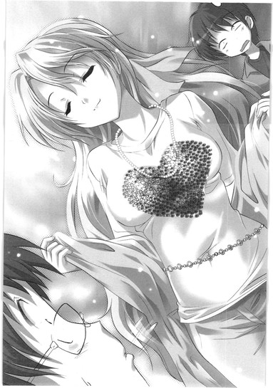
「アーイ、ラーヴ、」
たっぷりと下唇を噛んで両手の指先、下からハートをゆっくりなぞる。万里の視線は吸い付けられて、二つの丸みをじっくりたどる。香子の指はハートの頂点で重なって、くるりと裏返って中心を射抜き、
「ユー......」
熱烈な眼差しとともにまっすぐ万里に向けられた。微笑を含んで尖った唇は、キスの形で。そして、
「好きなの、多田くんのこと。多田くんも私のことが好きなの。だから私たち、付き合うことになったの」
両手でバキューン！ の形、万里のド真ん中を撃ち抜いたポーズのまま、香子は堂々とにこやかに、二次元くんに語る。撃たれた万里は心臓を押さえ、かくっと身体を傾けてみせる。はいはい死んだ、また死んだ、香子の愛でラブ殺された。何度でも死にたい。全力の本気でそう思う。
二次元くんは、
「......」
おもむろに自分のバッグを掴み、バズーカみたいに肩に担いで、垂れ下がったもち手のループから香子を覗いて、
「その綺麗な顔を吹っ飛ばしてやる！」
意味不明気味に喚いただけでは飽き足らず、
「ああっ、ていうか......っ！ ばっかやろー！やってられっかよコンニャロー！ちっきしょ～～～～～～！か～～～～～っ！てめえ、がっこーたのしいだろ!?」
なぜかいきなり満面の笑み。立ち上がるなり万里の首に腕をかけ、
「ぐるぢぃ......ですっ......！」
ぎりぎりぎりっと締め上げ始める。典型的草食おしゃれオタと見せかけて、この二次元、下町育ち。意外と荒っぽい男でもあった。苦しむ万里をさらにゆさゆさ揺すぶりつつ、
「え？ つまり？ もしかして？ 昨日は仲良くお泊りで？そしてこの朝そのまま二人で？そうなの？ん？そうなのか？答えによってはいっそこのまま......」
ち、ち、ち、ちがいます......とタップしながら瀕死の息で万里が答えるより早く、
「昨日は警察に逮捕されてたんだよ」
ノーブルな微笑みを湛えて香子が二次元くんのゲスな勘繰りを打ち砕く。それが二次元くんのツボに入ったのか、「ぶ！」と吹き出すなり万里の首を締めていた腕からへなっと力が抜けて、彼はそのままゲラゲラ笑い出した。
「た、逮捕って......！ うけるわ！ なに言ってんのもー加賀さんは！まじめな顔しておもしれーなほんとに！」
「おもしろい？ 私が？ なぜ？」
「普通に事実だよね......」
首を押さえて呟く万里に、だよね、と香子は頷いてみせる。
二次元くんはまだ腰をがくがくさせながらバカ笑いを続けていて、そのままイスにどさっと身を投げるように座り直し、
「なんかもう、ほんっとどーしようもねえわこの人たち！なあやなっさん、今の聞いた!?付き合ってんだって！万里と加賀さん！笑うしかねえよなあ!?」
「えええ!?」
叫んで、万里は振り向いた。悩みも考えもぶち壊しのスピード感、二次元くんが「よー！」と手を振るその先に、柳澤光央ことやなっさんが立っていた。
立っていて、
「は......？」
目を見開いてこちらを見ていた。その髪が、
「うわっ!? やなっさんかっけえ！」
あまりにステキでさらに万里は叫び返した。うわほんとだやなっさんが超かっけえ！と二次元くんも改めて声を上げる。んまあ！と香子も叫んでいる。
「......え？ そ、そう？」
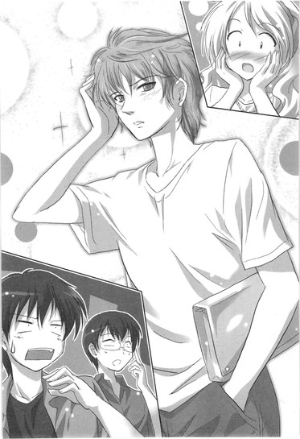
突然の大絶賛に気恥ずかしげに手をやった柳澤の髪は、外人風の、一見くせ毛っぽく見えるさりげないパーマでふわふわになっているのだ。整った顔立ちと適度に筋肉のついた長身もあいまって、本当にハーフかなにかのモデルみたいに見える。デニムにＴシャツだけの簡素ななりが、雑誌に載っていてもおかしくないほどにきまっている。わざとなのか偶然なのか、くるっとわずかにデニムの裾が折れているあたりなど、真似しようもないほどかっこいい。
当人はしかし物慣れない若者そのもので、照れたように己の頬を撫で回し、言い訳みたいに口を尖らせる。
「や、なんか実は昨日、頭もういいや、坊主にしちゃえ、と思って床屋いったら、どうせ刈るなら新人の練習台やってくれって言われてこんなパーマを......うまくできたって喜んでたから速攻刈っちゃうのもなんか悪いかな、と......いや、ていうか、え？なに？万里と香子が......？なんなの？」
「付き合ってるんだってよ！ すげえ驚かない？俺、やや動揺しちゃった」
さらりと二次元くんが解説してくれる。万里はちょっと口ごもって、香子の方にそっと視線をやった。ど、どうするやなっさんに俺たちのこと、なんて説明すればいいと思う？そういう意味の視線だったのだが、香子は万里の視線にうんうんうんうん！と小刻みに頷いてみせ、
「ほーんと同感！ 似合ってるよね、あの髪！」
なぜか声をひそめるのだ。綺麗に描かれた眉を跳ね上げ、柳澤をチラチラ見ながら親指で思いっきり彼を指しつつ。そうじゃなくて......と脱力しかける万里に、しかし、
「......いや。一瞬『えっ！』と思ったけど、驚かないや別に。知ってた。と言っても過言ではない。かもしれない」
柳澤は拍子抜けするほどあっさりとそう言う。
「っつーか、近々こいつら、そうなるんだろうなーとうすうす思ってたし」
どさっとバッグをテーブルに置き、まだ慣れていないらしいふわふわ髪をちょっと手で押さえて爽やかに万里に笑いかける。
「だからそんなツラすんなよ万里。気まずく思ってんの、ダダ漏れだし」
その端整な、水も滴る綺麗なかんばせ。あらら、と思わず指一本。万里は己の凡ヅラの頬を掻く。
「......知ってた、って、......いつから？」
「うーん、具体的には、万里が『俺は加賀さんに話しかけて友達になるって決めてる！だって美人だから！』って半ギレで宣言したときかな。今思えば、の後出しだけどな」
「そ、そんなことあったっけ？」
万里つええな、と二次元くんは笑う。そして香子は万里の腕にぴたーっとくっついてきて、
「美人？」
甘えて顔を上げ、自分を指して見せる。
「美人って、私のこと？」
右手、左手と人差し指をびし！ びし！ と出しながら「美人！超美人！」と言ってやると、香子はさらに嬉しげに密着してくる。
そして万里に寄り添ったまま、ふと甘い笑みを消して柳澤の方をちらりと見て、
「ていうか......なんだか光央、機嫌いいんだ？いつもなら私と会うなり、絶対イヤな顔するくせに」
片眉だけを上げて氷点下の微笑。肩を傾けて顎を突き上げ、対幼馴染戦専用香子の意地悪顔になる。この顔も、実は万里は嫌いではないけれど。
「それに想定と違う。光央は私が多田くんと付き合ってるって言ったら、絶対反対してくるって思ってた。うちの親と同じ理由......私みたいなのに狙われたら、多田くんの人生が狂う、って。だからそう言われたときのためになんて言うかまで考えてあったんだよ？聞きたい？」
対する柳澤はといえば、鬼みたいな満面の笑み。
「ううん！ 聞きたくない！」
ちぎれそうな勢いで首を横に振る。
「一応聞いておいたら？ あのね、私と多田くんの運命はね、そもそも」
「ううん！ 聞きたくない！ つーか、万里のことなら心配してないし。万里は俺が見た限り、おまえと付き合ったりとかできそうな稀有なビッグ器の持ち主だと思うし」
あ、今のほめ言葉だから、一応、とちょっと照れくさそうに万里を振り返って言い置いてから、
「しかも俺にしてみりゃ気分さっぱり。これで今までねっちょり俺にへばりついて熟成しきってた悪霊がやっととれた！みたいな感じ」
人の彼女を悪霊呼ばわりしてくれる。しかし当の香子は「あーら」と鼻で笑っていて、さして気を悪くはしなかったらしい。
「意外だね。それだけ言えるなら、どうやら本当にへこんでないんだ？私が思ってたよりも光央ってずーっとタフなのかも。これでも私、ちょっとは気にしてたんだよ？光央、大丈夫かな、って。だってあの日！光央ったら、超音波にあ～～～～んなみじめな振られ方しちゃって！あれってもう忘れられないよね、惨い振り方の殿堂入りって感じ！あのかわいこぶったきょとーん顔と超音波声で、『え？ばかじゃん？』って！インパクトありすぎだよ！私だったらもう──」
Ｏ！ Ｍ！ Ｇ！ 天を仰いで目を閉じつつ、香子は両手で「お手上げ」のポーズ。さすがに万里はちょっとびびってその肘を引くが、
「か、加賀さん、それはさすがにあまりにも......」
「だーいじょうぶ。光央は強い子だよ。ね、それよりも......もっとずっと大事なこと、あるでしょ？今日は二限も別々だよ？私たちのランチはどうするつもりなの？」
「ラ、ランチはねえ......」
「私たちが付き合い始めて、最初のランチ」
そう言われてみれば、今日は確かにちょっと特別かもしれない。しかし二次元くんが親指でクイッと自分を指している。そう、お昼は二次元くんとやなっさんと、デフレ弁当を買って公園のベンチで食う約束だった。万里が「安くてうまい弁当あるよ」と、教えてあげる約束をしたのだ。できたばかりの彼女にかまけて男の友情を軽んじるような奴とも思われたくないし、香子をこのメンツに含めるのも微妙な気がして、
「今日は男の子チームで食べます......すいません」
「束縛されるのは好き？ それともいや？聞いてあげるのは一度だけだよ本気で答えて」
「いやあ......あんまり......」
「じゃ、許してあげることにする。今日は何限まで？」
「三限です......」
「三限の後ロビーで待ってる」
にっこり笑顔で予定を組んで、香子はひらりとバッグを持って立ち上がった。「またあとでね！」と、女王陛下ばりの優雅なお手振りで、ハイヒールを鳴らして巻髪を揺らし、よく転ばないものだと感嘆するほどの早足で先に出ていく。
気がつけば、すでに一隅の開始時刻だ。
「おお、ていうか俺らも遅れそうじゃん！行こ！あれ？」
やなっさんと二次元くんを振り返って促そうとし、しかし異変に気づく。
「待ってくれ万里！ やなっさんしっかりしろぉ！」
いまさら柳澤は香子の言葉に打ちのめされ、片膝ついてくず折れているのだった。恐ろしきボディーブロー、気づいたときには毒が全身に回っている。光央はそれに耐えられるほど強い子ではなかった。
くっ、とうめき声を上げ、立ち上がることもできない。慌てて万里と二次元くんとでその肩を両側から支えてやるが、
「お......おー、えむ、じー、って......なんなんだよ......!?」
死にかけボイスの疑問に、二人そろって答えを持ってはいなかった。まずは万里が首を捻りつつ、
「......『俺は』......『もう』......『がんばれない』......かな？」
続いて二次元くんが、
「『おしゃ』......『まんべ』......『government』？」
はっはっはっは、くだらねー、おもしろくねー、と三人揃ってとりあえずは笑ってみるが、
「......はあ。ていうかマジで、俺、あのとき痛すぎたよな......」
教室に向かって一応歩き出しつつ、柳澤は憂鬱そうにため息をつく。
あのとき、とはもちろん、先日の一年生飲み会でのこと。酔っ払って香子とケンカした挙句、売り言葉に買い言葉の勢いで、千波に告白をかまし、「え？ばかじゃん？」と香子も驚く切れ味でばっさり斬って捨てられた、あの夜のことに決まっている。
万里と二次元くんは柳澤のイケてる頭越し、ちょっと目を見交わしあう。あれは確かに、本当に、端から見ていても激痛の場面だった。万里は思う。ほんとにあれってＯ、Ｍ、Ｇ──俺ならもうがんばれない。
「確かに、今後微妙に気まずいよな。あのとき以来、やなっさんは岡ちゃんとしゃべったりしてないんだろ？メールとかは？」
二次元くんが言うのに首を振り、
「全然。なんにも。......ていうか、向こうからもなんもねーし。でも、ここは香子の言うとおりでもないけど、本当に『光央は強い子』になって、クールに......ていうか普通に接するしかない......とは思ってるんだよ。だって俺たち、サークルも一緒だしさ。講義も同じのいっぱいあるし。今後一切会わないですむってことはないもの......」
だよなあ、と万里も友人のピンチを乗り越えるために頭をひねる。
「次に会ったら、さら～っと挨拶してみたら？俺、こないだは酔ってただけだし～、って顔で。なんか迷惑かけてわっり～、流して流して～、って」
「......そうだよな。そういうノリで行くべきだよな。......頭も、こんなふざけた感じにちょうどなってるしな」
すこし遅刻したかもしれない教室のドアは、しかし開いたままになっていた。入っていった学生がすぐにそのまま廊下にまた出てくるのが見えた。
不思議に思って万里も中に入っていくと、黒板に大きな文字で「休講！」と書いてあった。
「あれ!? なんで!?」
その下には小さな文字で、講師急病のため、と。二次元くんと柳澤もそれを見て、
「うおお、なんだよ！ せっかくさっきあせって訳したのに！」
「うわ、起き損じゃん......寝てりゃよかった」
他の学生たちと同様、揃って即座に回れ右。一限の突然の休講はさほど嬉しくも感じない。予定されていた休講ならば寝ていられたのに、学校まで来てしまってからいきなりコマがあいてもやることといえば、
「学食戻る？ 万里と加賀さんの件を問い詰めておきたいし」
「やなっさんの今後についても要相談だし」
「相談したところで状況かわんないけどね......」
野郎同士気持ち悪く顔つき合わせて、グダグダだべるぐらいしかない。それもコイバナを。
同じ講義を取っている顔見知りのヤツに「ヒマ？どう？」と牌を打つ手つきで誘われるが、マージャンを知らないこの三人組はそれもパス。廊下を歩き出しつつ、万里はなんとなく今のヤツを振り返り、
「ていうかマージャン、俺らも覚えるべきなの？おまけんの先輩とか、学校来ても講義受けないでほぼ雀荘にひきこもってるとか言ってたけど。打てないとハブられるってほんと？」
えー、と口を尖らせて柳澤が言う。
「それって実際金のやりとりありなんだろ？ なんかダチ同士で金って微妙じゃない？」
「そうなの？ 実は知らないっていうか、そこのあたりははっきり訊けない雰囲気で」
「いやーありだよ絶対。なあ２Ｄ？」
いきなりの呼び名変更にやや受けて、万里は軽く吹いた。二次元くんもゲラゲラ笑いつつ、
「まあ、ありの場合もあり、なんだろーね。でなきゃおもしろくねえだろ多分。つかミツオマングローブはさ、」
くっだらねー！ と万里はさらに腹を抱えて大笑い。きゃーっきゃっきゃっ！とサルの兄弟みたいに騒ぎながら自分も気の利いたことを言い足そうとして、
「......お......」
動きを止めた。うわ、と息を飲む。いや、万里が飲む必要はなかったのだが、
「......岡ちゃんが、いるよ......」
廊下の向こうから小柄な人影が、こちらを見ているのに真っ先に気づいてしまったのだ。さりげなく振り返りながら後ろにいた柳澤に教えてやったつもりだった。さっき話したとおり、普通にスルーっと挨拶する心の準備はいいか、と。
しかし、
「──やっぱ無理！」
言うが早いが、マッハであった。
ソニックブームさえ出せそうな勢いで、柳澤はこの場から逃げ出していた。えっ、と万里も二次元くんもフォロー不可能なその丸出しの逃げっぷり、いっそ同じ勢いでこっちも逃げていてくれれば、と振り返ったその先では、
「......おはよ」
岡千波が、一人で立ち尽くしてこちらに手を振ってみせていた。
可憐な姿に、甘ったるいアニメ声。
「休講だったね、あたしも同じのとってたしヒマになっちゃった──って、言おうとしただけなんだけど。な」
にこ。と、彼女と知り合ってから見たこともないほどに寂しそうな、かすかな笑みが、その口元に浮かぶのを万里は見た。
＊＊＊
急遽、ツアーメンバーの変更が行われた。
柳澤光央ＯＵＴ、岡千波ＩＮで、珍しい三人組が結成。学食に戻って、暇つぶしのテーブルを囲む。無料飲み放題のお茶をそれぞれ注いで手元に置いて、
「参った参った......参ったかもしんなーい」
頬杖の千波がため息をつく。むにっと両手で真っ白な頬を押さえて、尖った唇をぴよぴよさせる。憂いを帯びた瞳は宇宙の深みで、瞬く星は幾千の輝き。ぴよぴよの唇は最強にプリティ。
そんな千波を向かい側から並んで眺め、うっとり......万里と二次元くんは顔面崩壊寸前のにやけ顔、とろけそうな目をして、彼女のとは意味合いの全然違うため息をつく。
万里がこんなツラを千波の前にぶら下げているのを香子に見られたら、恐らくは一巻の終わりだろう。ロミオ、毒殺。なにしろ香子はただでさえ千波を蛇蝎のごとく嫌い、万里が千波をある意味で愛でているのも心底嫌がっているのだ。彼女の存在を恐れているといっても過言ではない。
それはわかっているのだが、でも、
「参っちゃったかぁ～」
ブッヒィ......と爛れた笑みを浮かべ、万里は鼻声で鳴いた。二次元くんもほぼ同じ状態で、
「うんうん、参るよねぇ～......わかるわぁ～」
こっくんこっくん頷いてみせている。
「笑い事じゃないよう」
千波はそんな二人のふざけたザマに唇をさらにぴよっ！と尖らせる。
学食のイスとテーブルにぴちっと収まった、この千波の、コンパクトなかわいさ。空恐ろしいほどの無垢さ。それらったら、ないのだ。
小柄な身体に華奢な手足。薄い肩、細い首、まっすぐな背中。真っ白な肌に、驚くほど長い、扇形に影を落とす睫毛。淡い血色に透ける無垢な唇。細い鼻梁と深い眼窩。
ちょこん、としか形容のしようがない様子で腰掛けて、千波はまるで神秘の妖精だった。学食は深い森。座っているのは切り株。蛍光灯は大樹の木漏れ日で、万里と二次元は彼女を慕う動物たち。前歯で剥いた胡桃やら枯葉の下で熟成させておいたキノコやら、本能的に差し出したいとか思ってしまうのだ。そして喜ぶ顔が見たい、とか。炎の中に身を投じても、彼女のおなかに収まるのなら幸せかもしれない。
とはいえ、少なくとも万里にとって、そんな気持ちは「恋」やら「愛」とはまったく別次元のものなのだが、香子には理解しがたいのだろう。
かわいい千波はかわいく目を伏せ、
「ヤナってば、あんなパーマあてちゃってさ......」
かわいい声でかわいく呟く。似合ってたけどさ、ぴよぴよ、とかわいく言い足す。
たっぷりと豊かな黒髪を今日はそのまま長く垂らして、サイドで分けた前髪を耳にかけ、丸い額は全開。
サイババみたいに見えなくもない薄いコットンのずるずるブラウスにアリババみたいな股上探すぎのパンツ、ビルケンのサンダル、いつもの無骨な黒デイパック、という、もはやお馴染みの意味不明ファッションながら、細い手首と足首の華奢さが余計に強調されて、千波は妙に女っぽくもある。長い髪をすき下ろして左肩にまとめる指も、力を入れて握ったらすぐにパキン、と折れてしまいそうだ。
「......あんなふうにさ、逃げなくたっていいじゃんか。そう思わない？万里も、二次元くんも」
男友達二人の顔を見上げて、千波は小首を傾げてみせる。それはとっても、本当にしつこいほどにかわいらしいが。
万里としては、ここで柳澤の肩を持ってあげたくなる。二次元くんも恐らくは同じ気持ちで、ちょっと困ったように万里に視線を送ってくる。
柳澤だって、あれで十分にかわいい生き物なのだ。不器用で、ピュアで、猫っ毛で。パーマが頭皮に与えたダメージもやや心配な、一八〇センチの愛玩動物。
えーと、と言葉を選んで、万里は言った。
「ねえ岡ちゃん。あなたはさ、まあ、びらっびらのドス黒なわけじゃん......」
二次元くんが鼻からお茶を噴く。千波の前髪が、ぱさっ、と鼻先に落ちる。
「一方やなっさんはさ、ああ見えて、キノコの差し出し方もわからないピュアな男なわけじゃん......上半身ではあんなもじゃ毛をふさふささせてるけどさ」
「な、なんの話なの......？ どういう意味なの......？」
「もちろん下の花的な意味だよ？」
んにゃーっ！ と千波は踊り上がった。テーブルに身を乗り出して万里の手元をバンバン叩く。
「だっ、だからっ！ 前から万里には言ってるけどっ！下の花なんて、あたし、咲いてないんだってば！ほんとなんだよ！信じてよそろそろ！」
「冗談冗談、ほんとは精神論的な意味。マジで。リアルに。......やなっさんもすごく気にしてて、かわいそうな状況なんだよな。酔った勢いで告白なんかしちゃって、まあ、ああいったことになっちゃったじゃん。もちろん岡ちゃんはなにも悪くないって俺らはわかってるよ？でも、できたらその件まるごと、軽くスルーしてあげてくれないかな？何事もなかったかのように、前と同じに親しくやってあげてほしい、っつうか」
「......ていうかね」
すとっと上げた腰をイスに戻し、千波は背もたれに小柄な身を預ける。
「そんなの、そうするつもりだったよもちろん。でもあんなふうに逃げられちゃったら、スルーもなにもできないでしょー」
まだ咳き込んでものも言えない二次元くんにティッシュを渡してやって、千波の黒く澄んだ瞳が万里を見る。
う。と、一瞬言葉を忘れる、その瞳の色の不思議な深さ。底の知れない、意外なクールさ。
「それに、あたし、あれを『告白された』とはカウントしてないよ。飲みの席でのことなんて、普通にもう忘れてる。なのにあんな風に逃げていくのはさ、あれはもう『飲みの席』でのことじゃすまないじゃん。あたしにとっては、全然なうの出来事じゃん。普通に傷つくし」
「......まあね。そうだよな。あの逃げっぷりは、確かにちょっと......」
あの髪型でフワッ......と現れたときはかっこよかったのに。自分と香子のことをさらりと受け入れたのもかっこよかったのに。その後の香子の攻撃に、一応は耐え切ったところもかっこよかったのに。ダッシュで逃げていった友達の後ろ姿を、万里は同情をもって思い出す。
奴の気持ちはわかるのだ。
耐え切れない、つらい状況だと思う。でももうちょっと頑張ってこの場に踏み止まっていれば、かっこいい姿を保っていられれば、そうすれば千波も一緒にこうしていつもどおりにだべって、日常を取り戻せていたのに。
「......光央は強い子じゃなかった......のさ」
口元を拭いてようやく会話に復帰した二次元くんがフォローに入る。
「でも、それもやなっさんのいいところなんだけどね。そう思わない？あんな男前なのに中身は人間くさくて、普通にビビりで、結局やってることは俺とかとおんなじ、凡人っぽさがたまんねー、みたいな。あれで実際も見た目のまんま、全部ばっちり出来上がりきったヤツだったら、かなり嫌味だと思うよ俺。世界違いすぎるっていうか」
その発言はかなりナイスな感触で、千波はちょっと納得したみたいに二次元くんに頷いてみせた。万里も同意で、
「確かに。それはあるな。それにやなっさんてさ、」
イスに体重をかけて背をもたせ、さらに知ったか顔で言い継ごうとして、
「......っ！」
その人を、見た。
驚愕のあまりいきなりバランスを崩し、イスごと真後ろにスッ転がる。ガターン！とすごい音が響き渡り、まばらな人影がいっせいにこちらを見る。
万里！ ──と、叫んだ声は三人分あった。
立ち上がった二次元くんと、千波と、そしてもう一人。リンダ。
リンダの姿が、そこにあった。食堂の入り口に立っていた。長さが足りないのに無理やり一つ結びにした髪。片方の肩にかけたデイパック。紺色のカットソーに水色のカーディガン、細身のデニム、いつものナイキ。見開かれた目。赤い、唇──。
ものも言わずに万里は起き上がり、散らばった荷物をバッグに放り込み、そしてそのまま走って逃げた。二次元くんも千波も、リンダもなにもかもをそこに置き去りにして、振り返りもせず、駆け抜けた。
走って走って、走って、目の前にちょうど来ていたエレベーターに飛び乗る。最上階の９階をとりあえず叩くように押して、ドアが閉じる。ぐんぐん上昇していく箱の中で、そのまま棒みたいに立ちすくむ。
うわ......と目を閉じる。目蓋が熱くて手で押さえる。なんてことだ。柳澤のマッハな遁走劇を見たせいなのか、つい同じことをしてしまった。......いや、つい、なんて言葉では誤魔化せない。友達のせいにもできない。
逃げてしまった。それはすべて、自分の弱さのせいだ。あんな自分を見て、あの人は──リンダは、どう思っただろうか。怒っただろうか。傷ついただろうか。自分を嫌っただろうか。やっぱこいつはだめだ、変わっちゃったんだ、と多田万里を見限っただろうか。
メールもずっと無視している。
大丈夫？ 連絡下さい。心配してるよ。どうしてる？色々ごめんね。送られてきたそれらの言葉に、どうしても、返事ができずにいた。
教授や院生の研究室が並ぶ９階についた。各個室の窓から明かりがついているのは見えるが、人の姿はない。静まり返った空間に、万里はふらふらと踏み出していく。
だってどう返事すればいい？ どんな顔をして、なにを話せばいい？あんなことを言い合って、いまや忘れてしまったリンダに、どういう自分で相対すればいいのだ？
リンダは自分をどう思っている？
怖いのだ。
過去の自分を知っていて、今の自分の前にいるリンダが、心の中では、本当の本当には、なにを思っているのかわからない。......わからないけれど、想像がつくから怖いのだ。
万里にまた会えて嬉しい！ と無邪気に再会を喜んでくれている、わけが、ない。それぐらいは万里にもわかる。それなら最初から、リンダは自分のことを話してくれていただろう。
あの夜、万里、とリンダは自分を呼んだ。
許して、怖かったの、そう叫んで泣いていた。
その声が忘れられないのだ。「優しくて頼れるリンダ先輩」だとはもう思えない。
あのときリンダが呼んだのは過去の多田万里だ。今生きている、この自分のことではない。あいつを呼んで、そしてなにを願うのか。自分ではなく、あいつが目覚めて返事をすることを、彼女の目の前にあいつが帰ってくることを、それをこそ、リンダは望んでいるのではないだろうか。
──そう思えてしまうのが恐ろしくて、万里はあの場から逃げたままでいる。おまえじゃない。去れ。消えろ。そう拒絶されるのがなにより怖かった。
そして、そんなことを恐れている自分を認めるのも怖い。なにもかも忘れたように楽しく振る舞って、自分を好きでいてくれる香子とデートの約束をしたり、友達と笑ってじゃれあったり、そうしなければ生きてなどいけないのだ。
本当に、その恐怖を忘れているわけなんかない。
ただ、気づかぬふりでいるだけ。そこにあるものを、直視せずに自分をごまかし続けているだけ。そうしてどこへたどりつくのかもわからない。いつ終わるのかもしれない。半端な振る舞いを、続けるだけ。
だから不意に目の前に恐怖の大元が現れてしまったら、こうして遠ざかる以外の方法がわからないのだ。
うわあ、と頭をかいて、その場にしゃがみこみたくなる。このまま二度と会わない、なんてできるわけもないのに。本当に忘れ去る、そしてなかったことになる、そんなわけもない。もう一度あの高さの橋から落下すれば話は別かもしれないが、それに賭けられるほど奇跡を信じてはいないし、なにより香子が許さないだろう。自転車で何度でもどこまでも後を追ってきて、彼女は橋を乗り越えようとする自分を前輪で撥ねるだろう。そんなの許さない、とこの身を抱き締め、引き戻すだろう。
踊り場の片隅。壁に背をつけて、万里はへなへなと崩れ落ちた。デニムの膝に顔を埋める。香子に会いたかった。最強の彼女に、会いたくてたまらない。
「......加賀さん......」
今すぐに会いたい。
恐怖の世界から引き戻してほしい。
助けてほしい。
ここにいてもいいのだと、あの声で優しく告げてほしい。あなたが好きだと言う声が聞きたい。
彼女に会いたい。
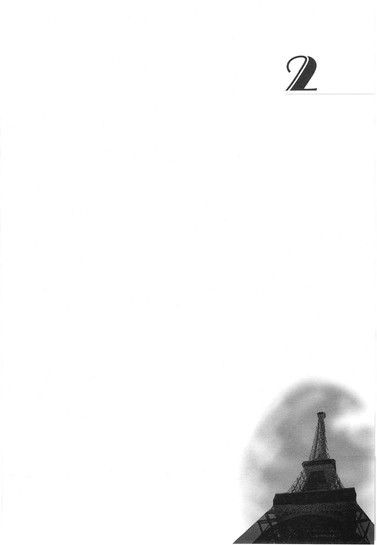
２
多田万里がタイミングを計っている。
大学一階、ロビーの隅。
行きかう学生たちに入り混じり、柱の陰に身を潜め、こっそりと様子を窺いつつ、飛び出す機会を狙っているのだ。
端から見れば普通に変な奴に他ならず、しかも真横にはびったりと霊（の俺！）まで同じポースでくっついていて、もしも霊感なんてものがある奴が見たなら、こんな場面はほとんどコントにしか思えないだろう。
万里は柱に背中をくっつけたままでそろそろと顔だけを出し、即座に引っ込める。高鳴る胸を押さえ、気分はきっとミッションインポッシブル──顔がトムならもっと絵になるだろうが、残念。日本人。
数メートル先のテーブルには、おまけんの先輩たちが数人座っていた。リンダもいる。そこはサークルの縄張りで、彼らはいつものようにグダグダとだべっている。
最初は、リンダはいなかったのだ。だから万里はテーブルに近づいていこうとして、しかしリンダが別方向から「おはよー！」などと言いつつやってきたのに気づき、慌ててここに隠れた。そしてこうなった。
もはや接近することなどできず、さりとてここから離脱するにはあのテーブルの近くを通らねばならず、万里は動けなくなっている。
そんな万里の存在には気づかぬまま、リンダはベンチの端に浅く座って、他の連中とああだのこうだの雑談の花を咲かせている。
リンダの顔を見るなり逃げ出してしまったあの朝以来、万里はずっとこの調子だった。二年生のいそうな場所には近づかない。リンダらしき人物の姿をみかけたら即逃亡。リンダはそれでも、一日に一度はメールをくれていた。今日は学校来てた？だとか。しかし返信はせず、万里はこそこそと逃げ隠れし続けている。
おまけんの先輩たちにも、飲み会以降、顔を見せてはいなかった。練習の予定が入っていないこともあり、今のところはそれでなんとかなってはいるが、ずっとこのままではもちろんいられない。
「......ああ......どーしよ......」
本当だよ。一人ごちる万里の顔を見上げ、言ってやる。どうするんだよ、多田万里。
そんなツラをして、こんなに情けなく逃げ回って。いつまでこうしているつもりなんだよ。しっかりしろよ。ちゃんとしろよ。
堂々と生きてくれよ。
──もちろん、この声が届くわけもないのだが。
「......」
万里は長く息をつき、柱の裏で項垂れた。敵地に一人迷い込んだ少年兵みたいな目をして、昼下がりのロビーを行きかう学生たちをぼんやりと眺めている。
俺も同じように息をつく。もはや万里のかくれんぼにも付き合い飽きて、首を伸ばしてテーブルの方を見た。テーブルというか、リンダを。
パンツのポケットに手をつっこんだままで浅く腰をかけ、知らない奴の冗談に声を上げてリンダは笑っている。手をつっこんだままのポケットからは、携帯のストラップがはみ出している。ポケットの中で携帯を握り締めて、万里からの返信を待ち続けているのだろう。リンダはそういう奴だから。
それを、万里は知らない。
リンダの長い髪がどれだけ綺麗だったかも知らないし、リンダがどれほど速く走れるのかも知らないし、歌が上手いのも知らないし、ピアスを開けようかずーっと迷っているのも知らないし、シックスパックにもうすぐ割れそうな腹筋が自慢だったのも知らない。優しいのも、かわいいのも、本当は結構わがままな奴なのも──万里はリンダのことをまったく知らない。
だから、リンダが万里のことをどれだけ心配しているか、どれだけ感情を抑制して負担の少ないメールの文面を考えているか、そんなことも知らないでいられるのだろう。
たまらない。
リンダを知っているこの身には、万里の態度は、あまりにも耐え難かった。
ここから踏み出し、万里から離れ、リンダの傍らに寄り添ってやれたら。幾度となく、そんな思いに俺は突き動かされそうになった。この手でリンダの肩を抱き寄せてやれたら。頭を撫でて「大丈夫！」と動物の兄弟みたいに鼻先を髪の中につっこんでやれたら。......ただ、隣に座っていられるだけでもよかった。あいつの傍にいたいのだ。
万里はいまだに動けずにいる。柱の裏に隠れて項垂れ、泣き出しそうな顔で困っている。そして俺は結局、こんな万里の傍らに在り続けている。
俺がここから──万里のそばから動かないでいるのは、単純に「怖い」からだ。万里から離れてしまったら、それが本当に「終わり。」なのではないかという気がするから。多田万里だったことを忘れてしまうのが怖い。自分が誰なのか、誰として生きてきたのか、それら自我のすべてを見失ってしまうのが怖い。そして消えてしまうのが怖い。
こうして今生きている多田万里を見つめている視点こそが、俺の実体だと思うのだ。だから万里を見守るのをやめたら、視点の主観はこの世から消える。イコール、俺が消える。......の、かもしれない。
もちろん、俺は死んでいる。それはわかっている。とっくに終わっている。わかっているのだ。そう理解しているのに、もう諦めているのに、それでも、自ら肉体と別の方向を選んで歩き出すのは恐ろしかった。自分でも理解できない、本能的な、根源的な恐怖がそこにはあった。
その恐怖に打ち勝つことができず、臆病者の死人の俺は、万里と一緒に隠れ続けているしかない。......こんな俺には、もしかして、万里に「しっかりしろ」なんて言う権利はないのかもしれない。
おまけんのテーブルに、そのとき加賀香子が現れた。万里は気づいて、身を硬くする。
こーこちゃん、とリンダが手を振って、自分の隣に彼女を座らせる。
「あれ？ あの、多田くん来てませんか？先輩たちのところに顔出してみるってさっき言ってたんですけど」
「ううん、来てないよ」
「そうですか......おかしいな。ちょっと電話してみますね」
加賀香子は携帯を取り出し、優雅な仕草で髪をかきあげて耳に当てる。
マ・マ・マ・マ──万里の尻ポケットからバイブにし忘れていた着メロが結構な音量で軽快に鳴り出す。
加賀香子は驚いたように顔を上げ、万里と俺が隠れている柱の方を見た。
万里は慌ててメロディーを止めようとして、あせりのあまり携帯を取り落とす。拾いそびれ、流れ続けているのは、ほんの数日前に「ガガがいいの」と香子が自ら万里の携帯に設定した自分専用の着信音。
ポ・ポ・ポ。
親指でボタンを押し、やっとメロディーが止む。
息を詰め、万里は身体を棒のようにして、柱の陰に張り付く。
「......」
加賀香子の、白い顔。大きな瞳。頼りなく宙を見て、彼女はそのまま携帯を閉じ、バッグにしまった。
「出なかった？」
リンダの問いかけに、「ええ」と綺麗な笑顔で答える。
「なんか、留守電になっちゃいました」
俺は見ていた。
みんながみんな、それぞれに──ポーカーフェイス。
＊＊＊
ドアを開く瞬間の、
「あんまり片付いてないんだけど」
ちょっとした緊張を見透かされるまい、と、万里は最大限にさりげなく、普通に、先に部屋の中へ入っていく。その後を香子がついてきて、
「お邪魔します。鍵はかける？」
「あ、そのままで......あ、ごめん、やっぱかけて」
はーい。カチャッ。と、しょぼい鍵がかかる音。いきなり高まる密室感。万里はそれだけでギクシャクと、右手と右足で同時に踏み出してしまうが。
「あの日以来だね。多田くんちに来るの」
香子はにこやかにハイヒールのサンダルを脱ぎかけて、えーと、と狭い玄関をキョロキョロ見回す。
「ど、どうかした......？」
「スリッパとかあるかな？ 私、ほら、サンダルだからストッキングも履いてなくて、裸足なの」
しまった。そうだ。スリッパ。
テーン！ と一つ額を叩き、万里は痛恨の想いを噛み締める。準備は万全のはずだと思っていたが、盲点であった。
こんなことなら、上京直後にしばらく泊まっていってくれた母親のスリッパをもらっておけばよかった。俺は履かないししまうスペースもないから邪魔くさい、と自分が持って帰らせたのだ。「お友達が来たら履くかもよ？」と母・美恵子は言っていたのに。「スリッパ履くような上品な友達は来ない。俺の部屋に上がるような人間は、みんな平気で裸足で油っこくべたくた歩くような奴だろう」と万里はきっぱり言い張ったのだ。後悔先に立たず、そんな境地も高まって、
「すまない......スリッパ的な物質は今この空間にはないのだ......」
心なしかやや文語体にもなってしまう。
「あら。どうしよう、さすがに素面だと裸足でいるのってちょっと恥ずかしいかも」
「お、俺は全然構わないけど......そうだ、かわりに」
万里はダッシュで部屋の中へ駆け込み、無印の半透明ボックスに放り込んであるソックスから新品に近いのを選んで一組つかみ出し、
「よければ、これを......」
捧げもののように香子に手渡す。そんなもんでも嬉しげに香子は受け取り、にこっ、と花のかんばせを綻ばせる。
「ありがとう。多田くんの靴下借りるのって、これで二度目だね」
「そ、そうだっけ？」
「そうだよ！ 忘れたの？」
過去など忘れたというか。今はもう現在のことで手一杯というか。
さあさあ、とりあえずとりあえず、入って入って、万里は香子を中へと招く。頼む、におわないでくれ部屋＆俺の足。起こらないでくれ腹痛。あれこれ必死に天に祈りつつ、顔には笑み。最大限のさりげなさを、今は全力で醸し出したい万里であった。
だって、急に言うのだ。「今日、多田くんの部屋に行ってもいい？」だなんて。「ゆっくり二人で過ごさない？」だとか。
一限の終わりにいきなりそんなことを言われ、万里は実は、そのまま速攻で家に帰った。
誰にも言わず、柳澤にも二次元くんにも告げず、講義もさぼって、ダッシュで一旦帰宅して、もっさり男の臭気がこもって湿ったようになっていたこの部屋を必死に掃除した。
溜めてしまっていたゴミ袋を一階のゴミステーションにすべて出し（この世で最も素晴らしい施設、それが24時間ゴミが出せるゴミステーション！）、洗い物をし、汚れ物はとりあえず洗濯機にすべてぶっこんで封印し、干しっぱなしになっていた服やパンツはクロゼットとベッド下のボックスにすべてしまいこんだ。香子に見られたくない、しかし捨てるには惜しい諸々の宝物は、実家から届いた荷物のダンボールに封印。「ちょっとセクシー」程度の、恐らく見られても引かれる心配のないブツは、あえてわかりやすいところに配備。こうすることで「隠している物はないよ？男ならみんなこんなもんさ。俺はすべてオープンだし」という雰囲気を醸し出すのだ。
で、鬼のぶっかけファブリーズ。狂乱のトイレクイックル。雷鳴のクイックルワイパー。
そして──うん。ベッドを。
別に、そういうつもりではないが、一応ベッドを。
メイクしたりした。
枕に敷いていた臭いタオルは剥がして捨ててやった。シーツは、セーフ。奇跡のセーフ。この部屋に越してきて以来、実は一度も洗っていなかったのだが、たまたまおととい気が向いて洗濯しておいたのだ......いや、うそだ。これあるを期して、洗濯したのだ。タオルケットもこれあるを期して、洗濯した。
香子がいずれ部屋に来るかもしれない、そしてベッドをなにかしらかの理由で使用してもよいかな、という気になるかもしれない、そんなときに「うわ、こいつのベッドきたねえ！やっぱここに寝るとか無理！」なんてことを思われないよう、綺麗にしておいた。
そして枕を隠すようにタオルケットでマットごと包めば、ほらほら、これはベッドじゃないよ？ソファだよ？だから座ろうよ。ここに並んで。ね？ね!?
......という、そういう流れがうまくいくことを期して、しかるべき買い物も、した。
コンビニで、無印良品の。銀色のパッケージのブツを生まれて初めて買った。バカだからどこに置いたらいいのか十五分ぐらい真剣に悩み、バカだからさまざまなところにあしらってみたりした。そしてバカだから結局どうしたらいいのかわからず、四個入っていたうちの三個をクロゼットの下着入れに隠し、一個を財布に無理やり押し込んだ。このさりげない風味がきっといい感じなはずと信じて......え......いや、待てよ......？
変か......？
いざ、というとき、貧相なケツ丸出しでいそいそと歩いていって、クロゼットやら財布やら、そんなところまで間抜けにとりにいくのか？え......？どんなツラをして？ちょっと待ってて～、とか言って？......だめだだめだ！そんなのだめだ！もっとこうなにか......そうだ、財布をもっとベッドの近く、手の届く位置にさりげなく置いておけばあるいは......
「ねえ多田く～ん」
「なんだよッ!?」
我知らずものすごいＤＶな形相で振り返ってしまった。
キッチンにいた香子は驚いたみたいに動きを止める。その立ち姿がどことなくミッキーマウス風味なのは、足に穿いた白いソックスのせい。
「うわごめん......な、なになに？ なに、どした？」
「こ、コーヒー淹れてもいい？ って、訊こうと思ったんだけど......」
「あっ、うんうん！ ていうかそんなの俺やるから、加賀さんは適当に座ってて！ゆっくりしてて、ね！」
シンクの脇に、実家から送られてきていたインスタントコーヒーと洗ったカップを二つ、すでにきちんと用意しておいたのだ。さっき帰宅したときに、このような瑣末な手はずは整えておいた。
それらを嵐のように済ませてから、万里は何食わぬ顔で三限の途中から再び大学へ戻った。え？俺？ずっといたよ？講義出てたし。いなかった？便所かな！というツラで。
そんなやや意味不明な隠密行動に出た理由は、微妙な男心のせいであった。
とにかく、「必死に部屋を掃除してきた俺」という事実を知られたくなかったのだ。香子にも、誰にも。誤解されたくなかった。なにかエロい期待で胸一杯だとか、必死だなとか、そんなふうに思われるのは勘弁、と。......皆無だとはもちろん言わない。皆無ではもちろんない。そんなことがいつか起きるのを願っている。起きても困らないよう準備はしてる。でも、それ「だけ」だと思われるのは心外だった。
部屋を掃除したのは、第一には、あくまでも、香子に良い印象を持ってもらいたかったから。不潔だと思われたくないから。すこしでも居心地よく、楽しいひと時を過ごしてほしいからだ。
そんなピュアな真心を「やりたい一心で！ 必死の！多田万里！」などととられるのは嫌だった。
......いや、本当に。
そうしてさりげなく四限まで出て、香子と待ち合わせ、一緒に電車に揺られて、この部屋までまた戻ってきた。
北西の二面に採られた窓からは、すでに橙色の西日がフローリングの床に射し込んでいる。ミネラルウォーターをティファールの電気ケトルに注いで、スイッチをいれる。普段はもちろん水道水。
「じゃあ、お言葉に甘えてのんびりしちゃおうかな」
「そうしてよ」
香子はソックスの足でにこにこと、ソファに擬態したベッドの方へ向かう──と思わせて、いきなり方向転換。キッチンの隅へ。
それを見やって、ぎょっと万里は飛び上がる。危ういところで漏れかけた悲鳴を飲み込む。
「......っ......」
落ち着け。落ち着くのだ自分。ぷるぷる震える手をキッチンにつき、身体を支える。
とんでもない失敗を犯していたことに、今、気がついた。
キッチンの隅のスツールの上に、危険物を詰めたダンボールがドーン！と置きっぱなしになっている。
確か食器棚の上部に隠そうとしていたはずで、......そうだ。隠そうとしたときにメールが入って、そっちに気をとられて、それっきり忘れていた。
香子は万里が発する濃厚なオーラにも気づかず、ダンボールを掴み、そのままよいしょ、と足元に置き、スツールにちょこんと座った。......大丈夫だ。何でもないことだ。なにも起きていない。バレていない。
「あ、勝手にごめんなさい。ダンボール、ここに置いてよかった？」
「......う、うん......」
「なにが入ってるのなんだかすっごく重たかったけど」
「......お......おやさい......とか......」
「静岡の？ あ、もしかして、ご実家で作っているの？」
「......んふ、んーふ......」
「え？ なんて？」
やめろ......よせ......触れるな......物理的にも......話題的にも......願う万里の心も知らず、香子はにこやかにご機嫌で笑っている。下手すりゃなんなら「見てもいーい？あらっ！」とか、やらかしかねないこの空気。
とりあえず、この危険物圏から彼女を引き離さないといけない。
とっととコーヒーを淹れて、部屋の中央のローテーブルに置くのだ。そして「こっちに座ろうよ」と、床のクッションをすすめる。......追々、頃合を見て、「足痛くない？『ソファ』に座らない？」と誘う段階も想定してあるのだが、それに関してはまだだ。今あせっても仕方ない。
万里は粛々とカップの底に焦げ茶色の粉を落とし、ポットのお湯が沸騰するのを待つ。
「すごく部屋片付いてるね」
スツールから狭い部屋を見回して、香子は感心したように言う。
「それになんだかいい香り......」
部屋のあちこちにいらんほどあしらった消臭力・ブラックローズもいい仕事をしている。
とりあえず、万里は胸を撫で下ろす。
この狭いワンルームが、完璧な彼女が存在するにふさわしい空間だとは思えないが、不快な思いはさせずにすんでいるようだ。
そう、香子は完璧。今日も完璧。身体の線をぴったりと際立たせる、柔らかな素材のワンピースは赤にピンクの幾何学模様。どういう構造なのか、胸の前で和服のように生地を合わせるようになっていて、胸の谷間もかなりの深さで見えている。朝に顔を合わせたとき、思わず見入ってしまった自分の視線をごまかそうと「すっ......ごくその服似合ってる！」と万里が言うと、香子は「ファステンバーグだよ」と微笑んで、片手を腰に、モデル立ちポーズをとってみせてくれた。意味はわからないが、とにかく、万里はそれが大好きだと思った。大好きだ、ふあすてんばーぐ。とっても良い物だ。
大きく巻いたダークブラウンの髪には白のカチューシャ。手首につけた大振りの腕輪......じゃなくてバングルも、バッグも白。夏の香りを全身にまとって、香子はキラキラと輝いて見えた。
今もだ。美しい彼女は光を放つようで、眩しくて、
「こっ......コーヒー、デキタ！」
思わず声もひっくり返るってものだ。
香子はスツールに座ったままで「わあ、ありがと」と手を伸ばしてくる。いや、そうじゃなくて、と万里はカップを手渡さず、
「あ、あっちに座らない!?」
ローテーブルの方へ顎をしゃくってみせるが、
「私ここでいいよ。なんだかすごく座り心地よくて、気に入っちゃった！このスツール」
「そ、そう......!?」
万里はにこやかにポーカーフェイス。そうまで言われては拒否できず、カップを手渡した。捨てたくなっちゃった！このスツール。ほとんどワナワナ震えつつ、自分はとりあえず予定通りテーブルにつく。なかなかうまく事が運ばない。
吐息の音が妙に響くような気がして、慌ててリモコンでテレビをつける。夕方のニュースがやっていて、香子は足をブラブラさせながら、
「お菓子でも買ってくればよかったかな？」
すっかり落ち着いた様子でそんなことを言っている。
「お......お菓子ィ......!?」
「期間限定のー、ほら、なんていったかな？ あれが出てたんだよ」
「ポテトチップだろ!?」
「そうそう！ その、あの味が......」
「ラー油味だろ!?」
「そうだよ！ やだ、すっごーい！ 多田くんったら、なんで私の考えてることが全部わかるの!?」
それはなあ！ さっき！ とある物を買いにコンビニに行ってきたからだよ！ついでにおやつの新商品が山盛りになっているのをこの目で見てきたからだよ！
「......ははは！ なんでだろーな......好きな子の考えることはやっぱりわかっちゃうのかな......なんてな......」
「やだあもー！ それじゃあそれじゃあ私も多田くんのこと、わからなきゃだよね！うーん、そうだ！ひらめいた！このお野菜、ほうれん草でしょ!?どう、当たった!?」
──クラクラする。
頼む。開けて確かめたりしないでくれ。今、本当にすごいブツが入っているのだ。お願い。神様。加賀香子さま。
ものも言えずに失神しかけながら、万里はとりあえず熱いコーヒーをグイッと飲む。どうすれば香子の謎の好奇心を、あの危険物ダンボールから引き離せるのだろうか。
よくあるパターン、これで「あちっ！」とか言って、コーヒーを零したりして、そうしたら香子が「大丈夫!?」とか言って、駆け寄って布巾で胸元を拭いてくれようとして──とか。どうだろう。そんなふうに、事を運ぶのは。
コーヒーを一口噴いてみるか。火傷したふりで大げさに、ちょっとかすめただけでぶっ飛ぶサッカー選手みたいに、フリーキック狙いのシミュレーションを冒してみようか。
「ねえ、多田くん。ほうれん草はさておき、聞いてくれる？今日はちょっと話したかったことがあるの」
試してみる価値はあるかもしれない。万里は口の中にコーヒーを含む。そして、......せーの、
「リンダ先輩となにがあったの？」
「......ブボァッ！」
思いっきり噴いた。
気管にコーヒーが入って激しく咳き込み、その後は声も出ない。せっかく香子が予定どおりに「大丈夫!?」と布巾片手に駆け寄ってきてくれたのに、
「ゲホゴホゴホッ！ ......おえぇ！」
あろうことか吐きそうになって自ら膝で這いずり、胸の谷間に背を向ける。
「多田くん、背中さすろうか!? お水いる!?」
「......いいっ......いいから......」
咳の拍子にこみ上げかけたゲロの予感を飲み下し、万里はさらにもう一歩分、大きく香子から距離をとった。
こんな冷や水ってあるだろうか。
なぜ今。
どうしてここで、そんな話題を持ち出すのだ。
忘れていたわけではない、もちろん。いつだって、リンダのことはこのままにしてはおけないと思っている。メールを無視して逃げ回って、あの本当に優しい、命の恩人でもある先輩に背を向けていられる自分が好きなわけがない。
ただ、ちょっと──浮かれていたのだ。色々浮かれて我を忘れていた。そうだ。自分だけが彼女とイチャイチャ仲良くじゃれあって、掃除がどうだの、危険物がどうだの、こんなふうに楽しくしていていいわけがない。幸せでいていいわけがない。
「......は、あ......」
ゲホゲホゲホ、とさらに咳き込み、万里は口元を強く押さえる。
はい、終わり。終了。そんなふうにも思う。
都合の悪いことから目を逸らし、気づかぬふりで楽しく生きるタイム、終了。
目の前にポン、と置かれた事実からは逃れようがない。飛び出して、走って逃げても、その場限りの逃避だそんなの。
リンダ先輩となにがあったの？ ──リンダ先輩とは、過去があったの。
事故の前、自分とリンダは、あんなに楽しげに寄り添っていた。そして自分は記憶をなくし、なにもわからないまま再会した。リンダは「なにもなかったふり」で、新しい人間関係を築こうとしてくれていて、そして破綻した。
万里がぶち壊した。過去の俺がかわいそうだろ、だとか、責めもした。
リンダは説明しようとしていたようだが、聞く耳も持たずに逃げ出した。
そしてそのまま今も逃げ回っている。リンダの振る舞いにどんな理由があったとして、それが筋の通るものだったとして、理解できたとして、その後。
その後、どんな顔をしてリンダに会えばいいのかがわからないから。
いなくなってほしい──そう思われていながらリンダの前に立つのは、苦痛だった。
リンダにとっては、この自分がこの世に生きていること、そのものが苦痛なのだろうと思う。耐えなければいけない現実なのだろう、と。本物の万里に帰ってきてほしいだろう。今生きている自分には、消えてほしいだろう。
本当はここにいるべき人間ではなく、いていい人間でもないと、そんなの一番わかっているのは自分自身だ。
でも、実際こうなっちゃって、こうやって生きてる。それを否定されて、じゃあどうすりゃいいのとずっと考えている。手放すことのできない悲しみはずっとそこから流れ、染み出し続けている。
「......多田くん、ねえ、本当に大丈夫なの？なんだか黙っちゃったけど......」
しかし、そっと、この背に触れる指先があった。
優しく、あたたかく、万里を気遣う白い手。
顔を上げると、香子が不安そうに目を瞬かせて万里の傍らに座っている。
彼女が、加賀香子が、こんな自分を好きでいてくれるという奇跡なしにはもう生きられないだろうと思う。
「う、うん。大丈夫。ていうか」
ようやくまともに息をついて、
「なんでいきなりリンダ先輩の話が......？」
「それはね、ええと」
香子の顔をまともに見上げてみた。香子は大きな瞳をぱちくりさせつつなにかを誤魔化すみたいに唇をすぼめ、
「......女の、勘？ かな？」
うふ、と肩を竦めてみせる。
リンダとの過去のこと、そしてリンダとの間に現在今起きていること、すべてを香子に話したらどうなるだろうか。考えかけ、しかし即やめる。
そんな「困難」を、彼女との間に置きたくない。結ばれたばかりの二人の縁に、余計な負荷はかけたくない。カップルにとって少しでもマイナスに働きそうな事柄は、もう一つも残しておきたくない。ただでさえ自分は地雷なのだ。記憶喪失という危うさをもった、頼りきれない男。
完璧な香子には、完璧な幸せがふさわしい。シミ一つない、完璧な愛情で包まれているのが彼女にはふさわしいのだ。
「......そんなことを話したくて、わざわざうちまで来たわけ？」
「んーと、まあ......」
絶対に失えない女に、万里は全力でもって、
「なに言ってんだか。リンダ先輩とはなんもないって。そりゃ好きだよ、当然。あの人のこと、『後輩として』慕ってるよ」
にっこりと笑ってみせた。なにごともない、どんな悪いことも起きてはいない、そんな完璧な能天気ヅラで。
すこし気まずげに正座の姿勢で固まっている香子に、万里は「でもそれは加賀さんも同じだろ」とさらに強く笑いかける。うん、と彼女は素直に頷く。
「じゃあこれで解決だ。なんだっけ？ お菓子？買いに行こうか？俺、なんか腹減っちゃった。とはいえメシには早いし。それともこの辺の店で軽くおやつでも食う？えーと、ケーキ屋もあるし、イートインのパン屋もあるし、フォーとかアジアンっぽい店もあるし、スタバはないけどドトールもあるよ。コーヒーも冷めちゃったし」
自分を鼓舞するように、万里はえいや！と勢いよく立ち上がった。ちょっとこの空気の中から逃れたくて、携帯を素早くポケットに突っ込む。家の鍵も。
「......そうだね。じゃあ、ケーキ屋さんちょっと覗いてみようかな」
香子も立ち上がり、スツールに引っ掛けてあった自分のバッグを手に取る。
銀行にいかなくても、喫茶店に入れるぐらいの金は財布にあるはずだった。確か三千円ぐらいは......買わなければいけないものも今は特にないはずだし......頭の中で中身を思い出しながら、財布をひょい、と手に持った拍子。
なにかがポトリと床に落ちた。
万里が気づいて身をかがめるよりも、香子の方が早かった。
あれ、としゃがんで手を伸ばし、
「今なにか落ちぎゃああ～～～～～！」
すごい声を上げてそれを二・三度お手玉し、取り落とした。
「な、なに!? どした!?」
いったいなにを、とそれを拾ってみる。銀色の、もの言いたげな小さなパッケージ......それは先ほど購入した無印良品のブツであることに気付き、
「いやああああ～～～～～！」
万里も叫んだ。
こんなにもあからさまに下心丸出しなのがモロバレの物体ってあるだろうか。頭真っ白、顔面真っ赤、光速の動きで素早くベッドの下に蹴り込むが、
「......見た!?」
振り返る顔を自ら手で覆う。コクコクと香子は頷く。
「見ちゃった!?」
見た見た見た、見た見た見た見た、と口でも答える。
「......ど......どう思った!?」
なにを訊いているんだと自分で自分にジャンピングツッコミを入れたくなる。どう思ったもクソも、ドン引きに決まっているではないか。
だが香子は、
「うふ......うふふふふふ......！」
ワンピースに包んだ身体を猫のようにくにゃくにゃさせて、唐突に笑い出す。彼女の顔も万里のと同じぐらいに真っ赤だった。やがて顎を高く上げて、片手は腰に。
「ふふふふ！ ふははは！ あーははははは！」
......これではまるで世界を征服した悪の女王だ。
つられたそぶりで「あはははは！ ......はは......」と笑ってごまかそうとする万里の目の前で長い髪をばさりとかきあげて、
「そりゃ！ ね！ ......そうだよ！ だよね！......だよ、ねえ!?」
高笑いのポーズのままちょっとぎくしゃく動きをぎこちなくする。半分、悪の女王。半分、Ｃ‐３ＰＯ。
「付き合ってるんだから、それは......もちろん、そういうことだよ！わかってる！でもね、あのー、ただほら......」
バッグを掴んだままで後ずさりしていくのだ。じりじりと。上半身は動かさずに、足だけの妙な動きで。
「......そういうことはね、自然に、って思うの。自然の流れで、そういうことになったとしたら、それは素敵だなって......私、よくわからないけど、でもそういうことがそうなったとしたら私よくわからないけど！素敵だなって！でも！ただ！とにかく！自然に！」
頭の血管ブチ切れそうな勢いでグルグル語る香子の前で、頷く以外のことができようか。はい、はい、と一言一句に万里は頷き、
「......パリで！」
こけそうになった。
自然の流れでパリにたどりつくカップルがいたら、それは結構すごいと思うのだ。少なくとも、万里は自然にはパリには行けない。まずは自然に都庁にたどりついて、自然にパスポートを取得して、というところから始めなくてはならないし。
と、香子は後ずさりしていたくせに急に眉をハの字に下げ、ススス、と近寄ってきて、
「......夢、見てるの。初めて男の子とそんな事態になるとしたら、それは絶対パリだよね、って。恋人たちの街、パリ。エッフェル塔の見えるプチホテルで......心から愛している人と......。運命の、一夜だよ」
「し、自然の流れで......？」
「自然の流れで」
ねだるみたいに、潤んだ瞳でじっと見つめつつ、急にしがみついてきたりする。首になめらかな腕を絡めてきて、立てた指を自分の唇に押し当てて、
「おお......っ！ ちょっ、と......加賀......っさん！」
しー。とは、どういうことだ。喋るなってか。柔らかに弾む胸のふくらみは、完璧に押し付けられているというのに。
万里の右目と左目を交互に見つめようとして、香子の綺麗な瞳はゆらゆらと揺れる。
「......半端なことをして、多田くんとの運命を汚したくないの。完璧な恋人でいたいの。私にとっては、大事なことなの。......とっても。とってもとっても、とーっても......」
そうして、ちゅーっと、吸いついてくるのだ。唇に、ではない。顎と喉の境目付近を狙って、とろけそうに柔らかい唇の感触が押し当てられる。
「あああ......っ」
ぞく～......っと、鳥肌が立った。首筋から脳みそまで、痺れに近い震えが走る。
ちゅ、とさらに音を立てて、香子の温かな唇が離れていく。
一センチ未満の至近距離から、
「......ケーキ行く？」
香子の唇が語る。その甘ったるい、セクシーなかすれ声に抗うことなどできるわけもなく、
「......はい......」
操り人形みたいに足を動かし、万里は玄関へ向かった。機械的に靴を履く。香子がソックスを脱ぐのを待って、玄関から出て、鍵穴にずぼっと鍵を差し込む。まわす。
「......俺......死ぬかもしんねーよ......？」
まじで、と呟きながら並んで外廊下を歩く。エレベーターのボタンを押して、香子は楽しげに万里を振り返る。
「ならパリで死んで。悩殺するから」
ら、ぺるら......巻き舌で妙にいやらしく囁かれたその言葉がなんなのか万里にはわからなかったが、多分、それは大好きなものだと思えた。きっと大変に良いものだろう。
「どうやったら行けるの、パリ......」
「航空券買ったら行けるよ」
「買いたい、早く買いたい......！」
「エッフェル塔が私たちを待ってる」
「エッフェル～......俺のエッフェル～......！」
やってきたエレベーターに乗り込み、閉ボタンを押したそのとき、
「待って待って！」
同じフロアのどこかの部屋から駆け出してきた小柄な人物が、ドアに挟まりかけながら飛び込んできた。一瞬ぎょっとして見てしまったのは、唇にタバコをくわえていたから。よく見れば火はついていないが、手にはライターを振っていて、苛立っているかのように勢いよく閉ボタンを連打する。
ちょっと黙って、思わず香子と目を見交わしてしまった。
初めて見るご近所さんだったが、結構、危ない感じの人に思える。
見るからにくったくたになったジャージの黒いズボンに、黒の薄いＴシャツ。ビーチサンダルから見える足の爪も黒に塗られている。手の爪もだ。中指には巨大なスカルのリング。白すぎる肌。痩せて小学生男子みたいにも見える身体。女性なんだ、とかろうじてわかるのは、ボサボサに寝乱れた真っ黒髪ショートボブの隙間から見えた顔立ちが意外なほど綺麗に整っていたから。子供みたいなノーメイクは、不健康丸出しの青白さだが。
気まずい三人の密室が、ゆっくりと一階目指して降りていく。
「......なに？ あんたら」
話しかけられ、万里は驚いた。なに見てんだよ、的なことだろうか。
「は。やっぱ付き合ってんじゃん。ふーん」
軽く笑われ、さらに困惑する。どうすればいいのかわからず、俯いてしまう。香子も困ったみたいに万里の肩の陰に隠れて天井の隅などを見上げている。
「シカトかよ」
一階につき、その人は機嫌悪そうに降りていった。エントランスを出るなりタバコに火をつけ、勢いよく煙を吐きながら歩き去っていく。
「......なんだ？ 今の人」
「なんだろう。ちょっと怖い感じだったよね」
万里と香子は怪しいご近所さんとは逆方向に向かって歩き、とりあえず、商店街を目指した。
＊＊＊
そうして、ずるずる、ずるずると。
リンダからも、おまけんのテーブルからも、どうしようもなくコソコソと逃げ回り続けて、結局週をまたいでしまった。
その間、香子とは上野デートもしたし、大学でも毎日会った。いまだクレジットカードを取り上げられたままの香子は中毒だったスタバも断ち、不自由そうにしていたが、学生同士のデートなど手をつないで散歩するだけでも十分に楽しくて、万里にはさして問題とも思えなかった。
香子と二人で過ごす時間が増えるにしたがって、男同士の時間は減って、柳澤や二次元くんにはちょっと不義理もしてしまい、やや顰蹙気味の日々でもあった。
そして、東京は六月。
入梅も間近。
薔薇の季節だよ、と香子が言った通り、万里のアパートがある住宅街のあちこちでも色鮮やかな薔薇の花が甘い香りで咲き乱れた。
気温はいきなり30度を超えたり、次の日には15度近くまで下がったり。都民を灼熱地獄の夏に慣らそうとしているかのような、試練に近い上下動を見せる。次のシーズンへの助走なのだろうかと万里は思う。
晴れたり、降ったり、暑かったり、涼しかったり。着ていく服はどうも決まらず、リンダがくれたニューバランスは履くことができない。
リンダの姿を、万里は数度、こっそりと盗み見た。リンダの様子には変わりなく、大学二年生の普通の日々を送っているように万里には見えた。ただ、メールは来なくなっていた。おまけんの先輩たちにも顔を会わせることができず、しかし以前から決まっていた練習日は迫る。
練習に出るのも気まずい。でもたった二人の一年生の片方が休むのもまずい。万里が休めば香子も疑問を持つだろう。
このままではいけないのだ。リンダにも、あまりにも──あまりの仕打ちを、自分はしていると万里は思う。
しかし、逃げ回り続ける日々の分だけ、その一日、一時間、一分、一秒の分だけ、罪の重さと気まずさは上積みに次々追加されて、万里の足はさらに動かなくなる。
どうしたらいいのだろうか、という疑問は、時が経つとともに、どうすればよかったのだろうかという苦い後悔に変換されていく。
どこかの地点からやり直しができたなら、こんなにも自分のグズをこじらせずにすんだ。しかしそんなことはできないまま、時はさらに進んでいく。
香子と過ごす、楽しく甘い薔薇色の時間はまるで麻薬で、万里は貪欲にそればかりを欲してしまう。痛みも苦味も脇において、もっともっとと時間を食っていくだけの生き物になってしまう。食った時間と引き換えに、背負った重みはさらに増して、きっと近いうちに、取り返しがつかないことになる。万里には背負いきれないほどの荷になる。
そうして一人、立ち竦んだまま、やがて、
「多田くん？」
──時間は止まってしまうだろう。
「携帯鳴ってない？」
「......あれ？ ほんとだ。ていうかこんな番号知らないけど」
二限が終わって、香子と待ち合わせした大講義室の後部ドアの前。
携帯を尻ポケットから取り出して、万里は首を傾げた。着信の相手は、知らない番号の携帯電話だった。
「出ないほうがいいよ。なんか怪しいもの」
橙色の鮮やかなワンピース姿で、香子は綺麗に描いた眉をひそめて首を横に振ってみせる。今日は編みこんだ長い髪を白いおでこも全開で器用に巻き上げてアップにまとめ、カチューシャがないかわりに、耳に大粒ダイヤのピアスをキラキラと眩く光らせている。
「ほら、いこいこ。ねーえ、今日のランチはなににする？学食だよね？私、日替わりＡとＢでずっと迷ってて、」
「おうおうちょっと待った。留守電入ってる」
いこうよ～、私たちのお気に入りのかどっこ席とられちゃう～、と甘えて万里の腕を引っ張る香子についていきながら、今の着信の相手が残した留守電を再生する。
聞いてみて、「は!?」といきなり息を飲む。
万里の住むアパートの管理会社の社員を名乗ったその女怪は、「多田さまのお住まいのお部屋の、お隣のベランダから水漏れ事故がありまして、室内への浸水の確認をしていただきたいのですが」などと言うのだ。
「うわやっべえ、まじか......!? 最低だぁぁ～......！」
「どうしたの？」
「隣の部屋で水漏れ、うちの部屋にも浸水したかもって！うわあもう、ちょっとごめん、俺いそいで家帰るわ！」
「え!? うそ！ 一緒に行こうか!?」
「いいいい、加賀さんは三限あるだろ！講義出て！また後でメールする！」
テレビ、パソコン、配線関係......濡れていてほしくない物品を思いながら、香子に手を振って、万里はダッシュで駆け出した。ロビーを走り、エントランスのガラスドアをすり抜けて、ぬるい真昼の空の下へ出る。
もしも被害があったら当然契約者の親にも連絡がいくだろう。というか、とっくにいっているのかも知れない。親に「聞いた？」とか電話するのも怖い。またこんなトラブルで、親を心配させてしまうなんて。これに限っては、自分はすこしも悪くないけれど。
駅まで走り、電車に飛び乗り、焦れ焦れと最寄り駅まで気を揉む。ホームにつくなりまた走り、改札を飛び出して住宅街を駆け抜け、街道沿いのアパートのエントランスへ飛び込む。
特にいつもと様子のかわらないエレベーターで四階に上がり、家の鍵を掴みながらフロアに出ると、
「......えっ!? あれ!?」
「来た来た。マジで来た」
狭い外廊下を塞ぐみたいに立ちはだかっていた人物は、黒尽くめ。
トレードマークみたいな前下がりの真ん中分けショートボブ漆黒髪に、きついメイク。パンクな鋲つきチョーカー。スカル柄のボロボロタンクトップに超細身のブラックデニム、分厚いラバーソールのブーツ。ガリガリの細身に不穏な柄のシールが貼られたギターケースを気だるげに背負い、外国のタバコを唇に貼り付けたその姿は、言っては何だが某少女漫画の登場人物そのまんまで、
「ＮＡＮＡ先輩......!? ですよね!?」
──コスプレ、というわけではないらしい。のだが。
「あんた。こないだはよくもシカトしてくれたよね。同じステージに立った仲だっつーのに」
「え!? こ、こないだって......なんすか!?」
ＮＡＮＡ先輩の鋭い半眼が、万里のツラを無遠慮に眺め回す。そう、この人は春に出会った、同じ大学の三年生。チェーンソー男二人と視姦ドラマーからなる奇妙なバンドを率いて、破壊的かつノイジーなポエトリーリーディングを行いつつ、あのギターで万里と香子をステージから思いっきり殴り落として下さった、大変危険な先輩だ。
目立ちすぎるナリのわりにキャンパスで見かけることはなく、最近ご無沙汰だと思っていたのだが。
ＮＡＮＡ先輩は「あーん？」と激細の眉をひそめ、火のついていないタバコをスカルリングの嵌った指でむしるなり唇をひん曲げる。
「気づいてないわけ？ エレベーターで一緒になったじゃん」
「エレベーター......？ えっ!?」
つまり、何日か前、香子が来ていたときに「シカトかよ」と言い捨てていったあのなぞの人物が、このＮＡＮＡ先輩だというのか。しかしそれにしては──
「なんか身長が全然違うんですけど!?」
ＮＡＮＡ先輩は無言で十センチ以上は軽くあるブーツのソールを指してみせる。
「ていうか顔が全然違うじゃないすか！」
「メイク」
鋭く言って、呆れたみたいに視線を冷たくする。
「つかさあ、じゃあ私らが同じとこに住んでるってことも、そもそも全然気づいてなかったんだ。ま、気づいてなけりゃ、あんな電話にだまされてノコノコ帰ってきたりしてないか。さっきの水漏れ云々って、あれ私だから。お隣って私んちだし」
「え、え、え......!? お隣!? ＮＡＮＡ先輩、うちの隣なんすか!?」
「簡単に詐欺られたりしそう。気をつけなよあんた」
「引っ越してきたとき挨拶にいったのに出てくんなかったじゃないすか！」
「出るかよそんなの」
「夜のお菓子うなぎパイ持って何度かいったのに！母親と！チャイム鳴らしたのに！」
「うるせえ」
「さすが東京の人ってこうなんだーって感じで！」
「実家埼玉」
わらび、と気だるげに呟きながら、ＮＡＮＡ先輩は万里を先導するように廊下を歩き出す。小者の哀しさ、その後を文句も言わずについて行きながら万里はさらに喚く。
「ていうかなんでこんなこと......!?」
先輩は万里の部屋の隣、自分の部屋のドアを開くなり、中に顔を突っ込んで、
「な。ほんとに隣だって言ったろ？」
誰かに言うのだ。そして気まずげにひょこっと出てきたその顔に、
「......っ」
息が止まった。
リンダ。万里が避けに避けていた、当のその人。参った、といわんばかりに髪をぐしゃっとかき回し、リンダも言葉を失っていた。
そのままたっぷり数秒間、無為に黙って見詰め合って、
「ち......違うのよ～......」
苦しげに声を絞り出したのはリンダの方だった。
「これは、ＮＡＮＡ先輩が勝手に、ほとんど無理やり......私、ほんとにここに多田万里が住んでるなんてずっと知らなくて......そしたらＮＡＮＡ先輩が、ＮＡＮＡ先輩がさ、ＮＡＮＡ先輩が、」
首を振りつつ必死の形相でそう言い募るが、
「あんたも奈々っていうんだろうが。とりあえず、出てこい」
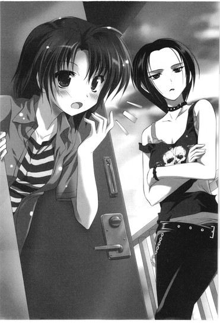
ＮＡＮＡ先輩は中に踏み込み、リンダの手を掴むなり外廊下に引っ張り出す。戻ろうとするのを中からさらに荒っぽく押し出して、というかラバーソールで蹴り出して、
「いい加減グダグダうるせーんだから、こいつに言いたいことあんならとっとと済ませてすっきりしろ。うちに来られてあーだのこーだの、わけわかんないことぐずられても付き合いきれないんだよこっちは。バイトもあるし。練習もあるし。寝てーし」
リンダの鼻先で冷たくドアが閉まる。ガチャッと中から鍵がかかる音がして、リンダは慌ててドアに飛びつき、
「先輩！ 先輩ってば！ ていうか、私、靴！中なんですけど!?」
ドアを叩いて主張するが、
「知るかよ」
と中からはたった一言のみ。ドアをバン！ と叩き、
「先輩のバカ！」
リンダが言うと、
「おめーの靴とバッグは燃やしとく」
と。すいません！ ごめんなさい！ 先輩バカじゃないっす！先輩は天才っす！繰り返すリンダの声に、今度こそ返事はなかった。
リンダは薄いスニーカーソックスしか履いていない足でつま先立ち。ＮＡＮＡ先輩の部屋のドアはそれきり開く様子がまったくなくて、リンダは引きつった顔で万里を見やる。
「......っていう......」
「......」
「......こと、なんだけど......」
「......」
万里は、もはや呆然と頭が痺れたようになって突っ立ったままそのリンダの姿を眺めていた。
じゃあ、うちに行きます？ ──その一言を発するのに、体感時間ではたっぷり三分はかかった。
「あの人、元おまけんなんだよね......」
「は!?」
気まずいを通り越してほとんど恐怖、万里は呼吸すらまともにできずに息をつめていたのだが、
「私が入ってすぐ辞めちゃったんだけど。だからそれ以来の付き合いで」
「い、」
ＮＡＮＡ先輩があの壊れ系就活戦士ホッシー元会長やサル系好男子コッシー先輩と一緒に、くわえタバコで気だるげに阿波踊りやらＹＯＳＡＫＯＩやらを踊り狂っているさまを想像してみて、喉から酸素がようやく漏れた。
「......意外すね......それは」
「あとあの人、本名『なな』じゃないから。あれはなんていうか、公式呼び名みたいなもんで」
万里の部屋で、二人きり。
「でも親にも『ＮＡＮＡ』って呼ばれてるらしいよ」
リンダは所在なさそうに、キッチンつきの廊下に佇んでいる。
部屋の真ん中に立ち尽くす万里と目が合い、困ったみたいに笑ってみせる。デニムにタンクトップ、その上にユニセックスなシルエットのシャツを羽織っただけの、リンダらしい、曖昧で適当でさまになったスタイル。
朝起きて出てきたままの部屋には、ぬるい空気が自分の体臭とともにこもっているような気がした。
タオルケットはくしゃくしゃに丸まっていて、寝巻きにしていたＴシャツは脱ぎっぱなし、床に落ちている。シンクには昨日の夜に使った大皿とスプーンが汚れたままで置いてあるし、朝にお茶を飲んだコップもそのまんま。座ったスツールもそのまんま。コンビニのビニール袋はゴミでパンパンのまま転がっているし、北向きのカーテンはだらしなく半開き。
隠し切れない湿り気が、黙り込む二人の部屋に垂れ込める。万里の口はまた重くなる。
座ってください、とも言えず、香子のために買ったスリッパをすすめることもできず、万里はただ呆然と、この事態の只中に突っ立っている。
なにを言うべきか、どうするべきか、考えはまとまらない。静かにパニックを起こして一人、黙って棒切れのようになっている。
「......この部屋で、暮らしてるんだ」
リンダが、ぽつりと呟いた。
返事のできない万里をよそに、西のベランダへ続くサッシの窓辺までソックスで歩いていって、外の風景を見下ろす。たいしたものは見えやしないはずだ。ただ、万里が暮らすこの街の、やや雑然とした風景しかそこにはない。
「ここで生きてるんだね。万里」
リンダはガラスに額を押しつけ、なにかを確かめるように今度はもうすこしはっきりとそう言った。
そしてくるりと窓辺に背を向け、万里の方を見て、大きく息を吸う。しゃくり上げるみたいにその喉が鳴って、
「......多田、万里」
名前を呼びつつ、リンダは手で顔の半分を押さえる。息を吐きながら背を丸め、顔を強く俯ける。そうして言うのだ。
「ほんとに、ごめんねえ」
柔らかな声だった。ほろほろと崩れ落ちる菓子みたいな、優しい響き。
嗚咽する人のように肩を落として、落涙する人のように顔を隠して、しかしリンダのその声には、穏やかな笑みの気配まで含まれているようだった。
声は優しく万里の耳を撫で、首を撫で、背中を撫でて、あたたかな雨のように降り注ぐ。
冷たく凍り付いていた万里の命を溶かすように、復活の息吹のぬくもりで包み込む。
「今、こんなふうになってることも。今までのことも、全部。私は半端なことをして、余計に混乱させたよね」
何メートルかの距離をおいて、万里は身体が震え出すのを感じていた。なぜだろうか。寒くもないのに止まらないのだ。
ごめんなんてやめてください、リンダ先輩はなにも悪くないじゃないですか、俺がくよくよ逃げ回ってただけのことで──そう言いたかった。
なのに言えない。
身体は万里の意思を離れて、今、ただ震えている。そして体内からじわっと水気が溢れ出す不思議な感覚に襲われる。漏らしたかも、いきなり。突然の失禁の感覚にまさかと驚くが、しかし漏れていたのはいわゆる小ではなくて、涙だった。
自分でも意味のわからない、驚くほどの量の涙が、いきなり目から流れ出していた。
感情はまったく追いついていない。なぜ自分が泣いているのか万里には理解できない。
ただ、身体だけが、泣いている。自分のものではないかのように。
どうしよう。
どうしたらいいのかわからない。
「......万里......」
万里の涙に気がついて、リンダがショックを受けたように目を見開いたのが見えた。そして飛ぶような速さで、リンダは万里に歩み寄る。背中を支え、顔を覗き込んでくる。
「......なんで？ なんで泣くの？ 悲しいの？寂しいの？大丈夫？」
必死に首を横に振り、万里は親指の付け根で頬の涙を拭う。身体の力が一気に抜けて、情けなく床にへたりこむ。
まるで保護者のようにリンダは一緒にしゃがみこみ、万里の目を見つめ、言い聞かせるみたいに強く声を張る。
「ずっと言いたかったことがあるのよ。これだけは、どうしても言いたかった。私は、あんたにまた会えて、本当に嬉しい。本当に、嬉しいんだよ」
肩を掴み、リンダは笑みをみせた。
「なにを引きかえにしてもいいって思ったんだもん。だから神様、万里を生かして、って。心配したんだよ？あの日、急に他のヤツから連絡がきて、万里が川で見つかったとか、大怪我とか、意識がなくて、とか、そんな話で......死ぬかも、って。マジで。......本気で万里は死んじゃうのかも、って私......私だけじゃなくてみんな、ほんっ......とに心配したし、怖かったんだよ。夢なら覚めてってリアルに思った」
笑顔でいながら、首を横に振り続けている。泣くな、泣いたらいけない、万里にそう言い聞かせるみたいに。
「そして、私の願いは叶ったの。あんたが生きて、ここにいる。そのためになら私はなんだって失える。喜んで差し出すよ。思うのはたった一つ......どれほど、あんたが生きていくのは難しいんだろうってこと。それだけ。私が傍にいることでその困難が増すのなら、私はここから、あんたの傍から、離れたっていいんだ。そんなの、少しも苦痛のうちには入らない。万里を永遠に失うことに比べたら、そんなの、喜びの方に入れたっていいよ」
「......っ」
新たに湧き上がるこの涙は、万里にもちゃんと理由がわかっていた。
己の愚かさが、俺はバカだ、という自覚が、卑小なこの身と心を切り裂いたのだ。涙は傷から流れた新鮮な血だ。
なんという間違いをしていたのだろう、と思う。
リンダという人を、理解しようともしていなかった。自分の狭い視野とちっちゃなスケールで、勝手にこの人の心を計っていた。過去の万里が好きだったなら今の俺には消えてほしいだろう。それを隠しているのは大変だろう。ああ申し訳ない。──そんなふうに思い込んで、勝手に怖がって、リンダの話も聞かずにずっと逃げ回って、勝手に罪の意識を背負っていた。自分を罰する「重し」のように、不運にも科せられた「荷」のように、リンダのことを思っていた。
こんなにも、この身がここにあることを、喜んでくれていたのに。
この人の祈りが、この命をここに残してくれたというのに。
なぜだかするりとそう思えていた。死なずにすんだのは、リンダがなにかと引き換えに、この命を守ってくれたからだ。「偶然のラッキー」よりは、万里にとってはその方が、ずっとずっと信憑性があるように思える。現実的に思える。それこそが真実だと感じる。目の前にいるこの人を、リンダという人をちゃんと見れば、ちゃんと知れば、そういうことができる人なのだと分かった。
それなのに、どれだけ、バカが過ぎるのだろう。
本当に、どれだけ。
「......ごめんなさい......！」
万里は蹲って、その一言をリンダに告げた。やっと、告げられた。
そして起き上がり、クロゼットから使っていないバッグを引っ張り出す。その中には一枚の写真があった。
実家で見つけた、かつての自分とリンダの写真だった。青空の下、頬をくっつけて大笑いしている、高校生の頃の二人がそこにいる。
どうしても置いてはいけず、それでも見ることはできず、ただ胸を塞ぐ重しでしかなかった「その頃」が、今、意味合いをかえて存在している。
こんな時代があったから、こんなにも輝ける頃があったから、今が在るのだ。リンダと生きていたこの時代があるから、ここに生き残ることができた。
「......ありがとう」
今、またリンダと出会えて、ここにこうして生きているのだ。
写真をしっかりと両手で持ち、胸につけて、リンダにその言葉も告げることができた。
「これって......そうか」
微笑みながら写真を見やって、納得したみたいにリンダは万里の傍ら、ぺたりと床に尻を落として座る。体育座りで膝に一度顔を埋め、両手で髪や耳のあたりを何度か抱えるようにしながら、そのまま長く頷いてみせる。
「それで、私のことがわかったんだ。......なるほどね。こんなの、持っててくれたんだ」
「......俺とリンダ先輩は、どんな関係だったんですか？」
同じポーズで座り込み、万里はずっと訊きたかったことを口にした。親指の腹で涙を拭うと、続いてするりと自然に声は出て、ここには苦しみも痛みもないと思えた。自分では知らぬ間に、微笑むことさえできた。鼻水はまだしょっぱく垂れていたが。
リンダはゆっくりと、懐かしむみたいに、視線を遠くする。
「私たちはね、本当に、ほんっとうに、すっごく、仲がよかったんだ。高校三年間同じクラスで、同じ部活で、妙に気があって──いわゆる、親友だよね。ずっと二人でくっついてた。でも、付き合っていたわけじゃない。きっと仲が良すぎて、恋愛関係にはならなかったんだね。もしどっちかに恋人ができても、お互い別々に結婚して家庭をもっても、年をとっても、ずーっと、じいちゃんばあちゃんになるまで仲良しでいようね、って言い合ってた。そういう仲だったのよ」
万里は、また一つ、自分の勘違いを知った。
かつて、自分とリンダは付き合っていたと信じこんでいたのだ。付き合っていなかったとしても、すくなくとも自分はリンダに恋をしていたのではないかと、心のどこかで思っていた。写真に写る自分の顔は、そういう熱と輝きを帯びて見えた。
それとも、リンダはその気持ちを知らなかっただけかもしれない。気持ちを伝えることができないまま、多田万里は、この世から姿を消してしまったのかも。
だとしたら、かわいそうに──そう思いながら、万里は写真の中の二人の笑顔を覗き込む。無邪気で、開けっぴろげで、幸せそうに笑っている。指の腹で写真にそっと触れると、指についていた涙が水滴になって笑顔の上に零れた。万里の顔にも、リンダの顔にも。
ぐいっ、とリンダが手を伸ばし、乾いた指先ですぐにそれを拭いてくれる。
「万里は、変で、おもしろくて、優しいとこもあって、いい奴だった。でもなーんか、その分頼りない奴に思えてさ。私はいっつも、万里の後をついて回ってた。それで、『なにしてんの？大丈夫？ねえ万里！』......とか言って。ずーっと、そうやって万里の面倒を見てたんだ。男ってよりは、弟みたいに見てたのかもね。同じ年なのに姉貴ぶってさ」
「なんかそれ、今とあんまりかわんなくないすか？」
「......言われてみれば......」
目を見交わし、やがておかしくなって、ほとんど同時に軽く吹き出す。妙におかしくて笑ってしまう。
本当にそうだ。結局、万里とリンダの関係は変わっていない。記憶を失くしたって、地元を離れたって、時間が経ったって、同じ事をやっている。姉貴ぶったリンダがバカな万里の面倒を見て、後をフォローして回っている。
最初から──今の万里がリンダと出会ったその瞬間から、そう言えばずっとそうだった。入学式の喧騒に巻き込まれていた万里を救ったのはリンダ。変なサークルに拉致されかけていた万里を救ったのも。そしてその後はサークルの先輩として、ずっとリンダは万里を気にかけて、心配して、面倒をみてくれている。
「ていうか、なんか俺って恥ずかしいヤツ......リンダ先輩なしじゃ生きていけないヘタレって感じじゃないすか？違う大学に通ってた可能性もあるし、入学式でああやって先輩と再会できなかったら、今頃生きてる自信もないんですけど」
リンダはそう言う万里を「おおげさな」と笑うが、でも、本当にそう思うのだ。
リンダが自分を見つけてくれなければ、そして傍にいて、守ってくれなければ、今の自分はありえなかったのだと心から思う。......具体的にはとりあえず、多分あの山で、香子もろともに結晶様の餌食だった。
改めてリンダの顔を見た。なにさ、と笑う、優しい造りをしたその顔。
まるで、天使だった。万里にとって、リンダはまさに守護天使。
この人の優しい翼の下に守られて、どうにかこうにか生きている。こんなに強い守護に恵まれて、自分は生きることができている。
それに気づくことすら、自力ではできなかったのだ。
「そんなことないよ。私がいないとあんたは生きていけない、なんて思わない。そんなわけない。ほんとはそんな弱い男じゃないよ、多田万里は。私がそれは保証する」
向き直り、真正面からリンダは万里の顔を見返す。まっすぐに目を覗き込んでくる。
「でもね、この先をずっと生きていくのが簡単な道のりだとも思えない。だからね、私はこれから先、サークルの先輩として......ていうか大学で出会った女友達として、プラス事故のことを知っている人間として、多田万里をサポートしていけたらって思ってる。もしもそれが迷惑でなければ」
「迷惑だなんて！ そんなわけ、ないじゃないですか！でも......」
ちょっと頭を掻いて、尋ねたくなってしまうのは、
「......なんで、俺なんかのためにそこまでしてくれるんですか？」
果たして自分にそこまでの──リンダにここまで大切に思ってもらえる「権利」や「価値」、「理由」があるとは思えないからだった。
しかし、なに言ってんの、とリンダは驚いたみたいに目を見開く。
「だってあんたは万里じゃん。そんなの、当然じゃん。たとえあんたが覚えてなくても、あんたは私には大事なヤツなの。......っていうのと、私は、あんたといるのが楽しいのよ。あんたは変わってしまったようで変わらない。多田万里との日々が、今、私には楽しいの。だから、普通に、一緒に過ごしたいって思うんだ。ただそれだけのこと。......わかる？」
にっこりと笑って、リンダは右手を差し出してきた。
おずおずとその手を握ろうとすると、
「こうやんだよ」
勢いよく一度パン！ とタッチして、跳ね上がった手を瞬間、ぎゅっと強く握られる。すぐに離して、びし！と顔を指差す。これが親友の証、らしい。そしてリンダは身軽にひょいっと立ち上がった。
タイミングよく万里の携帯が鳴って、見ると相手は香子だった。出なよ、とリンダに促されて通話ボタンを押す。
『もしもし多田くん？ 水漏れはどう？』
「あ、えっと......それは大丈夫だったんだ、け、ど......」
『実は、ちょっとこっちも問題発生で。今話していい？』
香子の声に耳を傾けながら、どうしようか迷ってリンダの方を見やった。リンダはひらりと片手を上げて小声、
「隣に戻る。またね」
裸足のままで玄関に降りようとしていた。慌てて電話口を手で押さえ、
「あっ、ちょっと......俺のサンダル、よかったら！えっと、たしかその辺に転がってたと」
「いいのいいの。気にしないで。こーこちゃんの傍にいて声を、話を聞いてあげて。好きなら離れたらだめだよ。絶対に。じゃーね」
リンダはドアを開いて、いつもと変わらない軽い物腰でするっと出ていってしまった。まるで街角の気まぐれな猫みたいなしなやかさ。
＊＊＊
電車に乗り、柳澤の部屋に無事にたどりつけるかどうか、ちょっと不安な気持ちで壁面上部に貼り付けてある路線図を眺める。
普段通学に使っている電車の、万里の家よりもすこし大学から離れた側に柳澤の住む駅はあった。
こっちの方面に来るのは上京してから初めてだった。揺れる車窓に広がる東京の町並みを、傾きかけた眩しい日差しが強いオレンジに染めている。ごちゃごちゃとくっつきそうな密度でマンションが建ち並び、パチンコ屋や、あやしげなピンク系店舗の広告が目立つ一方、その向こうにはこんもりと茂った縁の地帯があって、暮れる空も意外なほどに広く見える。
そろそろ帰宅時間の早めのピークなのか、制服姿の中高生が目立つ車内はすこし混み始めていて、ちらほらと立っている乗客もいる。
万里が握ったままでいる携帯には、知り合ったばかりの頃に恭しく交換した柳澤の部屋の住所が入っていた。
今まで、柳澤が万里の部屋に来るばかりで、その逆がなかったのには特に意味はない。万里の部屋の方が大学から近いのもあるし、たまたまそういう流れになることが多かった、というだけのことだった。今度やなっさんの部屋にも行っていい？とは言っていたし、いいよー、と柳澤も言っていた。
......言っていたから、事前アポなしで行ってもいい......よな......。と、信じて電車に乗っている。
アポなしというか、今そっちに向かってるんだけど、と、メールはもちろんしてある。電話だって何度もかけたし。ただ、返信はない。香子もメールをしたというが、そちらにもいまだ返信はないという。
香子の一報は、「光央がピンチ、かもしれない」と。
ピンチかもしれない現場を香子が目撃したのは、万里がＮＡＮＡ先輩の偽電話に騙されて慌てて帰っていって、本人曰く一人で「ポツーンと」「哀しく」学食に向かった、その後のことだと言う。
相変わらずキャンパスでは浮きまくり状態、一人でトレイを持って席を探していてもなにやら人の目が気になって、香子はわりと必死に知り合いを探していたらしい。そして二次元くんと柳澤がいるのを見つけ、近づいていくと、香子は話したことのない男女も一緒にいた。気後れして結局一人、すこし離れた席に座った。
ややあって、そこに超音波──千波が他の女子連れで現れた。
「あっヤナだー！ って、あの甘えたきゃんきゃん声。即、わかったよ」
今日は逃がさないよー、だとか千波は言ったらしい。香子がそちらを見ると、千波は笑顔で、接近してくるところ、まるで何事もなかったかのように明るく、以前とかわらないように振る舞っていた。
柳澤はしばらくは普通に、他の連中と一緒にその場にとどまっていたが、やがて「千波、ちょっといい？」と千波だけを離れたところに誘った。
その離れたところ、というのがちょうど香子の目の前で、香子はとりあえず寝ているふり、トレイの脇に顔を隠すようにして伏せた。そして、
「光央はこう言ったの。『他の奴らの目が気になるから、俺に話しかけないでくれる？』って。『俺はみんなに笑われてる気がする』って。そうしたら超音波が、『それってずっとってこと？』って言って、光央が、『ずっと』って答えたの。で、『ヤナがそう望むならそうする』って超音波が言って、歩いていって、光央はその場でしばらく俯いてた。私は必死に、寝たふりしてた。そろそろいいかしら......と顔を上げたらまだ光央はそこにいて、ばっちり目があっちゃった。気まず！と思いつつ、ハーイ！って挨拶してみたけど、私を無視して出ていっちゃった。それっきり、三限にも出てこなかったし、メールしても無視だし......なんだか私心配で」
香子は電話口で、本当に心配そうに声をひそめていた。そして、
「だから多田くん、ちょっと光央の部屋まで様子を見にいったらどうかな、って思って電話したの。ほら、私は絶対に行くわけにはいかないでしょ？」
「俺が？」
「そうだよ。いや？」
「や、それは構わないっていうか、俺もやなっさん心配だし、行ってみるのは全然いいんだけど、『私は絶対に行くわけにはいかない』ってなに？」
「やだ、なに言ってるの。彼氏がいるのに、他の男が一人暮らししている部屋に行っていいわけがないでしょ。異性と二人きりで密室にこもるなんて、それは完璧に浮気だよ？そうでしょ？そうだよね？」
「そ、そう......？」
「だよ？」
「......だよね」
「だよね！」
──なら、もう浮気はしてしまったではないか。
が、もちろんそうは言えなくて、万里はその件は置いておいてとりあえず大急ぎ。部屋を出て一人、この電車に乗った。香子はあの後恐らく四限に出たか、講義がなければもう帰宅しただろう。
香子を連れて一緒に行こうかとも思ったが、柳澤がそれをどう思うかは微妙な感じがしたし、万が一柳澤が帰宅したのではなくてどこかに外出していたとして、引き返すことになっても一人の方が身軽だとも思えた。
目的の駅が近づいて、ホームが見えてくる。万里は不安な胸を落ち着かせようと深呼吸を繰り返す。初めての町で迷うことなく、ちゃんとヤツの家までたどり着けるだろうか。そしてヤツは大丈夫だろうか。
確かに、これは「光央のピンチ」だと思えた。
好きな女に「話しかけるな」発言をかますだなんて......あの柳澤のことだ。今頃めちゃめちゃ落ち込んで、自己嫌悪に沈んでいるに違いない。
ゆっくりと電車にブレーキがかかり、万里は座席から立ち上がる。荷物はなし、財布はポケットで携帯は手に持っている。
各駅停車しか停まらないこの駅で降りる人は多くはなかった。すいたホームを歩き、階段を上がる。改札は北口と南口があって、どちらから出るべきか迷いかけるが、住所の番地から北口とみた。
ピッ、とスイカで改札を出て、
「えーと......」
万里はすこし辺りを見回す。
初めて降りる駅とはいえ、同じ路線の、ほんの数駅先なだけ。景色にもさほど大きな違いはないように見える。すぐ目に入る看板もトンカツのさぼてんやら、センチュリー21やら、おなじみのものばかり。それでも商店街はなさそうだったり、行きかう人も少なかったりする辺り、万里の住む町よりはすこし殺風景といえるだろうか。
携帯でグーグルマップを確認して、大通りをそのまま右へ。
歩道には、イチョウ並木が茂っている。
陽が傾いてしまっても、湿度が高いのか今日は妙に蒸し暑く、万里は歩きながら二枚重ね着したＴシャツをパタパタやって隙間に風を通そうとする。
そうしてまっすぐに歩いて、駅の改札からおよそ数分というあたりだろうか。目印の小さな機器メーカー会社のビルを曲がって、マップを注意深く眺めながらトリッキーな角度で入り組む路地に入る。そこに、柳澤が暮らすアパートがあった。
ごく普通の、特徴のない二階建て。貧乏学生が暮らすにふさわしい、昔ながらの、木造アパート。万里の住むネオフェニックスよりも築年数は相当いっているようだったが、しかしボロいという印象よりは、むしろ素敵に味わい深い。敷地に植えられたたくさんの木や植物が鬱蒼と茂って、ある種の趣を醸し出しているようにも思える。
オートロックなどはもちろんなく、そのまま外階段で二階へ上がる。２０３が柳澤の部屋のはずだった。
メールや電話のシカトされっぷりからいって、チャイムを鳴らしても出てくれるかどうかは微妙ではあった。というかそもそも、部屋にいるのかどうかも微妙だ。
それでも一応、と廊下に踏み出そうとして、
「ヤナってば」
う、と足を止める。思わず階段をすこし降りて身を隠す。
「だからほんと、今日は体調よくなくて......」
「だから心配して来たんじゃなーい」
「今は一人でいたいっていうか......」
「無理しちゃだめだよ、ご飯つくってあげるって言ってるじゃーん。ほらー見て見て、お買い物してきたしー」
中ほどの部屋のドアが開いて、男女が何事か言い合っているのだ。部屋の中から応対しているのは、見間違いようもない柳澤光央。買い物袋をブラ下げて「せっかく来たんだから入れてよ、すぐ帰るしー」と食い下がっているのは、確か、映研の二年生......三年生だったか？前に一度か二度、いや三度か四度、......もっとかもしれない。柳澤といるときに結構頻繁に話しかけてきたことがある先輩だった。大学のミスだか準ミスだかで、目立つ派手顔の美人だな（香子には及ばないが！）、だとか万里も思った記憶はあるのだが、
「あ、あんなだったっけ......!?」
万里は一度顔を引っ込めて、ちょっと息を飲む。万里が覚えているあの先輩は、普通にブーツかなにかを履いて、デニムシャツに花柄ひらひらスカートみたいな、いかにも女子大生然としたカジュアルファッションだったはずだ。
しかし今そこにいるのは、濃い目の茶色の巻髪に、紫色のサテンのカチューシャ。
白地に縁で大柄が描かれた女っぽいワンピースに、華奢なハイヒールサンダル。ブランドものらしいバッグを肩からかけて、耳にも胸元にも指にも大きなキラキラを光らせて。
あれでは、なんというか、......偽香子だ。
白い顔に濃い口紅、カチューシャさえしていれば似る、というわけでもないのだが。とりあえず結構、いろいろ怖いものがある。
「ねえ、ヤナは肉じゃが、好き？」
恐る恐るもう一度覗いてみると、偽香子化した先輩はなんとか柳澤の部屋に入り込もうと、サンダルのつま先をぐいぐいドアの隙間にねじ込んでいるところだった。
「い、いや、俺、マジで......」
「材料的にはカレーにもなるよ？ ねえねえどっちにする？ていうか私、今日ずっとヒマでー、なんなら泊まってもいいかなー、とか言ってー。だからここ開けて？」
「......マジで、マジでマジで......」
「開、け、て？」
柳澤はドアを閉めようにもさすがに先輩のつま先を潰すのは気が引けるらしく、ただ困り顔で立ちすくんでいる。
先輩の来襲を迷惑に思っているのは覗きの身分の万里にも丸わかりで、あれで帰らないあの先輩は怖い。ちょっと危ない。そう思う。
この状況から、うまいことあの年下の友を救ってやらなければ。
「......今行くぞ、やなっさん！」
万里は廊下に飛び出した。
そしてつかつかと近づいていくなり、
「Ｍｙ Ｂｏｙｆｒｉｅｎｄ......」
片手を腰にモデル立ち。巻き舌でねっとり呟いて、いからせた肩でぐいっと二人の間に無理やり割り込んでみた。どうだ、ドン引きだろう。柳澤を背にかばい、チラリと前歯を唇の間から覗かせた自分なりのキメ顔で先輩に挑む。
「万里......！」
嬉しげな柳澤の声は後頭部に。そして先輩は、
「......うわ......」
なんだこいつ、と気持ち悪そうに呟いて万里を一瞥、一歩下がる。
「ハーイ、やなっさん」
万里はおかまっぽいモデル立ちをキープしたまま、愛しの彼女そっくりに、顎を高くつきあげて半眼。下向き気味に先輩にガンを飛ばしてみる。先輩は多少怯みつつ、しかし負けてはいない。険のある視線で万里を睨み返し、
「ちょっと、なに？ ねえヤナ、こいつってなんなの？」
鼻声で柳澤にしなだれかかろうとするが、
「こいつは、俺のボーイフレンドです」
勝負あった──万里は「はん！」と勝ち誇り、先輩にさらに詰め寄る。
「俺は肉じゃがの方が好きですけど!?」
「おめえに食わせる肉じゃがはねえ！」
先輩は踵を返し、退却していった。カン！カン！カン！と階段を下りていくヒールの音に鋭い殺気がこもってはいるが、とりあえず。
「た、助かった......！ 怖かったよー......めっちゃ胸の谷間見せ付けてくるんだよあの人......！」
ドアを開いてその背中を見送り、柳澤は心底ほっとしたように万里に手を合わせた。おっしゃおっしゃ、おっちゃんが来たから大丈夫やで、と万里は力強く頷いてみせた。
メール返す心の余裕なくて、と謝りながら柳澤が部屋の中へ入れてくれたのだが、
「あーらららら......あらららあらあらあら......」
正直、これは予想外であった。ちょっと香子のようになりながら、万里は部屋の様子を見回す。あらら、光央ったら......。
「汚いだろ？ ......びびった？」
「ていうか、どしたの？ って感じ」
Ｔシャツにハーフパンツ、首にはヘッドフォンをぶら下げて音を漏らしつつ長すぎるケーブルをずるずる引きずるという完全家スタイルで、柳澤は気まずそうに顎を撫でる。こんな風になっていてさえ、一応顔はイケメンなのだが。
「ここ何日か、掃除とか片付けしたりする気力を完全に失ってて......」
「これ見せたら、あの先輩も自ら撤退してったかもよ」
「......かもな」
わりとだらしない方だと自認する万里も驚く、そこは結構な魔窟であった。
さして広くはない、せいぜい六畳程度に思えるワンルームのあちこちに脱いだ服が堆積していて、テーブルにはスープが残ったままのカップラーメン、割り箸、空だったり飲みかけだったりするペットボトルが何本か。小さなキッチンのシンクには汚れた食器が放置されていて、そしてなぜかコンビニゴミの山まで放り込まれている。トイレ洗面兼用バスルームのドアは開きっぱなしで、湿ったにおいとともにタオルやらなにやらが室内にはみ出しているし、とりあえず、床が見えないのだ。かろうじてビニールフローリングらしいのは分かる。
「でも一応、自分ではどこになにがあるか完全に把握してるからさ」
そう言ったそばから柳澤は裸足でなにかをバキッ、と踏み、「うっ......」と端正な顔を歪める。それは音的に多分ＣＤケース、慌てて足をのかそうとしてバランスを崩し、ノートパソコンに刺してあったヘッドフォンの端子がすぽっと抜ける。
途端にスピーカーから溢れる、大音量の男ボーカル。高音で響くスローでメロウな歌声と澄んだトロンボーンの音色はなんとなく柳澤らしくなく感じられて、
「......珍しい感じのもん聴いてるね」
尋ねるともなしに呟く。どげんか遷都物語......と柳澤が言う。冗談なのかなんなのか、とっさに意味がわからない。
「な、なんて？」
「......いや、そういう曲名なんだけど。ていうか......ほんとにこのままじゃだめなんだよ。俺、リアルにどげんかせんといかん。この部屋を......そして人生を......」
しゃがみこんでマウスをカチカチいじって曲を止め、ヘッドフォンをむしりとるなりぽーんとその辺に投げ出して、柳澤はベッドに腰を下ろした。そこにも堆積していた服や雑誌をドサドサどかし、
「そこ座る？」
万里に隣を勧めてくれる。あ、はい、と座りつつ、並んでベッドに座りたかったのはこいつではない......断じて......と、万里は思う。柳澤はへへ、となぜかすこし照れ笑い、
「昼間はこれ、一応ソファみたいなもんだし」
「いや、ベッドだろ......絶対ベッドだろこれ......」
しかしそれでもとりあえず、顔を見られたのは一安心ではあった。
「まあ、一応元気そうにしててよかったよ。やなっさんのこと結構心配だったから。というのも、えーと」
「......香子になんか聞いたんだろ？」
「なんかっていうか、そうっすね......うん、一部始終を......」
なんともいえない表情で柳澤はちょっと肩をすくめ、テレビをつけ、リモコンを手の中でもてあそぶ。意味なくチャンネルを変えていく。
野郎二人の密室に、すこし気詰まりな沈黙が続く。万里は話題を変えてみることにする。
「そういえばあの先輩、いったいどうしちゃったの？」
ああ......、と、答える柳澤のテンションの低さよ。
「あれね......。なんか、俺が千波に振られたって噂を聞いたらしいよ。ちょっと前からもう、メールしつこくて。だいじょうぶー？飲みいかなーい？落ち込んでなーい？攻撃で、今日はとうとうあのような状況よ。買い物してこられたってなあ......泊まれるとかいわれたって、こっちはただもうひたすらこええ、っていう......つか、めちゃめちゃおっぱい見せてくんだよあの人。谷間とかじゃなくて、もうそれ乳輪じゃん、みたいなとこまで。なんかややベージュなの。それはもはや犯罪じゃねえ？俺に対して」
その言い草に、ぶふっ！ と万里は思わず笑ってしまうが、
「笑い事じゃねえんだって。......ていうかね、なんか、みんな知ってんの。俺が千波に振られたことを。なんなの？どうして？そんなに他人のすることに興味あるかね？」
柳澤はため息をつき、力なく肩を落とし、項垂れる。
「まあ......確かに、目撃者は多数......だったかもしれない」
柳澤が振られた現場は、数十名での大規模飲み会だったのだ。千波はすでに一年生の中心的存在だし、柳澤も抜群の容姿で目立つ奴ではあったし、噂が噂を呼んで、上の学年にまで広まってしまっても不思議ではないと万里には思えた。
心底参った様子で、柳澤はぶすっと表情を曇らせる。
「みんな俺のあのザマを知ってると思うと、人目がすっげえ気になっちゃうっていうか......変に意識しちゃって、なにするにも緊張しちゃって、余計にしくじって、傷は深まるばかりで、なにもかもが裏目って感じ」
「なるほどなあ......」
目立つ奴には目立つ奴なりの苦しみがあるのか。万里は荒れてすさみきった室内を見回しながら、この部屋に暮らす柳澤の内心を思う。
「......わかってるんだよもちろん。千波に対して、どう振る舞うのが正解なのかは。なんでもなかったように、明るく、今までどおりに振る舞うべきなんだよ。それはわかってんだけど......でも、なかなかどうしても、思ったようにはできないんだわ。会えば、うわっ、とか思っちゃうし、恥ずかしかったり、悲しかったりするし、そしてそんな俺をみんな見て笑ってんのかなとか卑屈なことを思っちゃうし......その繰り返し。そしてこのザマ。どうしよう俺、だめすぎる。最低」
「最低、ってことはないだろ」
「いや、最低」
万里の彼女のこと言うけどね、と柳澤は一度前置きしてから、
「俺は香子が、やっぱり憎たらしい」
「お、おう......ていうかやっぱ憎たらしいんだ、そこは」
うん。と柳澤は頷いてみせる。
「とっても、踏み台にされた感がある。俺をあれだけ追い詰めて、進学先まで変えさせて、結局、俺より先に落ち着いたとこに収まりやがって。足を引っ張りまくられた挙句に、先に行かれちゃったみたいで悔しい、的な感じ。......でもそれを香子に言っても意味ないじゃん。俺が悔しいから万里と付き合うなとは言えないじゃん」
「いや、マジでやめて......それはマジで......」
「言わない言わない。言わない、絶対。香子が万里と落ち着いてくれれば、俺にとってもよき事だもん。なんだかんだ、あいつは幼馴染だし。恋も愛も俺には無理な相手だけど、情はどうしても......とか、言われるのごめん、不愉快？」
全然、わかるし、と万里が答えると、明らかに柳澤は安心して息をついた。
「......万里は、友達だしさ。二人には幸せになってほしいって思う。本気で。......ていうか、香子をはっきり振る、って決めたとき、万里には香子の傍にいてやってほしいって思ったんだよ。万里がいれば香子は大丈夫だと思えた。あのときから、そう思ってた。だからこうなって納得してるし、嬉しいとさえ思える。ただ、先に行かれた、っていう悔しさはナシにできないんだわ。俺ばっか！とか。俺ばっか！こんなところで！っていう、ね......」
口ごもり、柳澤は自分の発言を恥じたみたいにちょっと唇を歪める。
ややあって、
「......俺ばっか、ドン底に取り残されて、このザマ。幼馴染の女を、その彼氏かつ友達の前で罵ってる」
これってどうよ、と言いたげに、手を広げて天井を仰ぐ。神か天使か、そういうなにかに救いを求めるみたいに、柳澤は空しく宙を見つめる。独り言みたいに小さく言い足す。
「憎たらしい......じゃないな。正確には、羨ましいんだ。幸せそうで眩しい奴が。俺だって香子みたいにあんなにキラキラ、ああなりたいんだ。ああなりたかった。俺だって上手くいかないなりに、千波と出会って、友達もできて、これからなんだって信じられてた。......千波に、あんなふうに振られるまでは......」
「やなっさ～ん......」
「俺には千波はオンリーワン。なのに、千波にとって俺は、ワンオブゼム。好きでもなんでもない、その他大勢のうちの一人。......やっぱ香子のせいだな。香子が俺を、頭おかしいほど追いかけられるべき特別な奴だと思い込ませたせいだ。『どうでもいい奴』でいるのに、俺は全然慣れてない。なんで？とか、思っちゃう。なんで千波は、俺を、好きになってくれないんだ......とか......そして、なんで、とかうざいことを言っちゃう時点で、もはや好かれる資格ないのは当然、みたいなね」
万里のすぐ傍らで、柳澤は更なるマゾいループに嵌っていく。なにか言葉を口にすればするほど自分で自分を傷つけて、傷ついた自分をまた自分で責める。本当なら、羨ましがられて当然の身分の男のはずなのに。ずば抜けた容姿で、しかもリッチで育ちも良くて（今は落ちぶれ中だけれど）、いい奴で。
要するに、全然自分に自信がないんだな、と万里は思った。こんなに整った横顔をしているくせに、自分の「良さ」が、この男には全然見えていないらしい。香子のせいで、と自虐的に言う柳澤の言葉もあながち的を外してはいないのかもしれない。好かれたくない、追われたくない、解放されたい、そう思い続けた思春期が、柳澤に自分を否定することばかりを習得させたのかも。
俺を追いかけるな、俺を好きでいるな、俺には好かれるほどの価値なんかないんだから！──たとえば、そんなふうに。あくまでも、万里の勝手な想像ではあったが。
ふと思うのは、リンダのことだった。万里がピンチに陥って、救いを求めていたときには、必ず差し伸べられたあの人の手。支え。
リンダの手が掴み、引っ張ってくれたのは、この手だったと思う。
リンダに教われたこの手を、今、友達のために差し出して、友達をドＭの自虐ループから引っ張り上げるために使うべきなのかもしれない。しっかりその手を掴んでやりたい。......とはいえもちろん比喩的な意味で、だ。物理的には気色悪いので柳澤の手を握ったりはしない。が。
「......やなっさん。あのさ」
尻ポケットから、万里はキラキラ輝くミラーを取り出し、ぱかっと開いて見せた。香子にもらった、思い出のプレゼントの手鏡。
「......なに？」
「見てごらんよ、自分のツラを」
本当なら傲慢なほどに自信たっぷりでいてもいい、綺麗なその顔をごらん、と。堂々と胸張って威張ってもいいイケメンぶりなんだぞ、と。そういう意味だったのだが、
「おお......ありがとう、万里......」
にこ、と柳澤は恥ずかしげに目をしょぼつかせてて微笑んでみせる。手鏡を覗き込みながら親指でゴシゴシと口の端を擦り、
「海苔だ......コンビニの手巻き寿司食ったから......」
気づかなかったよ、と。
ガク......と脱力しかける万里の耳に、この場にはいない幻の二次元くんの声が響く。『それがやなっさんのいいところ......』......確かにそうだ。こいつはこれでいいのだ。これだから、いいのだ。
手鏡をしまい、おっしゃ、と立ち上がる。
「では海苔もとれたことですし！ おすし！ 巻き寿司！食べましたし！とりあえず、フォロミー！」
バカ丸出しのポーズで親指を立て、柳澤の目の前で思いっきりその腕を回し、行こうぜ！ポーズを決めた。鬱なイケメンはきょとーんヅラ、
「......なに？ なにしてんの？」
「片付けよう、この部屋！ とにかくそっからだろ！ていうか、こんな汚いところで寝起きしてたら、鬱になって当然だって」
柳澤はまだすこしぼんやりした目をして、魔窟を見回している。
「そりゃ......そう、なんだけど......」
「けど、じゃなくて！ やろうぜマジで！ ほら立て！急げ！アヴォイッ！」
「アヴォイ？ なにそれ？」
「早く来いって意味だよ！ わかるだろ普通に！」
えー、と柳澤はまだグズグズと座り込んだままでいる。その前で手をバンバン打ち鳴らし、
「命令！ 掃除！ ほらほら、とっととやろう！俺も手伝うから！」
仁王立ちで万里は兄貴風を吹かせた。
本当は万里だってまだまだ未熟なガキだ。というか実は、生後一年ちょっとの赤ん坊。それでもここでは大人らしく振る舞って、なんとかこの難局を乗り越えろと柳澤を導きたかった。こんなところで腐ってんなよ、と、無理やりにでも立ち上がらせてやりたかった。リンダが自分にしてくれたように、自分も誰かを救いたかった。
未熟な素顔を、「年上の友」のマスクの下に隠して。
「まずはゴミからまとめよう！ 食品系は時節柄アレですし！おすし！ていうかゴミっていつでも出せる？」
「......いや。燃えるゴミは明日の朝」
「じゃあ、ゴミまとめたらうちに行こう。泊まっていきなよ。つか語ろう。飲もう！で、朝帰ってきてゴミ出せば寝坊もしないですみますし！そーしよ、まじで！」
柳澤がわずかに顔を上げ、万里の顔を見た。捨てられた犬みたいないたいけな瞳に、うむ、と年上らしく頷いてみせる。
そして両手で見えないバチを握り、ドーン！ドーン！と両腕を振るう。
「......それはなに？」
「陣太鼓！ さあ！ ゴミ袋を持ってくるんだやなっさん！」
「あ、手伝うってそういう......？」
いざ、出陣じゃ～～～～～～～！ 精一杯に己を鼓舞して、万里はもちろん、本当に手伝ってやる気でいるとも。
「......それはなに？」
「景気づけの舞！ おら！ さっさとその腐ったラーメン汁を捨てろ！」
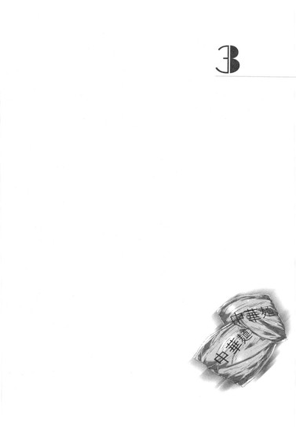
３
多田万里が歩いていく。
柳澤光央と連れ立って、横断歩道を渡っていく。
信号は点滅して、二人は「やべ！」「走れ走れ！」とじゃれあう二匹の犬コロみたいに笑いながら跳ねて駆け出す。それぞれ両手に持ったスーパーのビニール袋が重たげに揺れて、
「......待って......」
俺は、
「......待ってくれ、万里......」
もはやそれ以上の言葉など出なかった。
赤信号に変わってしまっても横断歩道を渡りきれなくて、車道の真ん中でしゃがみこむ。発進した車が、次々と突っ込んでくる。しゃがみこんで顔も上げられない俺を踏み潰し、突き抜け、誰一人ブレーキをかけてもくれない。
そして俺には、悲鳴も上げられない。やめてくれとも、助けてとも、叫ぶ声など出しようもない。
当たり前だ。死んでいるのだから。
万里はどんどん先へ行ってしまって、俺を振り返りもしない。待ってと呼んでも、聞こえていない。気づくわけもない。
なにか言うべきことがあったとして、この声は誰にも届きはしないし、俺がここにいるということを知る奴もこの世にはいないのだ。
ここにいるよ、とどれだけ泣いて叫んだって、誰も気がつかない。
こんな孤独を、俺はこれまで知らずにいた。それは幸せなことだったとわかった。自分では、すっかり諦めたつもりでいたのだ。この運命を受け入れ、なるようにしかならないと、穏やかな気持ちで悟ったと思っていた。ただ万里を見守っていた。何十年も経って、万里がいつか死ぬまではこのままなのかな、と、そんなふうに勝手に先を想像してもいた。
でもあのとき、リンダが泣いたのが俺にはわかった。万里の部屋で、リンダは笑い、そして心の中だけで泣いていた。幽霊だからそれがわかったんじゃない。俺は、リンダの声にいつも耳を澄ましている。だからわかったのだ。
約束したことがあった。もしもリンダが泣いていたら、俺は絶対に駆けつける、と。だから、そのときは「傍にいられてよかった」と思った。約束を違えずにすんだ、と。泣いているリンダに寄り添って、力になってやりたかった。手を伸ばし、語りかけた。幾度もこの指で、リンダの肩に、背中に、髪に、触れようとした。
そして、やっと理解したのだ。
リンダにはもう二度と触れられない。
もう二度と、この声は届かない。
傍にいる幽霊になど意味はなくて、そもそも存在にすら気づくことはなくて、そして、リンダは、俺を諦めてしまっていた。
もう二度と──
「......万里......待ってくれ......」
二度と、誰も、俺をわからない。なぜこんなことを、今まで平気でスルーしてこられたのだろうか。平気じゃない。全然、平気なんかじゃない。死んでいるくせに頭がおかしくなりそうで、泣いて、叫んで、暴れた。万里にしがみつき、噛みつき、生きてるおまえがなんとかしろと喚いた。この俺をなんとかしろよ、と。それでもなにも変わりはしない。誰も俺には気がつかない。
消えるのは怖い、と思っていた。
だけど今は、これが終わらないことが怖い。
こんな時間がもしも永遠に続くとしたら、どうやって耐えればいいのだろうか。終わりがないとしたら。肉体の生死とは関係なく、このまま俺だけが取り残されていつまでもいつまでも存在し続けなければいけないとしたら。親も死に、万里も死に、リンダも、知ってる奴らみんな全員死に、それでも終わりがないのだとしたら。
「......待ってくれってば！」
涙が溢れる頬を手で拭い、俺は必死に立ち上がった。行ってしまった万里を追いかけ、泣き声を上げながらよろよろと走った。こんなになってまで、懸命に。だって置いていかれたくない。こんなところに一人ぼっちで、置き去りにされて忘れられたくない。
走りながらふと、気がつく。万里は俺よりも、もう一年以上も先を生きている。
＊＊＊
マンションのエントランス前には遠目にも見慣れた長身の人影があり、
「ごめーん二次元くん、待った!?」
万里と柳澤が駆け寄っていくとクルリと振り返る。
「んもーおそいぃ！ 待ったぁ！」
そのいきなりのカマっぽい膨れ顔。クネクネとした腰つき。いくら心の友・二次元くんでもキモイものはキモく、思わず柳澤と「......」「......」、無言で目を見交わしてそのままスルー、他人のふりのシカトで通り過ぎていこうとするが、
「六時につくっていったじゃない！ もう十五分だよ！」
その長身の陰からにゅっと同じノリ、
「買い物してくるならスーパーで待ち合わせにしてくれればよかったのに！」
出現したのは白い美貌だった。
「......なーんて、嘘だよ。ほんとは全然怒ってない。多田くんの顔みたら、十五分も一時間も関係ない。ただ会えて、う・れ・し・い」
四歩で万里に近づいて、そのまま左腕に小猿のようにぶら下がる。それはもちろん加賀香子で、呼んだ覚えのない万里は「ん!?」とその顔を覗き込む。「うふ！」と香子は首を傾げてその目を見返す。
二次元くんも内股四歩で柳澤にしがみつき、
「やなっさんに会えて、俺も、う・れ・し・い」
全力で拒否られ、ヒステリックに「きー！」と振りほどかれる。きー、は多分、気持ちが悪いの、きー。
サプラーイズ！ と香子は瞳をキラキラさせているが、いや、本当に驚いた。万里がこの「柳澤光央を元気付ける会＠おれんち」に召集をかけたのは二次元くんただ一人のはず。香子にはちゃんと心配ないから、とメールを送っておいたのに。
「な、なんで？ なんで加賀さんがここにいんの？」
しかもばっちりお召しかえまでしているではないか。髪型も昼とは違う。彼女には珍しいアースカラーのノースリーブに大振りのネックレス、膝上丈のパンツ、ビーズのカチューシャで前髪を上げてゆるく編み込みにしたロングヘア。鮮やかなレモンイエローのおもちゃみたいに小さなバッグをちょこんと背中に斜めがけにして、晒した美脚をさらに際立たせる、羊ぐらいなら蹴り殺せそうなハイヒールのグラディエーターも。
「嬉しいでしょ？ 嬉しいって言って？」
そんな夜の家飲みファッションで、香子は万里の左腕に全体重をかけて甘えてくる。
「あ、いや、それはもちろん......」
「嬉しいって聞きたいの。だから言わなきゃだめ。ていうか言ってくれなきゃ傷つく」
「嬉しい嬉しい！ 加賀さんに会えて超嬉しい！」
「ん～......それ聞けて、私も嬉しい......」
うっとりぐりぐり、丸いおでこを万里の肩にすり寄せてくるのは動物みたいで本当にかわいく、愛しいが、それはそれ、これはこれ。ちょっと身を引いて、
「いや、ほんとに、なんで来たの......？」
改めて尋ねた万里に、香子は「やだ、なによその言い方」とややご立腹の様子。片眉だけキッ、と跳ね上げて、
「わからないの？ 私、彼女だよ？ 会いたくなったら会いに来るよ？そんなの、当然だよ？」
ねえ!? と振り返り、香子は二次元くんを見る。二次元くんは少々気まずげに肩をすくめて笑ってみせる。ほーらね常識、と、再び万里にくるり向き直り、
「多田くんもそんなのわかってるって思ってたけど、もしもわかってなかったんなら、今わかって。私は会いたいときには会いにいく。彼女なんだからそんなのは当たり前。３６５日二十四時間、油断しないで。いい？いいよね？わかった？わかったよね？」
「そりゃ、ふんが」
なにも言わせない。とばかり、万里の唇をぎゅっと人差し指で押さえつける。そうして香子はうふ、と笑い、さらに顔を近寄せて、
「実はね、五時ぐらいからこの辺で張ってたの。そろそろ帰ってくるかなー、って。そしたら二次元くんが来て、声かけてみたらこれから飲み会だって言うじゃない。そんなの、私も出席するに決まってるじゃない。ていうか逆に訊きたいの。......なんで私を呼ばないわけ？」
いきなり真顔。
万里の唇を指でつまんだまま尋問にかかる。答えようにも答えられない万里の代わりに脇から「はい！」と挙手して答えたのは柳澤で、
「決まってんだろ！ 今日は俺を元気付けるための会だから！おまえがいると俺が元気になれねえから！」
「光央には聞いてない」
ハン、と鼻先でそんなのはシカト、香子はなぶるような視線で万里をじっと見据えて動かない。
「ねえ、多田くん。......いいえ、『パスワード多田』。答えて。私は誰？」
唇が解放されて、
「......『ティファニー加賀』......」
万里は答えた。
ちなみに二次元くんは『キロバイト佐藤』──それが三人の、いわば協定ネームであった。
メンバーの誰かが飲み会を行うとなれば必ず出席すること、というシンプルな誓いで、この三人は結ばれているのだ。誓いを破ればそれぞれに、大切なものを失うことになる。
「だよね。そう、その協定に従って、私にはこの飲み会になにがなんでも参加する権利が......いえ、義務があるの。そうでしょ？だよね？そしてむしろいるべきではない人物は......」
くいっと香子はモデル立ち、柳澤を指差して軽く顎を出し、
「光央。ゴーホーム」
世にも冷たい目で言い放つ。ブチ、と柳澤のこめかみあたりからなにかが切れた音がして、
「......」
無言のままブーツを脱ぎ、香子に殴りかかろうとする。ちょっとちょっと！と万里は香子を背にかばうが、香子は香子でグラディエーターを脱いで振り回し、
「レッドウィングでジミーチュウに勝てるわけない！」
「先週うんこ踏んだソール見てもそれ言えんのか!?」
「うんこなんか！ こっちはスタッズつきだよ！」
「ばーかばーか！ ハブられ女！」
「うんこ踏み男！」
「てっかてかイエローの園児バッグなんかしやがって！かわいこぶってるつもりかよ！」
「はあ!? なに言ってんの!? セリーヌだよ!?ああそっか、振られすぎてセリーヌもわからないぐらい頭おかしくなっちゃったんだ!?光央超～かわいそう！」
「どっちがかわいそうだよこの老け顔！」
「無料パーマ！ やっすいパーマ液で毛根は死んだよ！」
「ケツ顎！」
「頭髪に永遠のバイバイは済んだぁ!?」
路上で世にも醜い幼馴染同士の靴殴り合い合戦が繰り広げられかけ、二人の間に挟まれた万里は左に迫るうんこも右に迫るスタッズも同じぐらい怖く、
「ひーいいー！ 二次元くんなんとかしてくれー！二次元くーん！」
「あ、待って。電話」
しかし二次元くんはさすがに異次元在住、のんきにアイフォンを弄り回していて、
「電話なんか出てる場合かよ!? マジでこの人たち引き離してよ！」
「ていうか......岡ちゃんなんだけど。着信。で、出る？出るべき？」
そういう声が聞こえたのか、柳澤の手からポトリとブーツが落ちる。香子も動きを止めて、万里と目を見交わす。
「......あ。切れちゃった」
誰もがしばし言葉を失い、微妙な沈黙が数秒続いた。よりによって今、こんなときに、電話をかけてくるのか岡千波──。
香子は柳澤が戦意を喪失したのを見て、さりげなく万里につかまりながらグラディエーターを履き直すが、柳澤は片足裸足の間抜けな格好のまま、
「え、え、え、なに......？ つまり......？ 二次元くんは、千波と電話とかしあう仲なの？え？なに？なんで？い、いつの間に......？いや、ていうか、俺がそんなの気にする筋合いじゃないよな......だよな、うん......」
などと呟き出す。
その悲哀ったら、なかった。二次元くんはちょっとあせった顔でアイフォンをポケットに突っ込み、
「いやいや！ 別にそんなんじゃないって！ たまたまこないだ、二人で時間潰したことがあって、そのとき番号とか交換したわけ！ただそんだけ！ていうか電話なんかかかってきたのはこれが初めてだし」
ちら、と万里を見やる。その「たまたまこないだ」とは、万里がリンダから逃亡した、あのときの話だろう。
一応後日、二次元くんと千波には「急におなか下っちゃって」と説明してあった。我ながらいかにも嘘くさい言い訳だと思ったが、二人ともに特にそれを追及することもなく、そのまま流してくれていた。
やっぱりおかしいと思われていたんだな、と、今の視線で万里も改めて理解する。しかし事情をすべて説明するには、あまりにも話は長くなりそうだった。
「......はは。は。......笑えよ」
柳澤はポン、と香子の肩に手をかけた。気安く触らないで、と香子はそれをあっさり払いのけるが、
「俺のみっともなさを笑いたくて来たんだろ？いいよ。笑えよ。笑ってくれ......好きなだけ堪能するといい、俺のヘボさを......」
そのままだらんと脱力して情けなく笑い続ける柳澤を見て、ちょっと悲しげに眉尻を下げる。そして困ったように振り返り、万里の目を見る。どうしよう、とその瞳が語りかけてくる。
その顔を見れば──というか、最初からちゃんとわかっていた。なんだかんだ言って、香子は柳澤が心配だったのだ。万里が送ったメールでは納得できなくて、自分の目で柳澤の状況を確認したかったのに違いない。でも柳澤のアパートには行けないから、とりあえず万里の部屋まで来てみた、と。
それがわかってしまうから、うまく表現できない香子に代わって万里が言葉にしてやるしかなかった。
「まあまあ......やなっさん。加賀さんは本当に、やなっさんが心配なんだよ。こういう人だからそうは言えないけど」
──俺の彼女なのに！ 奴のことばっかり気にかけて！憎たらしい！悔しい！はっ、もしやいまだ未練があるのでは!?岡ちゃんにもふられたことだしここでもいっちょなんて実は考えているのでは!?だとしたら俺は俺は俺は......ふんぎぃぃ～～～っ！なんて思いはさておいて、だ。
「そうだよな？」
「......別に、私は、」
べ、別に光央のことが心配だったわけじゃないんだから勘違いしないでよ！ふん！と、なぜか二次元くんが香子の背後からテンプレを用いてアフレコしてくれるが、それはとりあえずスルー。
「かーがーさん」
「......」
万里が優しくもう一度訊いてやれば、うん......、としおらしく香子も頷く。急に気弱な女の子になったみたいに、万里の肩の後ろに半ば隠れながら。そんな香子の様子を見やって、柳澤もちょっと息をつく。わずかにむくれたみたいだった頬から、ため息と一緒に力が抜けていくのがわかる。
「加賀さん、もし今日の飲み会に参加したいなら、靴で殴りあったりしないで、今日はやなっさんのために楽しく優しく参加してくれる？それなら一緒にいてもいいから」
「......わかった」
「やなっさんも、それでいい？」
「......いーよ」
短く答えて、柳澤はつつ、と二次元くんに横歩きで近づいていく。つまんないこと言ってごめん、と低く呟くのが万里にも聞こえた。二次元くんは「あはは」と軽く笑って、万里の部屋へと歩き出す。
客のくせに先に入っていく柳澤と二次元くんの後ろで、万里はさりげなく香子の手を握った。結構、慣れてきたものだと自分でも思えるこの手際。俺は加賀さんを信じてるからな、という気持ちを込めたつもり。その柳澤への優しさは、決して未練なんかじゃない、と信じてるから。彼女の細い指先を束ねるみたいにして、肩を並べる。しかし香子はその手をパッと振りほどき、
「......」
ぎゅぅぅぅっ、と。
そ知らぬ顔をして、何も言わないまま、指を交互に深く絡めて合わせた手のひらが密着するほど、思いっきり強く握り返してきた。「真空パックの握り方～」「超ラブラブの証～」と、いつも二人で笑いあう手のつなぎ方。そう言う時には必ず、なぜか旧ドラえもんの声真似で言う決まりもある。香子の精一杯の、でも全然似ていない「のぶ代声」を思い出してしまい、万里は小さく笑った。香子も声を立てないように、俯いて喉の奥だけで笑っている。
「なんだこいつら、仲いいぞ!? ズタズタハートのやなっさんに気を使いたまえ！」
エレベーターの中で二次元くんに気づかれ、チョップで強制的に断ち切られる前に慌てて手を離す。
「いいのいいの......」
柳澤は壁際で一人、右手と左手をぎゅーっと真空パックにしてみていた。
「俺はほんとは一人上手......ほーら、こんなにも......」
「加賀さんにびっくりニュースがあります」
「なあに？」
玄関でグラディエーターを脱ぎ、問い返す香子はいきなり身長が十センチ以上低い。足を入れるスリッパは、香子専用の華麗なるピンクの薔薇柄。オリンピックで９８０円。
「俺もさっき知ったんだけど、このお隣。ＮＡＮＡ先輩んちだった」
「えっ!?」
もちろん野郎の分のスリッパなどあるわけもなく、家主の万里も、「氷溶けてる！」と冷蔵庫に直行した柳澤も、「便所貸して！」とトイレに直行した二次元くんも、ソックスだけの素足のまま。
「こないだの変な人いたじゃん。覚えてる？ エレベーターで一緒になって、なにあの人、って言ってた黒尽くめの。あれ、ＮＡＮＡ先輩だった」
「うそぉ!? 全然違う人だったじゃない！」
香子は心底驚いた顔をして、キッチンの後ろの壁を見つめた。そう、その壁の向こうにあのお方は住んでいるというのだ。
「超びっくりだよな。でもＮＡＮＡ先輩は俺のこと、とっくに『隣に越してきた同じ大学の新入生』って認識してたらしいよ。だからあのときライブにも誘ってくれたみたいで......」
「ば、万里～～～～......」
ドア一枚で隔てられただけのトイレから、悲痛な二次元くんの声が苦しげに響く。
「ＢＧＭ頼む～～～～......」
それを聞き、万里は急いでテレビのリモコンを掴み、電源オン。ボリュームを大きめにするのが、この狭い部屋で客がトイレを使うときのルールであった。
部屋は、香子の電話で飛び出してきたときのまま。
リンダがソックスで歩いた床に、リンダが額をくっつけた窓ガラス。リンダが座ったラグ。すべて、万里がリンダの目の前で泣いた、あのときのままになっている。
万里とリンダの写真もテーブルの上に置いたままだった。裏返しになっていて、まだ誰にも見られていない。さりげなく万里はそれを掴み、本棚代わりに使っているカラーボックスの中段に差し入れた。
そうして二面の窓を換気のために、両方とも大きく開く。香子はなにも気づかずに、まだ不思議そうに隣の部屋に接する壁を見つめている。
「ＮＡＮＡ先輩って、苗字なんて言うんだろ？」
「さあ、表札出てないから。でも蕨出身ってのは判明した」
へえええ......と妙にしみじみ頷きながら、香子は二次元くんが床に放り出したビニール袋をキッチンに運んでくれようとする。慌てて「俺が」と手を伸ばし、万里が重い袋を運ぶ。
「これ、二次元くんが地元で買ってきたお惣菜だって。コロッケとメンチとポテトサラダって言ってたよ。飲み会やるってわかってたら、私だっていろいろ買ってきたのにな」
「まあまあ。うわ、まだあったかいじゃん。しかもすっげーいいにおい......やっばい、メタボのオーラがバリバリ出てる」
「多田くんたちはなに買ってきたの？」
「えーと、酒と、スナック系いくつかと、俺らも惣菜買っちゃった。マカロニサラダとから揚げと、うわーマヨと揚げ物天国、あとなんだっけ？ねえやなっさん」
柳澤は冷蔵庫につっこんでいた顔を上げ、
「漬物セットとシャウエッセンとチャーハン。あ、香子も割り勘の頭数だからな」
答えるのに、香子は「わかってる、ていうか」と。
「すごい。野菜が全然ない。野菜とろうって気持ちがそもそも全然見えない」
「は？ あるじゃん野菜。ポテサラ、マカロニサラダ、漬物。つか万里、ちょっとこれ、味ぽんとか一時出しておいてもいい？このままじゃ入りきらねえ。酒は冷やしたいだろ」
柳澤は調味料の類をどんどん取り出し、空いたスペースに酒の缶をしまいこんでいく。キッチンに置かれた袋の一つを万里は持ち上げ、
「この辺は、一応俺用と思って買ってきたんだけどね。加賀さんもこっちな」
香子にちらりと中身を見せた。
缶チューハイやカクテル、ビールと一緒に、ジンジャーエールやアルコールフリーのカクテル風ジュース、ビール風ドリンクも買っておいたのだ。
「あらー......」
「こないだ怒られたばっかりだし。まーだ早いかなー、と。お茶系も買い置き結構あるし」
香子はちょっとだけつまらなそうに肩を竦め、かわいく必殺の上目遣い。
「......でも、ちょっとだけならいいよね？ 一口だけ。最初の一杯だけ。......一缶だけ。だめ？光央のためだよ？ほら、飲み会の、ぱ～っ！て盛り上がる空気とか雰囲気って大事じゃない！」
ぴと、と万里にくっついてくるが。
「別に酔ってなくても、俺は必要とあらばいきなり盛り上がれるタイプの人間だもん」
「私は違う～！」
「それよりも、ケツ顎って噂はほんとかな？」
どらどら、と綺麗に尖った顎の先をぐりぐり指で触ってやろうとすると、速攻で逃げを打つ。ひらりとお気に入りのスツールに座って、「人間は誰でも顎は割れてるの。なぜなら頭蓋骨はこう、左右からくっついてくるものだから」と頬を押さえてみせる。万里は笑って、キッチンの吊り棚からありったけのグラスを取り出しにかかる。
「はあ～間に合ったん！ よかったん！」
のんきなツラをぶら下げて、外した眼鏡を服の裾で拭きつつ二次元くんがトイレから出てきて、
「さて！ というわけで、岡ちゃんからメールが来ました！内容はやなっさんに関してです！俺の便通は快調です！」
偉そうに万里のベッドにデーン！ と陣取る。すごい勢いで柳澤が振り返る。
「ど、どんな!?」
「知りたいかやなっさん」
「知りたいです！」
「適度に水分を含み、量はどっさりと、それでいてどこか芳しく、」
「そっちじゃなくて、メールの内容が知りたいです！」
「だろうな」
すちゃ、と眼鏡をかけ直す。二次元くんてトイレでメールするんだ......？と微妙な面持ちで問う香子の声はスルーして、
「『さっき電話したのは、ちょっとヤナのことが気になったからなのです』」
ものすごく気持ちの悪い裏声で（多分、千波の声を再現しているつもり）メールの内容を読み上げ始める。その声だけで十分に、万里も香子も柳澤も足腰立たなくなりそうだったが、
「『今日の午後、ヤナのこと見かけた？三限一緒にとってるのに講義出てなくて、出席カード出せそうだったからヤナの分も出しちゃったんだけど、もしかして迷惑だったかなーとかいろいろ気になっちゃって。ごめん、それだけ訊きたかったんだ。ヤナには直接連絡しづらい事情もありまして。じゃーまた明日ー』手のひらマーク三つ。......だそうだ」
ごめん岡ちゃん、メール発表しちゃった、と二次元くんは宙を見つめて手を合わせている。
柳澤は、どこかぼんやりと考え込んだみたいに動きを止めてしまった。開きっぱなしの冷蔵庫の扉を、家主の万里がさりげなく閉める。
「あらら......」
と、香子。
「話しかけるな、とまで言ったやなおの......じゃない、混ざったわ、光央のために。出席カードまで出してくれたんだ、超音波。振っておいて、そんな健気なことまでしちゃうんだ」
悪魔の手口だね。完璧。そう言い継いで、スツールに座って足をブラブラさせたまま、すこし意地悪な目で柳澤をじっと見つめる。
「当然、シカトだよね？」
「......」
「話したり会ったり、もうしたくないんだもんねえ？だったらシカトだよねそんなの。一生シカトで、永遠に無関係。そうだよね」
「お、俺は......！」
柳澤は肩をいからせてそう言う香子の白い顔を振り返り、しかし苦しげに顔をくしゃくしゃにするばかり。息を詰めて、ちょっと喘いで、髪をかきあげ、
「俺は、......お、れ、は......」
さっき香子とケンカしていたときの元気はどこへやら、だ。まるっきり、神経質なガキの顔。ただおどおどと口ごもってしまう。
そんな様子を見ていて、香子はやがて、「はああ～！」と大げさにため息をついた。そしてスツールから立ち上がり、貸して、と二次元くんの手からアイフォンをもぎとるように奪う。指先をすっと滑らせて耳にあて、一体なにを、と万里が問う間もなく、
「......もしもし私よ。多田くんの家で二次元と光央と飲むからあんたも来て。私は来てほしくないけど光央のためにいやいやながら呼んであげるの、光央はぐずぐず腐ってる！......はあ!?なによ、うるっさい！質問なんか受け付けてないの！はい!?知らないわよ黙って聞いて！住所は、......」
電光石火のコールバックであった。天まで突き抜けるかと思われるほど高飛車に、
「来ないなら来ないでいい！ 光央もそれで納得するでしょうよ！ふんっ！」
打突！ 通話を切る。二次元くんにはにこっと笑顔で「ありがと」とアイフォンを返し、
「まったく、どれだけ世話が焼けるのよ？」
柳澤にはくるっと冷血な幼馴染の顔。そのまま不機嫌そうにつかつか万里のいるキッチンまで戻ってきて、
「ま～た光央のために優しさ使っちゃった～。補給～」
ふう～......と白鳥みたいに首を傾げて万里の肩にほっぺたを押し付けてくる。おお、よしよし、と思わず万里はその背中を撫でてやるが、
「......いや、あの......なにしてんの!? 千波を、呼んだの!?」
頭の血管ブチ切れそうな全力でいまさら目力全開、柳澤が膝でいざり寄ってきて、唾を飛ばしながら香子に叫ぶ。香子は飼い猫そっくりに万里から離れず、
「うるさいから騒がないで。近所迷惑でしょ。それにお隣は知り合いなの。気を使いなさい。だいたいなんなの？俺は～俺は～って、結局なにが言いたいんだかまったくわからない。光央の意味不明な喚き声をいちいち解析して付き合ってられるほど私はヒマじゃないし人生も長くはないの。多田くんもそうだよ。二次元くんだってね。超音波は来るかどうか微妙だけど、でもとりあえず呼んだ。帰りたいなら帰れば？」
柳澤はものすごい形相でそれを聞いていた。凍りついたみたいに正座のポーズ、動けずに息もとめている。
その服の裾をさりげなく、しかし強く引っ張り、万里は言った。
「加賀さんの言うとおり、帰ることもできるよ。で、気まずい日々をまたぐだぐだ過ごすこともできる。でも、ここに残ってとりあえず、やり直しのチャンスを窺うこともできる」
「......」
ゆっくりと、柳澤が万里の顔を見た。万里が言ってやりたいことは決まっている。
「加賀さんのやり方も乱暴かもだけど、まあ、劇薬っていうか？死ぬか、生きるか、これで決まるっていうか」
頭の片隅で、妙なことを考える。こういう劇薬の使い方をする人を、ついさっき見た気がする。柳澤のために、早技で千波を呼びつける香子。リンダのために、嘘電話で万里を呼びつけたＮＡＮＡ先輩。まったく似てない二人なのに、強硬手段で強引に事態を突破しようとするあたりはなぜだかそっくりだ。
そして自分は、まあ、なんだ。
「俺は、ここに残るのがやなっさんのためだと思うよ？」
お二人のような劇薬の使用はできないけれど、せめて漢方薬ぐらいのじっくり度で効果は出してみたいもの。そう思うから、したり顔してそんなふうに言ってみる。
柳澤は困り果てたみたいに万里を見ていたが、やがて息をついて立ち上がった。ちょっと、と万里は慌てて追いすがろうとするが、柳澤が向かったのは玄関ではなかった。
キッチンに立ち、怒っているみたいに荒々しく手を洗う。そして振り向き、
「......シャウエッセン、茹でていい？」
＊＊＊
万里～、ここどこ～、と半ベソ声で電話がかかってきたのは、七時半をすこし回った頃だった。
「ペットショップのある大通りに出た？ あーそりゃ、完全に逆だ。駅からうちと正反対に行っちゃったんだ。コンビニあるだろ？わかる？すぐ迎えに行くからそこで待ってて」
電話を切ると、
「今のって千波......？ 近くまで来てんの？」
柳澤がほとんど震えながら尋ねてくる。イエス！と答えて、万里は携帯と家の鍵をポケットに突っ込んで立ち上がる。
ここに残る覚悟は決めたものの、柳澤はいまだ見るからにナーバス。惣菜にはあまり箸をつけず、さっきから酒ばかりをガブガブ飲んでいる。しかし酔ってリラックス、どころか顔色はむしろいつもより白く、アルコールよりもストレスの方が強く作用しているらしい。
ここからは先は、でも、万里にも救いようはないのだ。一人で頑張って乗り越えないと。
「岡ちゃん、迷っちゃったらしい。迎えにいって連れてくるよ。ついでになんか買い足すものあったら買ってくるけど」
さけ......さけさけさけ、酒をモア、と柳澤。麺系！腹に溜まるもの！と二次元くん。香子は「えーと、超音波がうるさく騒いだ場合のガムテープと、荒縄と、」などと言いつつテーブルの上を見回すが、
「加賀さんは一緒にいこ」
「行く！」
手を伸ばしたら、すぐに笑顔。ぴょこんと立ち上がり、いそいそと小さなバッグを斜めがけにして、万里のあとを玄関へついてくる。
「ちょ、ちょ、待って！ 万里！ 俺どうしてたらいい!?どうしようやっぱすげえ緊張する、俺、どんな顔して待ってたらいい!?」
「軽くポテサラつまんで待ってたらいいよ」
「ポテサラ!? 今二次元が全部食っちゃったよ！」
「う......？」
口いっぱいに最後のポチサラを詰め込んだ二次元くんが柳澤の顔を見る。
「だ、出そーか......？」
「いい！ ああっ、口ん中見せんなよばか！ ああん、ああ～ん！ポテサラはもうなくなっちゃったし、俺どうしたらいいかわかんねえ～！」
前言撤回。やっぱり、それなりに酔っているのかも。柳澤はラグに背中から転がって、ダダをこねつつ亀みたいに激しく回転、二次元くんのケツあたりに頭突きをかまし始める。
呆れ顔で、香子は履きかけていたグラディエーターを脱ぐ。
「もう末期って感じ。ちょっと待ってて、多田くん」
戻っていってなにをするかと思えば、
「光央。あんまりにも哀れで見ていられないから、特別にこれを貸してあげる」
自分の髪から、編み込みを乱さないように注意深い手つきで、キラキラ光るラインストーンがついたカチューシャを抜き取った。
「カチューシャの威力はすごいんだよ。これ一つで、一気にスイッチが入るの。全身がフルパワーでＧＯＧＯモードになる。弱虫がぶっ飛んで、最強の自分になれる。綺麗でタフで完璧な私になれる。ああでも、ピアスやイヤリングと一緒にするのはかなり難易度高いんだよ？場合によっては、ネックレスも。思想も美学も覚悟もなしに顔周りに色々つけすぎるのはＮＧ。それだけは覚えておいて」
まるで女王の証のティアラみたいに、恭しい手つきで捧げ持つ。そして腰を落として転がった幼馴染の上に覆いかぶさり、
「いい？ これをつけた瞬間、光央は完璧になるよ。怖いものなんてないの。そう、今夜、誰より美形でタフで完璧なのは──光央だよ」
無料パーマでボリュームアップした髪の中に、額を出すようにして差し入れてやった。
「お、俺が......？」
「そうだよ。......ほら！ 似合う！ 似合うよね!?」
似合う似合う！ と万里と二次元くんも香子にあわせて拍手を送った。キラキラカチューシャで女子か、あるいは一昔前のギャル男みたいに前髪を上げて、白い面をつるりと光らせ、柳澤はまだきょとんと目を丸くしている。魔法をかけられたシンデレラみたいな顔で起き直り、
「俺が......完璧？」
胸に手を当て、きりっ、と顔を作ってみたりして。
笑ってそれをみやってから、万里と香子は部屋を出た。いってらー、と二次元くんが手を振ってくれる。
エレベーターで一階へ降りて、エントランスの重い扉を二人で押し開いた。踏み出した次の瞬間、
「うっわー！」
思わず万里は声を上げる。
夜の街は、驚くほどむしむしと湿気がこもっているのだ。水気に沈んだみたいな、完全な無風状態。それほど暑くはないのだが、とにかく湿度がひどく高い。じっとしていたら肌に水滴がつくのじゃないかとさえ思える。
「なんなんだ、すっごいジメジメ感......なんか息苦しい！」
「もう梅雨だから。明日とか雨降るかもよ？私は乾燥肌だから、これぐらいしっとりの方が調子いいんだけどな。超音波、今どこだって？」
「ペットショップの並びのサンクスで待っててっていっといた。......うわー、夏こええなー、このジメジメで暑くなったらどうなっちゃうんだ東京？俺、汗っかきだからやだなー」
「こっちの夏はやばいよ、本気で命の危険感じるレベル。一緒に乗り切ろうね。フラペチーノのグランデで」
「それより海いこうよ。プールとか」
川とか、とはさすがに言えない自分にふと気がつく。そりゃそうだ、死にかけた場所にのこのこ遊びにいってどうする。覚えていないとはいえ。香子は無邪気に喜んで笑顔、
「やだ、絶対行きたい！ 多田くんと海！それかプール！どうしよう、すっごく楽しみ！早く暑くなれー！」
空に向かって命令するのがおかしくて、万里もつられて笑ってしまう。
「ていうか、なんで超音波はそんなとこにいるわけ？ペットショップって思いっきり駅の反対側じゃない。地図の検索もできないの？」
街灯の下を、二人して歩き出す。コツコツと香子のハイヒールが鳴る。
住宅街を行き交う人の姿は多かった。会社帰りらしきスーツの男女や、買い物袋を手にもった女の人、親子連れもいるし、制服のままでフラフラしているガキもいる。駅まで続く商店街に踏み込むと、さらに通行人は増える。
「加賀さんが教えた住所、よく聞こえなかったんだと思うよ？しかし岡ちゃん、あの誘い方でよく来てくれたよなあ」
私悪くなーい、と肩をすくめる香子の手をとり、流れる人波にぶつからないように歩いていく。そうして手を繋いで歩きながら、万里は柳澤が言った言葉を思い出す。
俺にとって千波はオンリーワンだけど、千波には俺はワンオブゼム。どうでもいい奴、だとかなんとか。うじうじ、ぐずぐずと。
「......どうでもいい奴のためになんか、わざわざ急に呼ばれて出てこないよなあ」
万里はそう思うのだが。
「誰のためにでも出てくるのかもよ？博愛精神でもって。超音波って見るからにそういうの好きそうじゃない。人類愛、みたいな。エコだよ、ラブだよ、ピースだよ！みたいな」
香子のその言い方にちょっと笑ってしまいつつ、ヒールのせいで身長差はなし、ほとんど同じ目線の高さで並ぶ彼女の横顔を見やる。千波のことを話すときには、いつだって拗ねたような、意地悪な目をした愛しい彼女。
「そんなことないって思うけどな。俺は、やっぱり岡ちゃんはやなっさんに対して特別な気持ちがあるから、結構気にしてるんだって思う。あのときはああやって振ったにしてもさ。それに誰のためにでも、って、普通に体力保たなくない？」
「あの謎のバイタリティーでやり遂げるかも。異常にパワフルじゃない、超音波って。私の五億倍ぐらいは体力ありそうだよ。誰のためにでも、なんて、もちろん私には無理。私は多田くんのこと好きでいるだけで精一杯」
「ほんとかよ？」
「ほんとほんと、絶対ほんと」
「その割にはやなっさんにも優しかったじゃーん。命のＧＯＧＯアイテム・カチューシャまで戴冠してあげちゃって」
冗談めかしたそんな言葉に、「えっ」と香子は目を見開いて万里の方を振り向く。
「だって、多田くんが言ったんじゃない！ やなっさんに優しくしてあげるなら飲み会に参加してもいい、って！」
もちろん、覚えているとも。別に本気で言っているわけではないとも。......まあ、ほんのちょっとはニュアンス程度、本気も混じっているかも、だが。とにかくあせる香子の顔がかわいくて、
「俺、ちょっと嫉妬したかも」
なんてことを言ってみる。
「え、え、え！ やだやだ！ 嫉妬しちゃやだ！全然そんなつもりじゃなかったの！」
「しかし人の心は複雑なものでして......頭では理解していても、感情はそううまくは......」
「多田くんてば～！」
「傷ついたのだ......俺の心は......」
「ごめんごめん、ごめんったら～！」
スタスタ早歩きしてみると、万里の腕に必死にしがみつきながら、香子は長い睫毛をパチパチさせて上目遣い。
「許してくれるならなんでもする～！」
「じゃあケツ顎確認させて」
くいっ、と素直に顎を差し出した。親指の腹でぐりぐり触ってやると、香子の上品に尖った顎は、本当にくっきり割れている。
「うおお......マジで割れてんじゃん......！」
「これで気は済んだ？」
「まだだ！ くっ、なぜやなっさんがこのケツ顎の謎を知っているのだ!?吐け！」
ついでに鼻の先をぐっと押し上げてやると、香子は抵抗しないまま世にも悲しげに、
「付属の子たちは全員知ってる。高二のときに整形疑惑が出て、なにもしてないってことを証明するために顎も鼻もみんなに触らせまくったから......」
などと言う。『顔を触らせまくる加賀香子』を想像してみたらあまりにもおかしくなって、思わず万里は吹き出す。吹き出したあれこれを全部まともに顔面で受けて、
「......んもう！ いい！ 怒った！」
今度は香子が早足になって万里の先を歩き出す。「冗談だって！」「聞こえなーい！」「ごめん！」「許さなーい！」「整形したの!?」「してなーい！」......もちろん二人して結局大笑いしながら、人ゴミの隙間をすり抜けていく。競争するみたいにどんどん歩いて、もつれるみたいに手を繋いで、また離して、人とぶつかりかけてまたくっつく。
ふざけあいながら駅を通り抜けて、千波が待っているはずのコンビニを目指した。
万里の部屋から、およそ十五分というところだろうか。すこし寂しくなる暗い道を通って大通りへ出ると、目印の、やたら深夜までやっている怪しいペットショップがある。そしてその数軒隣に、お馴染みのコンビニの看板。
中で雑誌でも読んでいるかと思っていたが、千波は店の前に立っていた。おーい、と万里が声をかけるが、俯いた顔を上げる様子はない。白いイヤホンコードが髪の隙間から見えて、音楽を聴いているらしいのがわかった。
万里は、もう一度声をかけようとし、躊躇った。
アニメ声が宇宙一かわいい女友達の岡ちゃん、ではなくて、なんだか知らない女のように思えたのだ。言葉の通じない、外国の人のようにさえ。
たっぷりとした長い黒髪をそのまま垂らして、白い横顔は、どことも知れないところを見ている。声をかけても振り返らない。夜の街に溶け込んでしまいそうな黒のオールインワンに、ビーズがついたくたくたの手提げ。華奢な足首に、シンプルなサンダル。半袖から伸びる細い腕。影のない夜道に立って、その身体はいつもよりも折れそうに見えて、妙に不安がかきたてられた。
その、あまりにも危うい、ふっと消えてしまいそうな佇まい。
無闇に近づくのも憚られる気がして、万里は思わずその場に立ち竦んでしまったが、
「ちょっとあんた！」
「......うわあ」
さすがの加賀香子ぶりであった。
万里の躊躇いになど気づきもせず、千波につかつかとハイヒールで近づいて、思いっきりイヤホンのコードを引っ張る。千波は驚いて（そりゃ驚くだろう）顔を上げ、
「び、びっくり、気がつかなかった......！ 加賀さんまでお迎えに来てくれたの？ごめーん、ありがと」
そう言う声は、いつものアニメ声。いつもの千波だった。
ふにゃ、と笑って線になってしまう目元も、赤ちゃんみたいにふっくら透き通る淡い肌質の頬も。どこかのらりくらりと揺れる、底の知れない物腰も。
「こっちこそごめん岡ちゃん、最初から俺が駅まで迎えに行けば話早かったよな。結構無駄に歩いちゃっただろ？」
「平気平気。ていうかあたし、なんかぼーっとしちゃって。ちゃんと道順とかもわかってないのにどんどん歩いちゃった」
千波はたっぷりとした黒髪を左肩にまとめてかけ、すこし首を傾げてみせる。夜目には白すぎる、細いうなじ。見てしまってややドギマギと、万里は慌てて目を逸らす。サイババのズルズル昆布を着ていないだけで、千波は異様なほど女っぽく見えるのだ。過剰に幼く、甘ったるいアニメ声を聞いていてすら。
「い、......家にいたの？」
「うん。で、急に電話あって、うわ！ とか思って。ヤナが！とか思って。とりあえず行かなきゃ！と......結構これでも動揺したんだよね。あたしも。だからほら、こんなの持ってきちゃったし」
バッグの口を開けて、千波は中身を万里と香子に見せた。万里は思わず手に取り、
「なるほ、ど......こりゃー動揺してるわな」
しみじみ見つめてしまう。中華麺、と書かれただけの、市販の生麺が二袋。冷蔵庫からそのまま掴んできました感丸出しに、まだ冷たくて水滴がついている。飲み会に「はい！」とこれだけ持ってこられても、ちょっとどうしようもない物体かもしれない。
「二次元くんは喜ぶかも。麺類ほしいって言ってたし」
香子も一袋手にとって、鼻先で冷たく笑う。そして思い出したように、
「そういえば、あんたってなんなの？」
ずいっと千波に顔を近づける。片眉を跳ね上げて冷たい笑みに唇を綻ばせたまま、睨む視線は毒のトゲてんこ盛り。
「光央の心を弄んだだけじゃ飽き足らず、今度は二次元くんまでねっとり粘液ネバネバの触手で絡めとろうとしてるわけ？どんだけドス黒いのよ？あんたの貪欲さには、さすがの私もドン引きだよ！」
「えっ？ な、なんで？」
「電話したじゃない。二次元くんに。ばれてないとでも？」
「なんでなんで～、電話ぐらいしたっていいじゃ～ん！だってヤナのこと心配だったんだもん！それに万里に電話したら加賀さん怒るでしょ～？」
「当たり前だよ！ 怒るっていうか、そんなのありえない！ありえなさすぎて、過去に戻ってあんたの出生から取り消したくなるレベル！」
急に千波は万里の方へ向き直り、
「知ってるんだぞ～、万里と加賀さんが付き合ってるってこと～！あったし見たも～ん、すっごく仲良さそうに手つないでるところ」
両手でつくつく指差してくる。
「あっ、見られちゃった!?」
「見ましたとも！」
ぶへへ、と万里は顔面を崩壊させて笑うが、香子は冷たく千波を睨みつけたまま微動だにしない。中華麺を掴んで腕組みのポーズ、つんと顎を突き上げて、綺麗な顔は鬼のよう。
「ていうか、この際はっきり言っておくけど。あんたって、光央にとってはとーっても有害なの。あんたのせいでどれだけ光央が傷ついて悩んで苦しんでるか、どうせ想像もつかないでしょ。光央は、あんたみたいな人間とは違うの。世間知らずで純粋なの。これ以上、遊びでつつき回したりしないで。あんたにとっては冗談レベルの一撃が、光央には致命的にもなりかねないの。光央はへこんでるけど、一生懸命立ち直ろうとしてる。これ以上、思わせぶりなことはしないって誓って。今、ここで。これ以上苦しめないで。それができないなら、やっぱり来ないで。ほんとは二度と、あんたには光央に関わってほしくないの」
「誓う？」
ちょっと首を傾げ、千波は香子の目を見返した。
「加賀さんに誓うの？ なんで？ 加賀さんには関係ないじゃん」
虚を突かれたように、香子は口をつぐんだ。
万里もちょっと息を飲む。今までの千波は、香子になにを言われても、困ったように笑うばかりだったのに。
「あたしがヤナのことどう思ってようと、ヤナがあたしをどう思ってようと、あたしたちの間になにが起ころうと、加賀さんには関係ないじゃん。第一、加賀さんは万里と付き合ってるんでしょ？自分の手の中にあるものにもっと気を配れば？あたしが万里だとしたら、そういう発言、かーなーり感じ悪いよ。なにしても許されるとか思ってるんなら、そもそもそれって大いなる勘違いじゃん？他人のことより自分の心配しなよ」
コンビニの看板に照らされて、千波の白い顔は、しかし怒ってはいないのだ。いつもどおりのかわいい顔をして、黒目がちの瞳を光らせて、素のままでいる。素で、厳しい言葉を投げつけてくる。尽きない足元の小石でも投げるみたいにぽいぽいと。
そして、
「麺。返してよ」
動けなくなった香子と万里に向かい、バッグの口を広げてずいっと接近してくるのだ。しかしそのとき、広げすぎたかもしれないバッグの取っ手がぶちっと音を立てて両方ちぎれ、
「うわ!?」
千波の足元に落ちる。手に残されたのは取っ手だけ。まるでコントみたいな瞬間ではあったが、落ちた時に「ガシャン！」とイヤな音がしたのが万里の耳にも聞こえていた。
千波は慌ててしゃがみこみ、バッグの中身を確認する。ポーチをつかみ出して、ファスナーを開き、
「......うっそぉ!? なんでバッグに入ってるんだよ～よりによって......ああも～......！」
くったりとそのまま頭を抱え込んだ。
ポーチの中には、千波の宝の小型ハンディカムが入っていた。岡千波カメラ、略してオカメラ。バイト代を貯めてようやく買った、と先日の飲み会で自慢したばかりなのに。
「なんか、結構やな音したよな......電源入る？確かめた方がよくない？」
万里が恐る恐る言うのに頷いて、千波はオカメラの電源ボタンを押す。赤い小さな光が灯って、ファインダーを覗き、
「大丈夫だ......。壊れてはいないみたい。多分、ちゃんと撮れてる......のかな？」
千波は立ち上がり、そのままレンズを万里に向けた。思わず手を振る、お調子者。間が保たなくて、メダルをとったオリンピック選手みたいに中華麺の袋をかじる真似をしてみたり。レンズは横に移動して、次に香子を捉える。香子はまだ千波の反撃のショックから立ち直れないのか、黙ったままで路上に立っている。
「加賀さんです。加賀香子。オカメラで撮るのは初めてです。こんちは」
「......」
録画しながら自ら喋る千波を無視して顔を背けるが、千波は香子にレンズを向け続ける。まるでレンズが自分の目そのもので、ただまっすぐに見つめているかのように。
「ねえ、加賀さん。あたしだってつらいんだよ。そうは見えないかもだけど。でも、そうなんだそうなんだ、ほんとに。ほんとに。だってさ、だって、ヤナってばさ、」
急に、その声が途切れた。
カメラを構えたポーズのまま、千波の肩が震えたのに万里は気づいてしまった。小さく何度か息を飲み、千波は震えを止めようとしたらしい。でも、やっぱり耐えられず、
「もう二度と話しかけるな、とか、言うんだよ......？」
カメラを持った手を下ろしてしまう。晒された顔がくしゃっと歪み、大きな瞳が急激に潤んで、万里はああ、と踏み出しかけた。
岡ちゃんが泣いてしまう──
「だめ」
「......っ」
──バフ！ と。
香子だった。
手に持っていた中華麺を、千波の顔面に思いっきり押し付けたのだ。
「多田くんの前でうるうるかわいく泣いて、甘えてもいいのは、この世で私だけなの。泣き止んだら私にだけわかるように合図して」
後頭部を片手で押さえ、麺を片手で押し付ける。結構な力を込めての、人間モダン焼き状態。やがて、うっ、ふぐっ、と麺の下から悲痛な声が漏れてくる。
「か、加賀さん......岡ちゃん窒息してるって！」
「......泣き止んだ？」
「ふぐっ......ぐ......ふふふ......んっふ......！」
香子はちら、と万里からは見えないように麺の下の出来具合を確認する。そして「だめだ」と首を横に振り、さらにグリグリ強く麺を押し付ける。
「まだしばらくかかりそう」
「ていうか、それはでも、さすがにとってもかわいそうなんだけど......!?」
なんとかとりなしてモダン焼きをやめさせようとするが、しかし千波は、
「ね、ねえ......万里......万里......」
苦しげな息の下から万里を呼ぶのだ。香子に「顔麺」されたまま。片手にカメラ、片手にバッグの取っ手だけを持って。そして、
「あたし、いま......おもしろくない？」
撮って......撮ってみて......お願い、と。カメラを万里に差し出してくる。このザマを、後ほど客観的に見てみたい、と。
「岡ちゃん、本気!?」
「......ま、まじで......」
仕方なしにカメラを受け取り、万里は千波の言うとおり、この異常な顔麺事件を記録に残しておくことにした。操作は簡単で、ズームもすぐにやり方がわかる。ちら、と香子の方にカメラを振ってみると、レンズに向かってキメ顔。小さくウインクを返してくれる。その後ろを通りすがったサラリーマンは露骨に嫌そうに顔を背け、小走りに通りの反対側へ渡って逃げていく。コンビニから出てきた塾帰りの小学生集団のうちの一人は「イエー」とカメラに手を振るが、他の子供に「よせ」と鋭く制止されている。そんな世間様の反応も、一応、記録に残しておく。
やがて千波は、
「ねえ、ちょっと加賀さん、手、離してみてくれる......？なんかあたし今、すっごい安定感を感じてる」
そろそろと、麺を顔に乗せたままで一人、歩き出すのだ。強く押し付けられすぎたせいで、麺は顔面の凹凸にしっかり張り付いて落ちないらしい。あますことなくその姿をしっかり動画で撮ってやりつつ、万里はそのシュールさに耐え切れない。笑っていいのか、いけないのか。本当に、麺が長い髪を揺らして歩き回っているように見える。
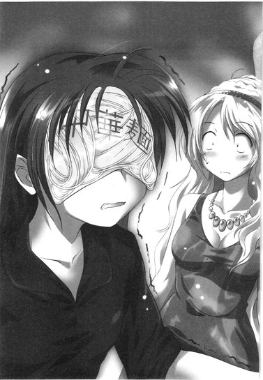
「お面っていうか......仮面っていうか、お麺っていうか」
漢字は麺ね、ヌードルの、と万里が言うと、千波は、
「顔麺舞踏会」
顔の麺を落とさないよう、腰だけ回して唐突に踊りだす。その姿のあまりのバカバカしさに、ぶはっ！ととうとう香子が吹いた。悔しげに口を押さえ、それでもやっぱり笑ってしまう。千波も耐え切れなくなったみたいに「ふふ......ふふふはははっ！なにしてんだろあたし！」と笑い出して結局麺を落とし、
「いや、まじ、これで登場しようかな!? そしたらヤナもとりあえず、いろいろ許してそのまま流そうって気になれるかも」
拾いながら、目元をゴシゴシと手で擦る。涙の跡もごまかして、夜の妖精はいつものふにゃふにゃ顔で笑ってみせる。
それはさすがにバカすぎるだろう、怒らせてはまずい、とやめさせて、そのまま三人は万里の部屋へ向かったのだが。
「ジョン......」
「ヨーコ......」
顔麺を余裕で上回るバカバカしさが、部屋で裸で待っていた。
カチューシャを搭載してパワーアップした柳澤と二次元くんは、裸で万里のベッドに寄り添って寝ていたのだ。眼鏡の二次元くんが、一応、ジョンらしい。男らしく柳澤を裸の脇に抱えている。その体勢のままでずーっと、万里たちが千波をつれて部屋へ戻ってくるのを待っていた、という。なかなか帰って来ないな、そうだな、などと言い合いながら。
裸の野郎二人にベッドを汚され、万里はブルー。目を汚されて、香子と千波もブルー。空気を読んでそそくさと二次元くんは起き上がり、「さあ、飲み会やり直しだ......岡ちゃんも到着したことだし......」と服を着る。
「や、その......千波が......笑ってくれるか、な、と、思って......」
柳澤はカチューシャをつけたまま、気まずげに千波を見上げていた。千波はゆっくりと顔を横に振り、
「ヤナ、それは全然おもしろくない。ただきもいばっかり。」
一刀両断。嫌そうに顔を背けながら香子が小さく千波に言うのが万里にも聞こえた。
「顔麺の勝ち」
ふははははー！ と千波が一人、勝利の笑い声を上げる。柳澤は不思議そうに、ただそれを見上げている。あ、麺類じゃん、と二次元くんが中華麺を掴み、万里はシンクで手を洗う。
まるでなにもなかったみたいに、飲み会が再開される。
＊＊＊
俺が寝た後に、なにか楽しいことが起きるのではないか──そんな気がして、万里は随分頑張って目を開けていた。
なにしろ酒は飲んでいない。朝までなんなら起きていてもいいと思った。
しかし何時間もあれこれアホなことを喋りまくって、買いすぎたかもしれない惣菜を腹いっぱいに食いまくって、
「......あれ......？」
結局いつしか、眠り込んでいたらしい。
二次元くんと柳澤がボソボソと「五次元ってすごいらしい」だとか「宇宙は物質というよりは概念」だとか、真夜中特有の異常なノリで熱く喋るのに自分も参加していたはずだが、自然に落ちてしまったのか。
むっくり身を起こし、夢の続きのような半覚醒。一番小さな常夜灯まで明かりを落とされた暗い部屋を見回す。この状態の照明を、二次元くんは「あけぼの」といった。万里、電気をあけぼのにしようぜ、と。下町ではそう呼ぶこともあるのか、それとも彼特有の言語なのか、どちらにせよ妙にいい味わいに思われて、万里も今後はこれをあけぼのと呼ぶことにした。
万里は床に敷いた布団から身体半分はみだして転がっていたらしい。柳澤が堂々と布団のど真ん中でタオルケットをかぶって寝入っていて、二次元くんは哀れ、テーブルの下で寒そうに身体を丸めて軽いいびきを立てている。
香子と千波はベッドに寝ていた。
先に眠ってしまったのは香子で、寝言でまで必死に「メイクを落とさないと......メイク落としを買いにいかないと......」と唸っていた。寝ているときだけは仲よさそうに、香子が小柄な千波をぬいぐるみみたいに背中から抱えて壁の方を向いて横向き、枕を分け合って安らかに眠っている。ユニゾンしている寝息が妙におかしい。
十時を過ぎたころに、香子は家に電話をかけた。大学の友達の岡千波という子の家に泊まるから、と嘘をついたのだ。多田くんといるんじゃないのと疑う親を信用させるために、千波は電話口に出されて自己紹介させられていた。え？小学生じゃありませ～ん！え？合成音声でもありませ～ん！え？ヘリウムも吸ってませ～ん！......などと一生懸命言うのが申し訳ないけれどおかしくて、男チームは必死に笑い声を抑えた。
嘘をつかせたことに心苦しさはあるが、さほど良心は痛まない。大学生なんだし、これぐらいはいいじゃん、と思ってしまう。そう思えるのは「悪いこと」はしていないから。いまだパリの灯は見えない。いまどき珍しいほどに清い関係を保っているのだから、これぐらいの逸脱行為は許されてもいいはずだ。多分。
午前三時。
万里は一人、ぼんやりと目をこする。......くっせえ、と小さく声を漏らす。
静かな部屋は、ものすごく臭かった。食べ物と酒と、なんといおうか若者のにおいが、濃厚に暑苦しくこもってしまっているのだ。
足音を立てないようにそっと立ち上がり、床に転がる友人の足を踏まないよう注意深くクロゼットへ向かい、静かに中から毛布を引っ張り出す。春に使って、最近の暑さに洗いもしないまま丸めてつっこんでしまったものだが、嗅いでみればさほど臭くもない。万里はそーっと跪き、二次元くんにその毛布をかけてやった。
そうして客が冷えないようにしてから、換気のために窓を開ける。途端にすぅっと風が抜けた。真夜中の冷えた空気は喋りすぎて疲れた喉にも心地よくて、万里はそのまま窓辺に座り込んだ。
ベッドを見やる。「う......ん」と低く唸って、香子がタオルケットの下にもぐっていく。すこし風が冷たかっただろうか。寝顔が見えなくなってしまって、とても残念に思う。
──ラブの終着駅はどこなの!?
日付が変わった頃。酔った千波が寝転がってサキイカを食いつつ喚いた声に、柳澤は腹筋で起き上がりながら「結婚！」と答えた。「その後は多分、惰性だ！生活だ！現実だ！」と。二次元くんは「人は誰しも先の見えない愛という線路を旅する電車......脱線すれば駅にはたどりつけぬもの......ちょっと今のフレーズよくない？使えるぞなにかに」すかさずメモに残そうと、アイフォンをいじりだした。
そして万里と香子は、目を合わせ、声を合わせて、「パ・リ～！」と。
なんで？ と問う千波に理由は伏せて、二人して、端から見れば死ぬほどうざいのも承知で笑い続けた。
二人のラブの終着駅は、パリにある。
万里はタオルケットの下で眠る、香子の身体の膨らみをぼんやりと見る。
パリ行きたい、早く行きたいとあせり、こだわる自分と、こうして気持ちのいい窓辺に座って、香子の寝息を聞いていられるだけでも永遠に満たされると思える自分と、両方の自分が確かに存在しているらしい。
まあ、できれば本当は、香子一人で泊まりに来てほしいのだけれど。
この東京の部屋でなにもかも放り出して、親にもいえない悪い関係をもってみたい。そう思うのも嘘ではないのだ。
二人きりだろうと、他の奴らがいようと、べたべたと平気でひっついてくる香子は、ちょっと自分を舐めているのだろうな、とも思う。余裕なんだろうな、と。甘い言葉を囁いて、かわいい顔を近づけて、ところ構わず手を伸ばし、触れ、しがみついて、平気でいるんだから。
なにをしても多田くんは安全──だとか思われているんだろう。パリじゃないもん、だとか。火をつけても絶対に爆発しないと約束します。と書いてある花火みたいに、万里を思っているに違いない。
でも花火なら、火をつけりゃ爆発するのが普通だろうが。なぜ、信じる。
足の裏だけが妙に火照って、ガラスにべたっと押し当てる。
こんな真夜中に、友達みんなが寝ている夜に、彼女の香子も寝ている夜に、自分だけ目が冴えてしまうだなんて。もやもや妙なことを考えてしまって、それを止めてくれる人もいないだなんて。
「......だれかー......」
抑えた声音で言ってみる。
「......起きてる人ー......」
いねえか。と、床に転がる。暗い天井を一人見上げる。
ずっと騒がしく喋り続けた楽しい時間の後遺症なのだろうか。目覚めてしまった頭はやたらとハイで、二度と眠れる気なんかしない。
異様に寂しくて、ぽつんと取り残されたようでもある。
こんな時間に起きてる人なんて、この世には自分以外には誰もいないのかも。そんな風にさえ思えてきた、そのときだった。
カラリ、とどこか近くで窓のサッシが開く音が聞こえたのだ。ひょっとして隣の部屋だろうか？だとしたらＮＡＮＡ先輩か、もしかしたら──。
起き上がりこぼしみたいにコロリと転がって身を起こし、万里は充電器から携帯をとる。こんな時間に迷惑かも、と思いはするものの、なぜだか妙な確信があった。
送ったメールは、たった一言。『起きてますか』とだけ。
送信ボタンを押して、ものの数秒だった。メールではなく、万里の携帯は着信に震えた。ワンコールだけで切れて、万里はやっぱり、と立ち上がった。
音を立てないようにベランダへ出て、そっとサッシを閉める。
冷えてざらつくコンクリに素足でつま先立ち、手すりから身を乗り出して、避難のときには簡単に蹴破れるパネルでしきられた隣のベランダをひょいっと覗く。
そこには、思ったとおりの人の姿があった。やっぱり、と万里は笑ってしまい、
「リンダ」
するっとそんな風に呼んでしまった。
「万里」
敬称をつけなかったことを責めもせず、リンダも同じポーズで手すりにしがみついて、万里を見て笑っている。
午前三時にお隣同士、なにをしているやら。
元同級生が、こんなところで。
このシチュエーションが妙におかしくなって、そのまま二人は声を殺してしばらくただ笑っていた。リンダは自分の腕に口を押しつけるようにして、万里は口だけ開いて声は出さず、ひたすら大笑いし続ける。
「な、なにやってんの!?」
「そっちこそ！」
かすれる手前まで抑えた声で言い合って、二人してお互いを指差した。本当になにをしているんだか。深夜のテンションに飲まれてしまって、また笑う。
笑いながら万里は妙なことを考えていた。タメ口でいいじゃん、と。先輩、だとか呼ぶよりも、今は「リンダ」の方がずっと自然で、普通に思えた。
ずっと前からそうだったことを思い出したような感覚が、万里の呼吸を整える。ほっ、と安心したみたいに、どこか硬いテンションで強張っていたみたいな身体がすみずみまで解れていくのがわかる。夜の冷えた酸素が心地よく行き渡る。
「飲み会？」
リンダが笑いを飲み込みながら、問うのに頷いて返した。
「そっちはＮＡＮＡ先輩と？」
「うん」
ちょっと息をつき、リンダは前髪をかきあげる。指で押さえたそばから、夜の風がその髪をまた乱す。
こちらを見る、瞳の強い光。
「ていうかさ、ちょうど思い出してたのよ。あんたのことを。だからメール来て、すっごいびびった。なんで私が起きてるのわかったの？」
「なんでだろ？ なんかそんな感じがしたんだよな」
「万里は前からそういう奴だった。部活の合宿とか、大会で遠征とかあるじゃん。あったんだよ、年に何回か。夜中に、寝付けないな～とか思ってると、あんたが女子の部屋にひたひたひた......って入ってきて、『ねえリンダ......起きてる？』って言うの」
「え、俺って痴漢じゃん」
「そうなのよ。痴漢みたいなもんなのよ。だからすげえイヤなんだけど、でも超ナーバスな顔して『俺眠れない......明日の練習バテるかも......』とか言うしさあ。あんたに起こされる私はどうなの？っていうね。そんで二人して寝不足で、朝のランでゲロとかね」
「男の友達いなかったのかな」
「いたいた。あんたはそいつら全員に『ねえ起きてる？』って一通りやって、結局最終的に私のとこに来るんだよ」
「ああ、つまり男が全員寝静まっているのを確かめてから痴漢に及んだ、と......普通に計画的犯行じゃん！」
「ガキだっただけでしょ。まだ幼かったんだよ、特に万里は」
「いや、違うね。今の俺にはわかる。その行動には、絶対エロい意図があった。絶対にあった。アぁイ、ワぁズ、ギルティー」
「ま、まじで？ ......うわ、じゃあもしや、あのとき私のパンツがなくなったのって実は万里が......？」
「えっ!?」
「うっそー」
なにがアイワズギルティだよ、アイワズゲイの言い方じゃんかよ、リンダはおかしそうに身をよじって笑う。随分昔、とある有名人の結婚相手が記者会見でそんなことを言って、当時の残酷なガキどもはその言い方をふざけて真似たものだ。──なんていう過去の記憶が蘇ったのか、それとも一般的な知識として残っていたのか、今の万里には判別もつかないが。
リンダは笑いの余韻を口元に残したまま、ふと町を見下ろした。
万里もリンダが見ている方へ目をやった。
深夜の町は妙に静かで、かすかな風の音しか聞こえない。まるで時間が止まったようだった。昼間、この辺りがどれだけ車の騒音に溢れてうるさいのか、引っ越してきてから初めて知った。
リンダと二人して、パネルを隔ててベランダに横並び。
黙ってこうしてぼんやりしていても、不思議と気詰まりな気はしないのだ。むしろ居心地がいい。あらゆるプレッシャーから解放され、許されたような気分になる。
喋らなくてもいいし、黙ったままでもリンダは変に思ったりしないとわかっている。全部オッケー。大丈夫だ。と、無条件に信じられる。誤解されたり、怒らせたり、嫌われたり、そんなことはないのだと安心できる。
だから万里は、
「......なんかさ」
リンダがしているのと同じポーズで頬杖をつき、自分のペースで思うままに語ることができた。
「うん」
「なんとなくなんだけど」
「なに」
「俺、あの頃、リンダのこと好きだったと思うよ。だからさっきのも、眠れないとかは言い訳で、普通にリンダが寝てるところを見たいだけ......の、ややエロ行為だったと思う。なのでごめん。謝っとく」
にやり、とリンダは笑ってみせた。
「そーお？」
横目で万里を見やり、リンダは妙に悪そうに唇をゆがめるのだ。ふ、ふ、ふ、と鼻で笑ってもいる。なんなのだろうか、この余裕は。
「......全然、そんなわけないとか思ってる？」
「まーね」
「......なぜどいつもこいつも、俺をシケた花火だと思い込むんだ......？」
それって全然安全じゃねえじゃん。いつ大爆発するか誰にもわかんねえじゃん、と。
小さく一人ごちた万里の目の前を、そのとき、不思議な物体がふわりふわりと上昇しているのに気がついた。
そのなぞ物体は風に煽られ、くらげが水中を舞うように何度か落ちたり浮いたりを繰り返し、しかしある高さを超えると、そのまま一気にすうっと高く吹き飛ばされる。
もう二度と地上には降りられないだろう、遥かな高さまで。
「なんだ？ ......ビニール？ ......か？」
「なに？ どれ？」
「あれ。ほら、あそこ」
リンダがパネルから身を乗り出してきて、万里が指差す先を覗き込む。二人は同じ角度で身体を傾け、さらにグングン高いところへ飛ばされていくそれをしばし見守った。
「......ビニール袋だね」
「だな」
見えなくなるまでなんとなく目で追ってしまい、そのまましばらく、万里はリンダと肩をくっつけあっていた。
こうしていれば安全だ、なんて、なぜ思うのかもわからないまま。
この世界の人がみんな眠ってしまっても、リンダがいれば大丈夫だと、理屈もなしに信じられる。
リンダを守護天使のように思っている今の自分の気持ちなのか、それともリンダと長い時間をともに過ごした過去の自分の思い出なのか、それも万里にはわからない。
ただ、今はこのままでいたかった。
取り残されてしまった寂しい真夜中を、こうやって乗り越えるのだ。こうやって、朝を待つ。きっと今までも、こうやっていた。そう思う。
「最初からこうやって、普通に昔のことを話せばよかったんだね」
遠くを見たまま、リンダが言う。耳元でそれを聞いている。
「......一度言いそびれた言乗って、なぜかどんどん毒素を出すんだよ。なんてことない話でも、貯めておくと有害になるの。時間が経つほど、やばくなる。なんでもさらーっと言えれば、それが一番マシなんだ」
自分のことや、友達のこと。今日の飲み会までのこと。リンダとのこと。思い出すごとに、万里は頷いた。本当にそうだ。その通りだった。
そうなんだけれど、しかしすべてはそう簡単に明け透けにはできない。毒素を出していそうないくつかの物事が、万里の脳裏をぼんやりよぎる。
その顔を覗き込むようにして、リンダは強く息を吐き出した。
「私と万里の間に、今はもう、言えないことなんてないね。私たちは、変わらない。......そう思ってもいいかな。本当は、変わってなんかないんだって。多田万里と、林田奈々。二人してこうやって生きてる。同じ空を見てる。それは全然、変わってない」
万里は答えられず、リンダの目を見返す。
変わってないなんてことがあるだろうか。
リンダを知らずに自分はいて、東京にいて、この部屋に暮らしている。あの頃とは、目に見えるもののほとんどが変わってしまったと万里は思う。それこそ、変わらないのはこのツラぐらいだ。この皮を一枚剥いたなら、もう無関係の別人でしかないのに。
それでも、変わっていないとリンダは信じたいのだろうか。万里は万里だと、あの頃のままだと、やっぱりリンダはそれを望んでいるのだろうか。
やっぱり、「この自分」は、本当には受け入れられないのだろうか──
「......万里？」
──そりゃそうだろう、と、誰かが言った。
リンダと生きてたのは俺だもん。
おまえじゃねえもん。
「......だよ、なあ......」
確かな声音で、万里の耳には聞こえたのだ。聞いた、と思った。呻くみたいにそれに答えて、万里はゆっくりと目を閉じた。
まだ遠い朝を、いつまでこうやって待っていればいいのだろう。
「リンダ。......先輩」
「......」
もたれあっていた肩が離れていく。今までリンダが触れていた部分が、風に晒されて余計に冷たく感じられる。
目を開いても、まだ世界は夜。黒の中にポツポツと光る、街の光。
「あの頃に、帰りたいですか。あの場所に。あの頃の俺がいたところに、帰れるなら帰りたいって思ってますか」
返事はなく、不意に話は途切れた。
リンダは万里の隣に並んで、口元を手で隠したまま、目だけを暗い空へ向けている。黙ってそのまま、なにかを考えているようだった。
もう帰れないですよ、永遠に──万里はそう思う。帰れるわけなんかないのだ。自分はこうなってしまったし、すべては変わってしまったし、時間は巻き戻したりできない。この現実を受け入れて、どうにか自分で見切りをつけて、いくつかのものは諦めながら生きていくしかない。でも口にはもちろん出せなくて、ああ、本当だ、と改めて思う。
言えない言葉は本当に、どんどん毒素を出すもんだ。そしてこの身を蝕むんだ。胸が痛むのはそのせいだ。
息を継ぐ。万里はなにか全然違うことを言おうと口を開き、そして、
「俺は、帰りたいよ！」
「......っ......」
──驚いて、自分の手を見た。
リンダも驚いていた。硬直したように身を反らし、万里の手を見ている。
一体なにを言ったのか、なにを叫んだのか、なにをしようとしていたのか、自分で自分がわからなかった。
手は、リンダの肘の辺りを掴もうとしていた。気づいて動きを止めたまま、当て所なく宙に浮いている。
ゆっくりと、指を動かす。引き寄せて確かめる。間違いなく、これは自分の手だった。自分の手、だったのに、そして自分の声だったのに、
「......俺、今、なんて言いました......？」
自分がなにをしたのか本当にわからないのだ。リンダの顎が一瞬、震えたのを見た。二人を隔てるベランダのパネルが、腰のあたりに冷たく当たる。
リンダはやがて、
「すげー」
と言った。目をぱちくりさせて、心底驚いたみたいに万里を見返す。
「寝落ちしたんだ？ 今の一瞬」
「......寝落ち......？」
そうだよ、と頷いて、笑う。そして勢いをつけて手すりから身を起こし、
「もう寝たほうがいいみたいだね、お互いに。寝不足ってのはなんだってよくない。神経過敏になっちゃって、いらんことまで考えたりするしね。ってことで」
小さく手を振って身を翻す。
「お休み。多田万里」
カラリとＮＡＮＡ先輩宅のサッシが閉まり、リンダはさっさと部屋の中へ戻っていってしまった。取り残されて、万里はいまだ呆然としている。
寝落ち？
腑に落ちなくて、納得もできなくて、部屋の中へ戻ることはまだできない。眠る奴らの静かな世界に踏み込んで、黙って目を閉じることなどできそうにない。
音のない夜に、一人ぼっちだと思う。いま、目を覚ましているのは自分一人だと。
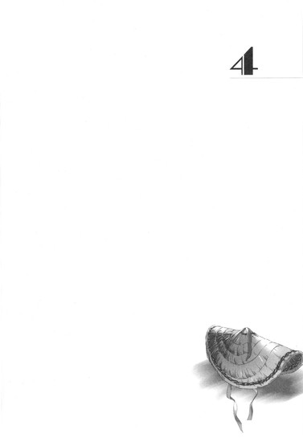
４
＊＊＊
万里の部屋での飲み会の後、香子は風邪を引いてしまったらしい。
みんなが泊まっていったその翌朝。男どもはまだいびきをかいて眠っていた、朝の七時。万里を起こしたのは千波だった。
肩を揺すられて半ば夢うつつ、目を開くと千波が枕元にしゃがみこんで寝顔を覗き込んでいて、「あたしと加賀さんはお先に帰るよ」と。ふがふが万里は頷いて、香子にメールしてー、とか言って手を振った記憶はある。
それからしばらくして本格的に目が覚めて、さすがは女子、と万里は思った。香子と千波は洗い物を済ませ、ゴミはすべてゴミ袋にまとめておいてくれて、それだけでも部屋はある程度の秩序を取り戻していたのだ。
柳澤と二次元くんを起こしたのが九時ごろだっただろうか。柳澤はまんまと自宅のゴミを出しそびれ、結局そのままその日は学校もさぼって久しぶりに男三人でぐだぐだ遊んで過ごしてしまった。
香子からは夕方にメールが来て、それで万里は彼女が風邪を引いたことを知った。付き合い始めてからは必ず一緒に過ごしていた週末も、香子は体調がよくならないといい、会うことはできなかった。電話をかけてもコールバックはなくて、メールもなくて、しかし寝込んでいる相手にしつこくするのも悪いと思い、留守電にメッセージを残して、あとはそっとしておいた。
結構責任を感じていたのだ。飲み会の主催者だし、夜中に涼しすぎたかもしれない風を部屋に入れたのも自分だし。
そして週があけて、月曜日。
おまけんの、久しぶりの練習日。
今日は来られる？ と朝からメールをしていたのだが返信はなくて、万里は、今日も香子はダウンしているのだろうと思っていた。
だから、昼になっていつもの集合場所である区の施設のリハーサル室で香子の姿を見たときには驚いたのだ。
「あれ？ 休みかと思った」
男子トイレで着替えを済ませてきた万里が声をかけると、香子は弾かれたように振り返った。白いＴシャツに、ごくありふれたジャージのパンツ。他の女子の先輩たちとほとんど同じような格好で、
「体調は大丈夫？ 風邪、かなりひどかったんだろ？」
「......」
声を出さずに、頷いてみせる。
シュシュを口にくわえているのだ。そうして両手でせっせと長い髪を後ろにかきあげて、くるくると毛先をうまいことひねってねじり、まとめ髪を作っている。
久しぶりに会ったにしては随分そっけない態度に思えて、あれ？と万里は香子の白い顔を覗き込んだ。
シュシュ一つで魔法のように綺麗に髪を結い、「なあに？」と香子が問い返してくる。その笑顔。完璧な、加賀香子スマイル。
いつもと変わらないようにも思えるが、なにか妙な距離感があるようにも思える。
もう一歩彼女に近づいてみようとしたそのとき、
「うわ、加賀ちゃん、すっごい上手にお団子できてるね」
「それどうやってやんの？ あたしの長さでもできるかな？」
先輩たちがブラシとヘアゴムを片手にやってきて、万里はなにも言えなくなってしまう。すごすごと女性陣のグループから脱出するしかない。
リンダの姿はまだなくて、
「多田万里ぃ、おまえ最近顔みせてなかったじゃねえか」
男の先輩にいきなり背後から尻を揉まれる。ひ、と飛び上がり、万里は先輩にバックをとられないよう、相撲取りのように円を描くステップで逃れようとする。しかし、
「や、すいません！ ちょっとあれこれ、いろいろあって......ていうかやめてください！」
「おうおう反抗的だな！」
「最近生意気って噂だぞ！」
別の先輩まで寄ってたかって、ばしばしケツを叩かれ、わき腹をくすぐられ、万里は「いーひひ！」と笑いながら逃げ惑う。三人、四人、といじめる先輩は増えて、たった一人の一年生男子なんてほとんどおもちゃも同然だ。
「こ、こないだの飲み会の件ならもう謝ったじゃないですか!?」
四年生もいたサークル飲み会から先に帰ってしまった件は、「気分が悪くなっちゃって」ですぐに許してもらえたのだが、
「それじゃねえんだよ！」
「おまえ、マジで俺らの黄金ロボ子たんと付き合ってるらしいじゃんか!?」
「こないだ手ぇつないでんの見たぞオラ！」
「ただの友達なんですぅ～って言ってなかったかてめえ!?」
激しくくすぐり倒されて、息もできずに床へ転がされる。いい年してなにしてんすか、と喚いてみても攻撃の手は緩まない。のしかかられ、タオルでビシバシ叩かれ、このままジャージを下ろされたりもするのでは、という予感さえしてくる。ぎゃあぎゃあ悲鳴を上げながら万里は思わず香子に救いを求めて視線をやったが。
香子は、棒立ちになっていた。
リハーサル室の真ん中付近に突っ立って、どこか魂が抜けたみたいな顔でいるのだ。
他の先輩方と喋るわけでもなく、騒がしい万里を見るでもなく、ぼんやりと大きな瞳をただ開いて、心あらず。なぜかさっきせっかく完成した髪をするりと解いてしまう。頭を二三度振って髪をかきあげ、戸口の方にうつろな目をやる。そのぼんやりした表情も、血の気がなくて白すぎる顔色も、普通な感じとはとても思えない。
先輩たちに転がされたまま、万里は香子の様子から目を離せなくなっていた。まだ熱があるのだろうか？気分が悪いとか？
声をかけたくて、必死に身体を起こそうとしたそのとき、
「はい、集合ー！ なにしてんのおまえらは！」
ドアが開いて、三年生の先輩が現れる。リンダも一緒に入ってきて、
「ちょっと!? 万里のこといじめてんのはどこのどいつさ！」
のしかかっていた野郎どもをあっさり蹴散らし、手を掴んで引っ張り、立たせてくれる。力を込めてその手を放し、びし！と勢いよく同じタイミング。お互いのツラを指して笑いあい、ダチの証。誰にも言わない、秘密の関係を共有するサイン。......別に秘密にする必要があるわけではないけれど、リンダと自分の関係を、わざわざ他人に一から説明する必要もないと万里は思っている。
ようやく助かった、と万里は香子を目で捜すが、集まってきたおまけんメンバーの人垣に阻まれてしまう。
三年生は大きなダンボールをいくつも持っていて、重そうに床にずしりと置いた。
「これが野郎の！ こっちがレディース！ 開けて、それぞれ持ってって！」
全員に中の荷物を開けるように指示をする。
言われるままにダンボールを開いてみると、全員分の使い古された下駄と、女性陣には笠が用意されていた。どちらにも他の大学の名前がマジックペンで書いてあり、コッシー先輩が一人一人に手早く渡していきながら、
「本番までの借り物だから紛失したりしないようにな！くれぐれも扱いは丁寧に！」
と声をかけている。
うーっす！ と低く返す声には、隠し切れぬ興奮。
そう。おまけんは来月、ついに阿波踊りデビューするのだ。
デビューといっても他の大学の阿波踊りグループ──いわゆる連に、人数勝負の群舞の踊り手として混ぜてもらえることになったというだけらしいが、それでもデビューはデビュー。みんなで真昼間の商店街を、踊りながら練り歩くという。
「鳴り物も提灯も俺らはなし。まあ、場慣らしだな」
おらよ、と万里にも下駄が手渡された。濃い木色の、紺の鼻緒の下駄。Ｍ、とマジックで思いっきりサイズらしきものが書いてあるのがやや残念だが、見た目よりも軽く、履き古しだが綺麗に磨かれていて、すこしも汚くはない。
用意してくるように言われた足袋に足を入れ、イエスノーうちわをジャージの腰に差し、万里はゲタを履いてみた。
意外なほどに高く、足元がぐらつく。前のめりになるように体重をかけてみて、
「......うわっ......」
がくっ、とつんのめりそうになる。
本当にこれで踊れるのだろうか。高くなった視線を不安げに辺りにやる。他の先輩たちも「こけたらかっこわるいよなー」「足の指がすでにして痛い」などと口々に不安を漏らしている。
香子は大丈夫だろうか、と見てみると、女性陣はみんな笠をかぶるのに難儀していた。赤い紐を顎で結わえ、顔を隠すような角度で傾け、「こんなに前見えなくていいの!?」「なんか前に借りたのよりでかくない？」だとかざわめいている。
そういえば、先輩たちはサークル勧誘の日に、この阿波踊りの装いをしていたんだっけ。万里の脳裏に、あの春の凄まじい喧騒の記憶が蘇る。桜の花吹雪に、チラシの紙吹雪。アメフト部の大騒ぎ、プロレス部のご乱行、チアの太腿、サンバの楽隊、そして──鮮やかだったリンダの唇。
あの日、リンダは自分を見つけてどう思ったのだろう。そのうちに訊いてみたいと万里は思う。
リハーサル室の女たちは、お揃いの笠をかぶって似たようなＴシャツ姿。綻ぶ口元だけが、いくつも並んで、ぱっと見ただけでは、もはや誰が誰だか判別もできない。
「ちょっと一列になって、足慣らしに流してみるか」
先輩の号令で、おまけんメンバーが輪を作るように並ぶ。そうしてそれぞれ足元をぐらつかせながら、せーの！の合図でゆるゆると、リハーサル室の外周を流し始める。
万里もよっ、と両手を上げ、教わったとおりに大きく足を踏み出すが、
「......おお......っと!?」
勢いよく下駄が前のめりに傾いて、一歩目から危うく転びかける。「おいおい！」とすぐ後ろの先輩が笑うのに、なんとか「大丈夫っす！」と振り返る。
流れを止めないよう、及び腰でもう一度足を出す。みっともなくこけないようにするのがやっとで、腰を落として浮くように、なんて踊りのコツを意識するのも難しい。しかもさっそく鼻緒がめちゃくちゃ食い込んで、指の股もひどく痛む。
先輩がたはそれでも踏んだ場数の差なのか、なんとかさまになった動きで、ゆったりとしたペースで踊りながら歩いていく。結構必死の形相で、万里はそれについていく。一緒に流れて、リズムを刻む。
そのとき、香子の姿がないことに気がついた。あのカクカクした彼女特有の動きがどこにも見えない。
「あれ？ 加賀さん？ どこだ？」
キョロキョロしていると、
「え？ いるよここに」
すぐ目の前、顔のわからなかった笠の女が振り返って片手を振る。見れば、ちょっと上げた笠の下の顔は確かに香子で、
「ていうか......すっごい馴染んでない!?」
万里は驚き、思わず声を上げた。他の先輩がたもその事実に気がついて、足を止めて振り返る。
慣れない下駄でみな動きが硬く、笠で顔は隠れ、似たようなＴシャツに似たようなボトムス。髪型もわからないこの輪の中では、香子は「普通に」踊れているのだ。黄金ロボ子──もとい、Ｃ‐３ＰＯなんて揶揄されることもなく、顔のない群舞の一人として気配は完全に消えていた。
おお！ とどこからともなく拍手が上がって、香子は笠の下の顔をすこし赤くする。
「俺たち、結構いけるんじゃねえの？」
「おっしゃ、もうちょいペース上げよう」
カカカン！ と練習用の鳴り物が入って、さらに踊りは続く。下駄履きの歩調をびしっと揃え、踊りをシンクロさせるために、一列に並んでゆるゆるとメンバーは輪を描いて進み続ける。エアコンは入っているはずだが今日はひどく蒸し暑くて、万里の首元はあっという間に汗に濡れた。
それでも前を行く先輩とぴったり合うよう、右、左、右、左。なるべく大きく足を踏み出し、手を舞わせ、慣れないゲタの足を少しずつ運ぶ。多田、腰、腰、と声をかけられ、浮きかけていた腰を意識して低く落とす。こけないよう慎重に。でももっと大きく、軽やかに。男らしく、ダイナミックに。
間隔をある程度開けていると、やがて隊列に滞留が起きる。
一列ずつ進むために、汗に濡れた踊り手が一角で渦になる。暑さに皆顔を赤くし、すこし息をあげ、交互に歩調を緩めてすれ違う。
「楽しいね」
誰かが、かすれた声で万里の耳元に言った。
「うん。楽しいね」
答えて、すぐ傍らの笠の女の気配を感じた。顔は見えなくて、でも、香子なのかな、と万里は思った。
息が重なって、近づく互いの体温が熱い。
偶然に小指と小指が触れ合う。電流が走ったのかと思う。あまりの熱さに、万里は一瞬目を閉じた。ぎゅっ、と強く、わずかに数秒。
小指を絡めて、死にかける。
心臓ごと締めつけられたみたいに、胸が異様な速度で高鳴る。
火傷しかけたみたいにすぐに解かれた指の温度が、万里の身体をなお竦ませた。息が苦しくて獣のように何度か喘ぐ。
もう一度、足を踏み出し、両手を上げる。鳴り物のリズムが肌を打つ。
楽しくて、苦しい──『恋愛』の熱が、踊るこの身の目を眩ませる。
＊＊＊
およそ二時間あまりの練習が終わって、
「加賀さん、これからどうする？ 講義は？」
ぽつんと鼻先に水滴。
万里はうわ、と空を仰いだ。その顔にさらにポツポツと大粒の雫が降ってくる。
確かに朝から雲が多くていつ降りだしてもおかしくないような空模様ではあったが、天気予報では雨は夜からと言っていたのだ。だから傘は持ってきていない。
空はたちまち暗くなって、むわっと埃っぽい雨のにおいが立ち込める。見る間にアスファルトには黒い染みがぽつりぽつりと増えていって、街を行く人々も足早に駆け出し始める。折りたたみ傘やビニール傘をおもむろに開く支度の良い人々も半分ぐらい。
やがて耳を聾する、雨の音。
あまりに急に強くなる雨に、あっけにとられて立ちすくんでいた万里もたまらず、
「やっばい、屋根のあるところ行こう！」
香子と一緒に走り出そうとするが、
「......」
香子はぼんやりと万里の顔を見て、足を動かさずにいる。
その髪に、頬に、雨の雫が落ちていく。
「なにしてんの!? ほら！」
左手で香子の荷物を奪い、右手で彼女の手を掴んだ。引っ張れば香子も走り出して、二人して、とりあえずシャッターの閉まった文具店の軒先に逃げ込んだ。
それとほぼ同時に、ザアッとすごい音を立てて、雨脚が一気に強くなる。叩きつけるような土砂降りだ。
飛沫が足元を白く煙らせ、サラリーマンはブリーフケースや新聞を頭上にかざして猛ダッシュ、近所の私立校の女子中学生たちは「きゃあああああっ！」とすごい声を上げながらなぜか大爆笑、集団でかしましく駅までの道を駆け抜けていく。
万里は顔を拭い、気持ち悪く湿ったデニムをどうしようもなく見下ろした。
「すっごい降り方......！ 傘、買う？」
香子ももちろんびしょ濡れで、シフォンのブラウスの袖は透けて肌に貼り付いているし、ブランド物らしきカーフのバッグにも無残なシミがまだらに染みてしまっている。あちゃー、と万里は冷たく濡れた髪をかきあげる。
「いるな、傘、絶対。ちょっと俺、そこのコンビニまで走って加賀さんの分も買ってくるわ。冷えて風邪、また悪くなったらまずいし」
そして、気がつく。
押し黙ったままでいる香子の横顔は、見たことがないほどに硬くこわばっているのだ。白い頬を濡らす水滴を拭いもせず、香子は鼻先に濡れた髪を貼り付けたまま、息を殺して万里の傍らに立っている。
「......加賀さん？ どうかした？ 具合悪い？」
慌ててその顔を覗き込むが、香子は瞳を動かしもしない。おおい、と手を振って、やっと万里を見てくれたが、笑いもしない。
ただ、虚ろな視線だけが揺れる。
雨に湿った空気が、薔薇の香りばかりを濃密にする。そこにいる香子は存在もあやういほどに静かで、このまま掻き消えてしまっても不思議ではないほどにおぼろげに思える。雨の音が、なにもかもをどこかに流し去り、「なし」にしてしまいそうな気さえする。
普通じゃないことだけは確かだった。なにか、万里のあずかり知らぬところで香子の心境に変化が起きたのだ。
「加賀さん、どうしたの？ なにかあった？」
「......」
魂の抜けた目をして無表情のまま、香子は瞬きばかりを繰り返す。長い睫毛の先からは、途切れることなく雨粒が伝い落ちていく。いくつもいくつも、止むことなく。そうして、
「......私のこと、好き？」
そんなことを訊くのだ。唐突に。
え？ と思わず一度訊き直してしまう。
「な、なに？ ......なんで？ 好きに決まってるじゃん」
万里が答えても、香子の表情に変化はなかった。香子は雨に濡れた髪をかきあげもせず、雨の中、静かに呼吸だけをしている。透けた服を貼り付けて、細い肩が震えている。
そして、万里の手を掴む。濡れた指先は冷たくて弱々しく、力がまったく入っていない。
「......本当に？」
かすかに首を傾げると、その顎先からも雫が伝い落ちた。
「本当に、私のこと、好き？」
揺れる視線は、責めている。
言葉にはしないまま、しかし確かに、万里のなにかを。
悪い予感に心臓が跳ねた。一体なにが彼女をこうさせているのかわからないのだ。でもなにかが起きている。
「なんでそんなこと今？ 好き、っていってるじゃん。......もしかして、こないだ岡ちゃんが言ったことを気にしてる？やなっさんのことで俺が嫉妬してるかもって、本気でそれを心配してるのかよ？だとしたら、そんなの全然、」
首を横に振り、香子は万里の言うことなど多分本当には聞いていない。なにを言っても変わらない目をして一人、尋ね続ける。
「私のこと、好き......？ いつまで好きでいてくれる？どうなったら嫌う？私を......いつか、いらなくなる？......こんなことを言う私は、うっとうしい？」
──うん。
だとか、答えたら香子は泣くのだろうか。
でもすこしはそう答えたい気分になりつつあった。わけがわからないままこんなふうに責め立てられて、気がつけば悪者に仕立て上げられている気分。嫌うだの、いらなくなるだの、うっとうしいだの、そんなことを今まで万里が口にしたことなどないのに。香子のこの被害者意識は、一体どこから湧いて出た？なぜいきなりこんなふうになってしまう？
わからないからどうしたのと尋ねているのに、それには答えず、香子はひたすら尋ねてくる一方で埒が明かない。
好きだよ、とはっきり言っているのに、香子にその言葉は通じないのだ。
それを空しく思ったり、腹立たしく思ったり、傷ついたり──男ならそんなふうには感じないとでも思っているのだろうか。
「いや、ほんとに......なんなんだよ？」
「......私を、まだ、......好き？」
まだ続けるのか。
「......だから！ それ、意味、わかんねえって！ほんとにいきなり、なんなんだよ！俺、加賀さんになにかした!?」
雨の音に負けないように言い返した声は、すこし強く感じられたかもしれない。香子はびくっと身を震わせて、
「......だって......」
必死に、万里の目と視線を合わせた。そして、
「不安なの。......怖いの。いやなことばかり考えちゃう。......自分でもこんなのやめたいよ。多田くんの前ではいつもかわいくしてたいんだよ。でも、どうしても......！どうしても、不安なんだよ......っ」
くしゃっと綺麗な顔を歪める。息が跳ねて、その後は泣き声。
「......ええ......？」
一体、俺のなにが彼女を不安にさせたのだろうか──万里は懸命に自分の言葉や態度を思い返す。考えても、わからない。ただ目の前では香子が泣いている。喉元からこめかみまで赤く染めて、片手で目元を覆い、しゃくりあげている。
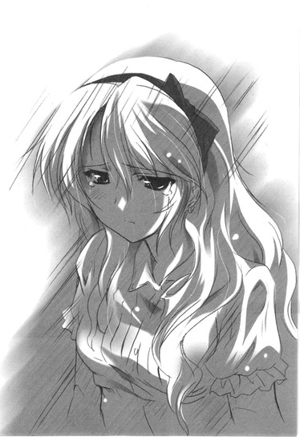
その声を聞いているだけで万里はたまらず、
「......ごめん。ごめんね？ 加賀さん。ごめん、ごめん......ごめん。ほんとに」
必死になって顔を覗き込む。香子の泣き声にだけはどうしても弱いのだ。腹立たしさやプライド、疲労、そういうすべての諸々があっけなく剥ぎ取られて、万里はまるで、丸裸。たまらない。本当に。
どんな強い言葉より、殴られたり蹴られたりするより、刃物で傷つけられるより、香子の涙の一粒の方が万里の心をずっと手ひどく痛めつけた。
香子には、完璧な幸せが似合う。万里は心からそう信じている。
だから、それをこそ、捧げたいのだ。
完璧な幸せで彼女を包み込みたい。それ以外のものは一つも見せたくない。悲しみや、痛みや、つらさや不安や心配や、そんなものはすべて彼女の世界から排除したい。純粋で完璧な、きらきらと輝く美しいもの。壊れやすい宝物。それが、加賀香子だから。
彼女に似合うものだけで、この世のすべてをあつらえたいのだ。
「俺が全部悪い。ごめん」
そう言ってから、ふと気がつく。
香子のためになら、どんな泥でも自分は平気でかぶれる。
どんなに汚らしいものでも、冷たい、悲しい嫌なものでも、彼女を守るためにならいくらでもこの身に受けられる。
盾になるように冷えた香子の身体を抱きしめて、万里は雨が降り注ぐ空を見上げた。鈍い銀色の厚い雲が、何重にも重なって低く渦巻いているのが見える。この雨はきっと、まだしばらく続くのだろう。あまりの雨脚に足止めを食っている人が多いのか、気がつけば人通りも絶えていた。
「不安になんかならないでいいよ。心配することなんかなんにもないんだから。全部大丈夫。完璧」
万里の胸に顔を押し付け、香子はまだ泣いている。
子供のようにしゃくり上げる肩を優しくさすり、濡れた髪を撫で、万里はそっと囁いてみる。
「......顔麺、いる？」
ぴく、と香子の背が震えた。ほんのすこしだけ、吹き出したような気配。泣きながら笑っているような、息の音。いらないよ......と、怒ったみたいなかすかな声。
心からほっとした。
彼女には絶対に、嫌われたくないのだ。ただそれだけが確かな現実の問題だった。一緒に過ごす時間はなによりも楽しくて、愛しくて、絶対に手放したくない。一生、というか永遠に、加賀香子とともにいたいのだ。
そのうざさや意味不明さに翻弄され、困らされたいのだ。
万里はもう一度、力をこめて香子の身体を抱きしめた。どうか、泣かないでほしい。嫌わないでほしい。ここにいてほしい。不安になんかならないでほしい。怖がらないでほしい。信じてほしい。幸せになってほしい。香子が疑うほどの「我」なんて、はっきりいって自分にはないとすら思うのだ。
自分のことなんか、心の底からどうでもいい。
どうだっていいのだ。ほんとうに。
すべては、加賀香子の幸福のために。それだけでいい。他にはなにも欲しくない。主体性のない男なんて、彼女はいやだろうか。
雨の音に紛れ、軒先に隠れ、そろそろと万里はしゃがみこみ、すくい上げるようにして、慎重に香子にキスをした。香子はただ、じっと身体を硬くして、そのままなにも言わずにいた。
ぬるい体温で、触れ合った。
境目もわからなくなるほどに、やがて二人は溶けてしまう。背筋から首元まで、凄まじい震えが駆け上ってくる。恐ろしいほどの鋭敏さで、全身の細胞が潤っていく。神経のすべてがショートする。
脳みそも共有なのかもしれない。じりじり痺れるこの火花の音は、香子の耳にも響いているのかも。
この先なんて、なにもない。これが命の全部かもしれない。重ねた唇が離れたら、そして下らないこの目を開いたら、どんな世界の終わりがくるのだろうと万里は思う。
＊＊＊
──ゆっくりと、目を開いた。
万里の部屋は真っ暗で、窓の外も深夜の黒にいまだ深く沈んでいた。
なぜこんな時間に目が覚めてしまったのだろうかと思う。死んでいる俺が眠るなんてことがそもそもおかしいのかもしれないけれども。
身体を起こし、違和感はさらに増す。
いつも傍らにいるはずの万里がいないのだ。今生きている、俺がいつも見守っている、あの多田万里の姿がない。どこにもいない。一体どこに、と立ち上がりかけて、
「......っ......！」
ひどい頭痛に目が眩んだ。
力が入らない膝がへたって、マットレスにうずくまる。
その、シーツの感触。頬に触れるタオルケット。俺の体重できしむベッド。枕に残る、自分のにおい。なにかがおかしい。なにか、決定的におかしいことがある。
身を起こし、とにかくベッドから下りようとして、そのまま床に崩れ落ちた。どさっ、と重い音が響く。身体は重石でもくくりつけられたようで、手も足もうまく動かない。頭の重ささえ首で支えるのは難しく、何度も額を床にぶつけた。
震える手をどうにか伸ばし、夜闇にかざす。
そんな、ばかな。
ばかな。
なぜ。
壁際に立てかけた姿見には、床に這いつくばった多田万里の姿が──この俺の姿が、映っていた。ぼうぼうの髪を逆立て、目を見開いて、俺は鏡の中から自分を見返している。
自分の顔だ。
俺のだ。
「......う、......あ......」
生きているのは、この俺だった。
俺は命を、肉体を取り戻しているのだ。それを理解した瞬間、がむしゃらに力を込めて立ち上がる。壁に手をつき、体重を前へ。ふらつきながら足を踏み出す。
俺には行くべきところがある。行かなければいけない。なにを思うより早く、迷いなどあるわけもなく、
「リンダ......！」
ただ一人の名前を呼んだ。
俺はずっと、ずっとずっと、ずっと、
「......リンダ......！」
ずっと、おまえのところに駆けつけたかった。俺は帰りたかった。俺は約束を果たしたかった。
足を無我夢中で動かし、狂おしくリンダの名を呼び、部屋を数歩でつっきって、玄関に飛び出そうとした。その瞬間、足がなにかを踏みつけた。ダッシュしかけた勢いのまま身体がふわっと宙に浮いて、「足元をすくわれる」という一文が妙な明確さをもって脳裏に、
──ゆっくりと、目を開いた。もう一度。
口の中に熱い鉄の味の血がじわりと広がり、舌で恐る恐る探ると、唇の内側をどうやら前歯で深く傷つけてしまったようだった。
気味悪く開いた傷口が疼き、上唇全体がカッと嫌な熱をもつ。手の甲で拭うとぬるりと気味悪い感触があり、血が顎のあたりにまで垂れてしまっているのかもしれない。
顔面からフローリングの床に叩きつけられたのだ。歯が折れていないだけよかった、なんてどこかのんきに思うのは、まだ寝ぼけている証拠なのだろうか。
床には、香子のために買ったスリッパがひっくり返っている。あれを踏んで、こんなにひどいこけ方をしたのだと思う。
心臓の鼓動はまるで泣き叫んでいるようだった。痛いほどに激しく跳ねて、万里は思わず両手で胸を押さえる。苦しくてたまらない。
帰りたい。
リンダ。
そう思った記憶の輪郭は、くっきりと焼きついたまま。
リンダ、リンダ、リンダ──そう叫んだことも覚えている。
そして、今は床に座り込んでいる。
あれは過去の、いや、本当の自分だったと万里は思う。医者にいかないといけないのかもしれない。朝になったら電話をして、親にも今起きた事態を話して、そして静岡に帰って、かかりつけの病院で診察してもらって、そして......どこへいくのだろうか。
治る？
としたら、この自分は？
どうなるのだろうか。この身は一体、どうなるという。
口元を押さえて、万里は膝で部屋の中ほどへ這い戻る。本棚として使っている、カラーボックスの中段。
奴の顔を、見ようと思ったのだ。リンダの隣で笑うあいつの顔を。どちらが本物の自分なのか、もはや自分でもわからない。だからせめて別人であることをこの目で確かめてやろうと、万里はそう思った。しかし、気がつく。
「......あれ......？」
確かにここに入れたはずの、あの写真がない。いつの間にか、なくなっている。かき消えている。まるで最初からなにもなかったかのように。
「......なんで......？ なんでだ......？」
進行中の事態に耐え切れなくて、冷たい床に座りこみ、口からはぬるい血を垂らしたまま、一旦万里は目を閉じる。
次に目を開いたときにも自分がここにいるかどうかなんて、誰にもわかりはしない。
あとがき
ついに真夏......！ ですね......！ 現在我が家の室温は32℃......うん！暑い！窓全開で扇風機を回して、どうにかこうにか、しのいでおります。
こうしてパソコンに向かっているだけでも、Ｔシャツが絞れそうなほど汗まみれです。若い頃のサラサラと肌の表面を流れるようだった汗とは質が違って、なんだか妙にこってりと濃厚に、ポタリ......ポタリと......顔からはラー油が。背中からは背脂が。もう三十路汁だくだくの油ましまし。全身毛穴全開だし、あぶらっこくテカりまくりだし、おや？うちのお母さんがなぜかすぐそこにいるような気がと思って振り返ったら、汗に濡れて脱ぎ捨てた私の服から圧倒的な年増のオーラがゆらりと禍々しく立ち昇っているだけだし......もうどうしたらいいのでしょう。この夏が終わる頃には、ぱっさぱさの絞りカスしか残ってないかもしれません。
例年なら外を出歩いても、お店や乗り物の冷房が私には強すぎてかえって寒かったりして、暑い日ほど羽織るものが必需品でした。でも今年はどこも節電モード、エアコン控えめのようです。さっき、この炎天下をフラフラ散歩してきたのですが、目的の本屋にたどり着いて店内に入っても、むわぁ......！の、もわぁ......！で、息もできずに立ちすくむ私。
目の前が暗くなりかけて、薄れ行く意識の片隅でぼんやり思ったのは「カッパはそりゃ、キュウリ食うわな......」と。暑いもんね......。皿......蒸発するもんね......。川の水で冷やしたみずみずしいキュウリ、そりゃ、食うわな......。味噌でもつけたら塩分も補給できるしな......とか。縁もゆかりもない、見ず知らずの生臭い両生類（なのか？）の好物にまで思いを馳せるほど、さっきの私はやばかったみたいです。皆さまもどうぞ気をつけてください。カッパが見えたらもう危険信号です。熱中症、危ない。行きずりの両生類とは目を合わせたらだめだぞ！
さて、そんなこんなで、『ゴールデンタイム』も、気がつけば３巻まで巻数を重ねて参りました。お手にとって下さった皆様、本当にありがとうございました！楽しんでいただけましたでしょうか？今回も、勉強している様子が皆無のお気楽な大学生たち......。きみらそんなんでいいのか!?と、そろそろ書きながらつっこみいれたくなりました。自分の身を振り返ってみれば、もうちょっと真面目だった気がします。ていうかあの頃は体重も今より十キロ近く軽かったし、汗もサラサラでした。蚊にもよく食われたな。今は全然です。虫が寄ってきません。なんでかな？熟れ過ぎたかな？この肉体......。
次巻は、年が明けた頃にお届けしたいと思っております。よろしければぜひ、この先もお付き合い下さいませ。駒都えーじ先生、担当の湯浅さま、引き続きお世話になります。
そして最後になりましたが、東日本大震災で被災された皆様へ、心よりお見舞い申し上げます。
底本：ゴールデンタイム３ 仮面舞踏会
竹宮ゆゆこ
二〇一一年八月十日 初版発行